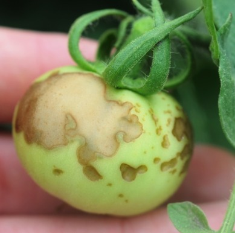
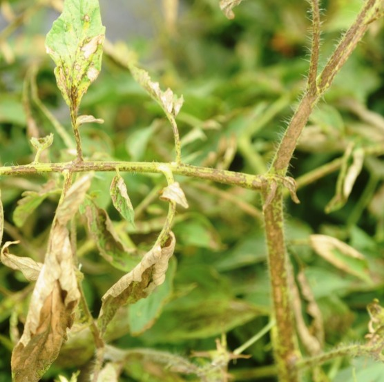

Figure UC-020 ◆

The Living Soil Encyclopedia · Book 4 of 5
The Living Soil Encyclopedia, Book 4: Plant Health And Defense
Text and original figures © 2026 Damon Smith.
This work is released under a Creative Commons Attribution-ShareAlike 4.0 International licence (CC BY-SA 4.0). You are free to share and adapt it so long as you give credit and license your contributions under the same terms.
This edition is free. It is not sold, carries no advertising, and generates no revenue.
Photographs by third parties are licensed separately from the text and are credited individually in the Image Credits section. Several appear by permission granted specifically for free, non-commercial educational use. Those permissions cover this work only. They do not transfer to anyone who reuses this text under the licence above, and anyone doing so must clear those photographs independently or remove them.
Nothing here is professional agronomic, medical, or regulatory advice. Test amendments on a small scale before applying them broadly, and follow all product labels and local regulations.
Source, errata, and the current edition: https://github.com/dstorm3691/living-soil-encyclopedia
Five-book working edition — structurally reassembled; publication blockers remain open
Page numbers populate during print rendering through target-counter CSS.


Text note (B30_020): Cowpea curculio pod damage / larva inside pod
Text note (B30_066): Cowpea curculio larva inside pod with clean rights
Text note (B30_093): Okra pod distortion scouting note: Twisted or scarred pods can follow piercing-sucking feeding. Inspect pods, buds, and nearby foliage for stink bugs or leaffooted bugs, and avoid diagnosing from pod shape alone.
Text note (B30_094): Okra pod distortion scouting note: Twisted or scarred pods can follow piercing-sucking feeding. Inspect pods, buds, and nearby foliage for stink bugs or leaffooted bugs, and avoid diagnosing from pod shape alone.
Text note (B30_098): Okra pod distortion scouting note: Twisted or scarred pods can follow piercing-sucking feeding. Inspect pods, buds, and nearby foliage for stink bugs or leaffooted bugs, and avoid diagnosing from pod shape alone.


Field photo brief (SP-11): Row cover over hoops with a clear cue: Show sealed edges, hoops, and ventilation/pollination decision point


Text note (B30_021): Okra pod distortion scouting note: Twisted or scarred pods can follow piercing-sucking feeding. Inspect pods, buds, and nearby foliage for stink bugs or leaffooted bugs, and avoid diagnosing from pod shape alone.
Text note (B30_043): Okra pod distortion scouting note: Twisted or scarred pods can follow piercing-sucking feeding. Inspect pods, buds, and nearby foliage for stink bugs or leaffooted bugs, and avoid diagnosing from pod shape alone.
Text note (B30_058): Okra pod distortion scouting note: Twisted or scarred pods can follow piercing-sucking feeding. Inspect pods, buds, and nearby foliage for stink bugs or leaffooted bugs, and avoid diagnosing from pod shape alone.
Text note (B30_065): Okra pod distortion scouting note: Twisted or scarred pods can follow piercing-sucking feeding. Inspect pods, buds, and nearby foliage for stink bugs or leaffooted bugs, and avoid diagnosing from pod shape alone.


Integrated Pest Management (IPM) is a systematic, ecological approach to managing pests. In a regenerative system, the goal is never eradication; the goal is to maintain pest populations below the threshold of economic or aesthetic damage by leveraging the ecosystem's natural checks and balances.
IPM operates on a strict hierarchy of interventions, moving from the least disruptive to the most disruptive.
IPM requires active observation. The grower must "scout" the garden regularly, turning over leaves and identifying the specific pest and its life stage.

Methodology Comparison: Pest Management Approaches These are practitioner frameworks or doctrines unless independently supported for a specific pest, crop, product, and setting.
- Soil Food Web (Ingham): Soil Food Web practitioners view pests as one possible symptom of biological or plant-health imbalance. Improved soil biology may contribute to plant resilience, but it does not make pests impossible or replace scouting and IPM thresholds.
- Coot's Mix (Bennett): Coot's Mix practitioner protocols often use neem, karanja, kelp, and crustacean meals as part of a pest-resilience strategy; effects are ingredient-, rate-, pest-, soil-, and crop-dependent, not guaranteed systemic pest control.
- Bionutrient (Kittredge): The claim that insects cannot digest complex proteins belongs to the Bionutrient/Kempf practitioner framework. It should be treated as a plant-health heuristic about reduced free nitrates/simple amino acids and possible lower susceptibility, not as a universal entomological law.
- KNF/JADAM (Cho): KNF/JADAM practitioner protocols may use JHS (JADAM Herb Solution) and JWA as direct botanical pesticide tools when thresholds are crossed. Because these can affect beneficials and may involve toxic plants or caustic ingredients, they require safety controls and careful timing.
- Biodynamics (Steiner): Biodynamic pest "peppering" is practitioner/organizational doctrine. Mechanism not established in peer-reviewed literature; the methodology is surveyed at this level only per Book 1 scope.
Safety Box: Organic Pesticides and Biological Controls Organic-approved does not mean harmless. Bt, Spinosad, soaps, oils, JHS/JWA mixtures, and biological insecticides must be matched to the pest and life stage, used according to the product label or tested practitioner protocol, and timed to reduce harm to pollinators and beneficial insects. Avoid spraying open flowers or active pollinator periods unless the label explicitly allows it. Wear appropriate protection, keep mixtures labeled, and store them away from children, pets, and food.
North Texas Note: The Squash Vine Borer is a serious pest in North Texas because larvae feed inside stems, making late intervention difficult. Treat Bt stem injection or directed Bt application as one tactic among several, not the only effective strategy. Cultural and mechanical options include planting less-susceptible Cucurbita moschata varieties such as Tromboncino, using row cover before flowering, scouting for eggs, removing infested vines, timing plantings, and using trap or succession plantings where appropriate.
Weed management is the integrated practice of preventing, suppressing, removing, and exhausting unwanted plants that compete with crops, interfere with harvest, host pests, or produce future seed. Common names include weeding, integrated weed management, weed control, seedbank management, stale seedbed, cultivation, and mulching for weeds. Source class: extension/government for cultural, mechanical, mulch, and label-based herbicide guidance; peer-reviewed mechanism where seedbank ecology, competition, and cover-crop suppression are cited; practitioner doctrine for fixed “weed-free equals healthy soil” claims. Functionally, weed management keeps crop beds productive while protecting soil structure and biology.
Weeds are not one category. Annual weeds germinate, flower, set seed, and die within a season. Perennial weeds persist through roots, rhizomes, stolons, bulbs, crowns, or tubers. Some weeds are broadleaf plants; others are grasses or sedges. Some emerge from the top inch of soil; others invade from edges. Some are hosts for pests and diseases; others stabilize paths, support insects, or protect soil when managed outside the bed.
A weed-management system includes prevention, mulch, shallow cultivation, hand-weeding, stale seedbeds, cover crops, occultation/tarping, mowing, edging, sanitation, crop spacing, irrigation placement, and herbicides only where labels, crop sites, and the grower’s system allow. Weed-free soil is not automatically biologically superior. Bare, constantly disturbed soil can be hotter, drier, more crusted, more erodible, and less biologically active than managed covered soil. The goal is crop advantage, low seed return, safe access, and protected soil.
Key properties are growth habit, reproduction method, timing, rooting depth, seed persistence, and crop competition window.
Weed management works by reducing weed emergence, weakening established weeds, preventing seed production, and giving the crop priority access to light, water, nutrients, and space. Mulch blocks light and buffers the surface. Shallow cultivation kills tiny seedlings before they establish. Hand-weeding removes weeds near crop stems where tools are risky. Cover crops suppress weeds by canopy closure, residue, root competition, and sometimes allelopathy. Stale seedbed technique intentionally germinates a flush of weed seeds in the top layer, kills them with minimal disturbance, and then plants the crop.
Seedbank management is the long game. Every weed that sets seed increases future labor. Every clean harvest window that prevents seed return lowers future pressure. Perennial weed management is different. Bermuda grass, nutsedge, johnsongrass, bindweed, and thistle-like perennials are not solved by one shallow pass; fragments and underground storage organs can regrow.
Weed management does NOT mean every non-crop plant is bad. Managed path vegetation, insectary strips, cover crops, and living mulch can be useful. It also does NOT mean one tactic controls all weeds. Mulch helps annual weeds but may not stop nutsedge. Cultivation helps annual seedlings but spreads rhizome fragments if done poorly. Herbicides, where used, are label-governed tools, not soil-health practices.
Use a layered program.
Pre-emergence herbicide logic belongs only where the product is labeled for the crop, site, timing, and grower’s standards. Corn gluten meal is sometimes marketed as a natural pre-emergent, but effectiveness is context-dependent and it adds nitrogen; do not treat it as a universal weed solution.
Weed management interacts with soil pedology. Wet Blackland clay should not be cultivated; wait for friable moisture or use surface mulch/tarping. It interacts with irrigation. Overhead irrigation wets the whole surface and germinates more weeds; drip narrows the germination zone. It interacts with mulch and nitrogen. High-carbon mulch on the surface suppresses weeds and protects soil; mixing it into the root zone can immobilize nitrogen.
It interacts with crop density. Strong crop canopy suppresses weeds, but overcrowding can increase disease. It interacts with IPM. Some weeds host pests, while some flowering plants support beneficials. The decision is not “all weeds bad” but “which plants, where, when, and with what risk.”
Do not cultivate deeply around established crops. Deep hoeing prunes roots, brings up fresh weed seed, dries soil, and damages structure. Do not leave weeds to flower “for beneficial insects” inside production beds without knowing pest and seed risk. Do not use herbicides without a label for the crop and site. Do not use contaminated hay, manure, or grass clippings as mulch.
Common failures include waiting until weeds are large, stirring the seedbank repeatedly, mulching over perennial weeds without enough suppression, using living mulch too close to young vegetables, and ignoring path edges. Another failure is trying to keep soil bare and polished; bare soil in North Texas bakes, crusts, and loses moisture.
Verify by weed counts, crop vigor, seed return, labor time, and recurrence. A successful program has fewer weed seedlings after each flush, less seed set, easier weeding, fewer perennial escapes, and less crop competition during the critical early growth window. For stale seedbeds, success is visible as a first flush killed before planting and fewer weeds after crop emergence. For mulch, success is fewer light-sensitive annuals and better soil moisture.
If weeds persist, identify species. Grasses, sedges, annual broadleaves, and perennials require different tools. If a bed repeatedly fails, check mulch depth, irrigation pattern, crop spacing, edge invasion, and seed source.
Weed management follows seedbank cycles. Preventing one season’s seed set can reduce future pressure. Perennial root systems require repeated depletion. Mulch must be renewed as it decomposes. Tarps must be stored dry and protected from UV when not in use. Hoes, knives, and hand tools need cleaning and sharpening. Herbicides, if used, have label shelf life and storage restrictions.
Source clean mulch, straw, compost, and cover crop seed. Avoid hay with weed seed or herbicide risk. Check cover crop seed labels for weed seed and hard seed. Choose tools that match bed width: stirrup hoes for paths and open rows, collinear hoes for shallow work, knives for tight spaces, and hand pulling near crops. For tarps, use opaque material heavy enough to exclude light and withstand wind.
For any herbicide or pre-emergent, verify crop/site label, active ingredient, PHI/REI where relevant, rate, temperature limits, irrigation requirements, and local legality.
North Texas weed pressure follows moisture pulses. Warm rain after drought produces flushes. Summer irrigation can grow weeds faster than crops if drip is poorly placed. Blackland clay makes timing critical: too wet, and tools smear; too dry, and weeds snap off without roots. Mulch before June heat and keep paths covered. Bermuda grass and nutsedge require edge control and repeated depletion; one mulch layer is not enough. Fall beds need stale seedbed or shallow flush control before carrots, lettuce, spinach, cilantro, and brassicas.
For final use, pair this entry with a weed-family and life-cycle quick chart. The chart should distinguish seedling annuals, established annuals, rhizomatous perennials, sedges, and volunteer crops, because the tool choice changes by category.
This chart should be practical, not botanical trivia: the purpose is to choose the least disruptive effective tactic.
Mulch Types and Selection; Cover Crop Planting and Termination SOP; Seasonal Succession and Bed Pivoting SOP; Crop Rotation by Family; Soil Pedology Basics; Persistent Herbicide Contamination; Corn Gluten Meal; IPM Hierarchy; Insectary Guild Design; M1-1: No-Till Bed Establishment.
Common names / synonyms: Plant immunity, host resistance, biological resistance, plant defense activation. Distinct from genetic resistance (cultivar-level) in that it refers to the physiologically induced and managed immune state of any plant, regardless of cultivar.
Functional definition: Plant immunity as an IPM layer is the deliberate management of the plant's own defense systems — through ISR-triggering rhizosphere biology, SAR-activating compounds, balanced nutrition, and soil food web health — as a proactive, continuous pest and disease management strategy that raises effective action thresholds and reduces the frequency of direct intervention.
Plant immunity in the IPM context operates through four components established in Tier 1:
ISR (jasmonate/ethylene pathway): Triggered by PGPR bacteria at the root. Effective against necrotrophic pathogens and herbivorous insects. Requires 2–4 weeks to establish from inoculation. See Induced Systemic Resistance (ISR).
SAR (salicylate pathway): Triggered by pathogen infection or exogenous SA-pathway activators. Effective against biotrophic and hemibiotrophic pathogens including powdery mildew and bacterial pathogens. Develops over 3–7 days. See Systemic Acquired Resistance (SAR).
Nutritional completeness: A plant at Stage 4–5 of the bionutrient pyramid (adequate mineral nutrition, active secondary metabolite production) is intrinsically more resistant. Phenolics, terpenes, and alkaloids are the plant's chemical defense arsenal. See Bionutrient Farming (Kempf / Kittredge).
Soil food web health: A biologically active rhizosphere with ISR-triggering PGPR, AMF colonization, and adequate grazer-tier cycling produces a plant that is continuously primed at a baseline level without active intervention. See Soil Food Web (Trophic Structure) and Rhizosphere.
How immunity raises the action threshold:
The action threshold concept from Entry 22 (IPM Hierarchy) assumes a specific pest population level at which the plant-environment-pathogen balance tips toward economically damaging disease or pest injury. A plant with active ISR priming, adequate SAR capacity, and complete secondary metabolite production sits at a higher effective threshold — the pest population or pathogen inoculum load required to overwhelm the plant's defenses is larger. This does not eliminate the threshold; it raises it. The practical result is fewer intervention events per season, later disease onset, and slower epidemic progression when disease does establish.
The continuous vs. reactive distinction:
Conventional IPM begins at pest observation and works down the tier hierarchy. Immunity-based IPM adds a continuous pre-observation layer that precedes and reduces the frequency of the four formal tiers. A bed with established ISR biology, good Brix, and complete nutrition has effectively been managed at Tier 0 continuously since transplant. The formal IPM tiers engage less often because the plant is a harder target.
Nutritional status and immune expression:
The plant's immune machinery requires metabolic resources. A nitrogen-deficient plant cannot run the SA signaling cascade at full amplitude — it lacks the amino acid precursors for defense enzyme production. A phosphorus-deficient plant has impaired ISR expression — the JA/ET signaling pathway requires adequate mineral cofactors. Immunity management and nutritional management are the same program, not parallel programs.
What plant immunity as an IPM layer does NOT do:
It does not eliminate disease in high-inoculum environments. A well-primed plant encountering overwhelming pathogen pressure — late blight in a region-wide epidemic, root-knot nematodes at high soil density — will still develop disease. Immunity raises the threshold; it does not create immunity in the absolute sense. It also does not substitute for scouting — a primed plant still needs to be monitored. The action threshold has moved; it has not disappeared.
Building the immunity layer at the start of each season:
At transplant:
During establishment (weeks 2–6):
During active growth:
Decision framework — when immunity management alone is sufficient:
If pest populations are below action threshold, plant Brix is stable or rising, and no new disease symptoms are appearing — the immunity layer is doing its job. Do not escalate to Tiers 2–4 in this condition. Resist the instinct to spray preventively on a schedule when observation and plant health indicators suggest the threshold has not been reached.
Synergies:
Immunity management and insectary habitat management are mutually reinforcing — beneficial insects suppress pest populations, reducing the pathogen-vector load that challenges the plant's immune system; the plant's immune status determines how efficiently it responds when pest feeding does occur.
AMF colonization amplifies ISR. Well-colonized plants show stronger and faster ISR expression than non-colonized plants in controlled studies. The AMF inoculation at transplant is therefore both a phosphorus delivery investment and an immunity investment.
Antagonisms:
High-rate synthetic nitrogen suppresses ISR by reducing plant exudate investment. Broad-spectrum synthetic fungicide applications kill ISR-triggering PGPR, eliminating the biological foundation of the ISR layer. Copper applications timed coincidentally with PGPR applications suppress colonization. The immunity layer and the conventional fungicide program are fundamentally incompatible as co-primary strategies — choose one as the primary approach and use the other tactically.
Expecting immunity to substitute for resistant cultivars: A susceptible cultivar with perfect ISR and SAR management still performs worse than a resistant cultivar under high disease pressure. Immunity management amplifies whatever resistance capacity the cultivar possesses; it does not overcome the absence of resistance genes.
Neglecting nutrition while investing in biologicals: ISR-triggering bacteria applied to a zinc-deficient, phosphorus-locked plant produce attenuated immunity. The nutritional foundation must be addressed alongside the biological program.
Treating immunity management as a one-time application: ISR requires maintained colonization density. A single PGPR application at transplant produces 4–8 weeks of reliable priming; reapplication is required for season-long protection.
Brix trend: The most accessible immunity proxy. A plant maintaining or increasing Brix through peak disease pressure periods is expressing its defense chemistry efficiently. A plant showing Brix decline coinciding with early disease symptoms is losing the immunity battle before visible spread.
Disease incidence comparison across seasons: Multi-season tracking of disease onset timing and incidence percentage in immunity-managed vs. unmanaged comparable beds. Immunity management shows as later onset and lower incidence — not zero incidence.
ISR establishment confirmation: 4–6 weeks after PGPR inoculation, sample the rhizosphere and confirm colonization by microscopy or by plant response (better establishment rate, faster root development than uninoculated control plants in the same bed).
The immunity layer is a managed biological state, not a product. The biological inputs that support it — PGPR inoculants, AMF, vermicompost — have their own storage requirements; see individual entries. The plant's immune state persists as long as the triggering biology remains colonized and the nutritional foundation supports defense expression.
No single product to source. The immunity layer is assembled from: ISR-triggering PGPR (see Bacillus subtilis, Bacillus amyloliquefaciens, Trichoderma), AMF inoculants (see Endomycorrhizal Inoculants), vermicompost or AACT (see individual entries), SAR-activating compounds (potassium phosphite, potassium silicate — see Foliar Spray Strategy), and nutritional program support (sap analysis, targeted foliar corrections).
Spring establishment is the highest-leverage timing: The North Texas spring shoulder season (March–May) is when immune establishment has the highest payoff. Disease pressure builds from May onward — powdery mildew on spring crops, bacterial diseases on summer transplants. A plant with ISR established by mid-April and SAR priming running from early April is prepared for the May–June pressure surge. Starting the immunity program at first transplant in March rather than waiting for symptoms in May is the most important timing discipline for North Texas growers.
Summer biology stall affects ISR maintenance: As established in Tier 1, PGPR colonization declines in surface soil above 95°F. Reapply ISR-triggering biologicals in September as soil temperatures drop and fall production begins. The fall disease pressure window (September–November) is nearly as significant as spring in North Texas and benefits equally from established ISR.
Related encyclopedia entries: Induced Systemic Resistance (ISR), Systemic Acquired Resistance (SAR), Disease Triangle, IPM Hierarchy, Bionutrient Farming (Kempf / Kittredge), Brix Monitoring, Bacillus subtilis, Endomycorrhizal Inoculants (AMF), Actively Aerated Compost Tea (AACT), Foliar Spray Strategy
Same-manuscript provisional internal anchors: Chapter 39 (IPM Foundations); Chapter 42 (Disease Identification and Management); Chapter 5 (Plant Physiology and Nutrition).
Common names / synonyms: Garden scouting, crop monitoring, pest scouting, field scouting, IPM monitoring. The formal term in extension literature is "monitoring" — scouting is the practitioner term for the same activity.
Functional definition: Scouting is the systematic, scheduled, and recorded observation of plants, soil, and the growing environment to detect pest and disease presence at the earliest possible stage, assess population levels relative to action thresholds, identify natural enemy presence, and generate the observation record that drives threshold-based IPM decisions.
A complete scouting program has four components:
Schedule: Minimum twice per week during active growing season. Daily during known high-pressure periods (first three weeks after transplant, peak aphid season in spring, peak mite season in summer). Scouting less than twice per week misses the early population build that allows Tier 2 and Tier 3 responses before Tier 4 becomes necessary.
Tools: Hand lens (10x minimum — many pest eggs, early infestations, and disease spores are invisible to the naked eye), sticky traps (yellow for aphids, whiteflies, fungus gnats; blue for thrips), a notebook or phone for recording observations, and a clean collection bag for suspect disease samples.
Observation record: Date, bed or location, pest or disease identified, population estimate (absent / trace / light / moderate / heavy — or numerical count where practical), natural enemies present (yes/no/species if known), plant symptoms observed, and any interventions made. Without a record, scouting produces only reactive responses; with a record, it produces trend data that enables predictive management.
Sampling locations: Pests and diseases do not distribute randomly. Focus on: undersides of leaves (aphids, spider mites, whitefly adults and eggs, powdery mildew early colonies), stem bases (squash vine borer frass, southern blight mycelium, slug damage), new growth tips (aphid colonies, thrips feeding damage), and the soil surface around the stem (cutworm frass, slug trails, fungus gnat larvae).
Why early detection changes the outcome:
Most pest and disease epidemics follow an exponential growth curve — a small population doubles rapidly under favorable conditions. A colony of 10 aphids missed at day 1 can be 1,000 aphids by day 10 under optimal conditions. At 10 aphids, Tier 2 physical removal or beneficial release is sufficient. At 1,000, Tier 4 is likely required to prevent plant collapse. The mechanism is simple: intervention cost and plant damage increase exponentially with detection delay; scouting compresses the detection delay.
Natural enemy assessment:
Scouting is not only about pests. Natural enemy presence is a critical data point for threshold decisions. A moderate aphid infestation with visible parasitoid mummies (the bronze, swollen, immobile aphid bodies that indicate parasitism) or abundant lacewing adults in the insectary plantings should receive a higher threshold before intervention — the natural enemy population is building and will suppress the pest colony without chemical assistance. Applying an insecticidal spray to a below-threshold aphid colony with active parasitoids destroys the biological control that would have resolved the problem at no cost.
What scouting does NOT do:
Scouting does not manage pests — it informs management decisions. A grower who scouts consistently but never acts on the data has collected records without benefit. The scouting record is only useful when paired with defined action thresholds and a willingness to escalate through the IPM hierarchy when those thresholds are met.
The scouting walk — sequence:
Threshold reference: Thresholds for specific pests are in individual pest entries. For unfamiliar pests, UC IPM online guidelines are the most accessible reference. Texas A&M AgriLife Extension provides Texas-specific thresholds for common regional pests.
Sample submission: When a disease symptom cannot be identified by visual observation, collect a sample in a sealed plastic bag (do not add moisture — moisture accelerates decomposition and makes lab diagnosis harder) and submit to the Texas Plant Disease Diagnostic Laboratory at Texas A&M AgriLife. Identify before treating — a copper application for a Fusarium wilt problem treats the wrong pathogen and wastes both the product and the intervention opportunity.
Scouting and the immunity layer: Scouting frequency can be modestly reduced (not eliminated) in beds with established ISR/SAR programs and high Brix, because the effective action threshold is higher. The observation record still runs — but the grower can be less anxious about short detection delays when the plant's immunity layer is active.
Scouting and insectary habitat: Insectary plantings near the scouting beds should be included in the walk — check for beneficial insect presence, egg masses, and pollen availability. The beneficial census in the insectary informs the action threshold decision in the crop bed.
Irregular scouting: Scouting twice one week, skipping the next, then twice again produces a dataset too gapped for trend analysis. Consistency matters more than intensity — twice per week every week is better than five times one week and zero the next.
Scouting without recording: Memory-based scouting produces reactive management. Written records produce predictive management. The record is the output; the walk is just the data collection.
Scouting only on sunny days: Many pest populations are more visible in overcast conditions — spider mites move more freely, aphid colonies are more accessible before heat causes plant wilting, and disease sporulation is often visible early in the morning before UV degrades spores. Scout in early morning, overcast or not.
Misidentification before recording: Record what you observe accurately even when uncertain — "unknown insect, dark, 2mm, on leaf underside" is more useful than a confident misidentification. Photograph unknown organisms with a phone and identify before acting.
The scouting record is itself the verification tool. A functioning scouting program produces: consistent early detection before populations reach action threshold; declining time-to-detection across seasons as the grower's eye improves; clear correlation between scouting observations and intervention outcomes; and a multi-season record that reveals which pests arrive when, in which beds, at which population levels — the predictive foundation for Tier 1 cultural management improvements.
No product. Store scouting records in a consistent location — a dedicated notebook, a phone app, or a simple spreadsheet. Retain at least 3 years of records to produce meaningful multi-season trend analysis. A 5-year scouting record is a significant piece of farm knowledge.
Hand lens: 10x is the minimum; 15x–20x is better for spider mite identification and egg counting. Bausch & Lomb Hastings triplet design is the standard quality benchmark. $15–40.
Sticky traps: Seabright Laboratories, Gemplers, and Arbico Organics carry color-specific traps. Yellow Pherocon AM traps for aphids and whiteflies; blue sticky cards for thrips.
Record-keeping apps: Scouting apps (Scout — by Wilbur-Ellis, AgriWebb, or simple photo-journal apps) allow GPS tagging of observations and photo attachment. A plain notebook works equally well. The tool matters less than the habit.
Morning scouting is mandatory in North Texas summer: By 10 a.m. in July, leaf temperatures in direct sun exceed 100°F, plants show heat-wilting that mimics disease symptoms, and many pests have retreated to shaded microhabitats. Scout between 6:30 and 9 a.m. during summer. Observations made at noon in North Texas summer are unreliable for population estimates and symptom assessment.
Spider mite season: In North Texas, spider mites on tomatoes, cucurbits, and beans typically build from late June through August. Weekly sticky-trap monitoring understates mite pressure — mites don't trap well. Direct leaf underside inspection with a hand lens is required. Look for fine webbing and stippled upper leaf surfaces. By the time webbing is visible to the naked eye, the population is already at or above action threshold.
Fall transplant window is highest-risk: The September replanting window in North Texas coincides with high background pathogen and pest pressure from the summer season. Scout new fall transplants daily for the first three weeks — aphid, whitefly, and harlequin bug pressure on fall brassicas can collapse a planting within 10 days of transplant if not detected early.
Related encyclopedia entries: IPM Hierarchy, Plant Immunity as IPM Layer, Foliar Spray Strategy, Aphids, Spider Mites, Whiteflies, Thrips, Powdery Mildew, Disease Triangle, Beneficial Predators — Generalist Survey, SOP — Daily Scouting and Observation, SOP — IPM Decision and Intervention
Same-manuscript provisional internal anchors: Chapter 39 (IPM Foundations); SOP 3 (Daily Scouting and Observation); SOP 4 (IPM Decision and Intervention).
Common names / synonyms: Daily scouting, garden observation walk, pest monitoring, scouting protocol, integrated pest management monitoring. This is the operational version of the Scouting Protocol reference entry (Phase K1), which describes the framework and rationale. This SOP is the executable procedure — what to carry, where to look, what to record, and when to escalate.
Functional definition: The daily scouting walk is a structured, systematic observation of the entire garden performed at a consistent time each morning — recording plant health status, pest presence and population estimates, natural enemy presence, and environmental conditions — and constituting the primary data source for all IPM decision-making. Without consistent scouting data, IPM decisions are reactive guesses; with it, they are informed thresholds.
The scouting system has four components:
The walk: A structured route through the garden covering every bed, crop, and planting zone in a consistent sequence.
The look: Specific observation targets — what to examine, where on the plant, and what signs indicate which problems.
The record: A written log capturing what was observed, where, and at what density — the data that enables trend assessment and threshold comparison.
This SOP does NOT reduce pest pressure by itself; it creates the observation record that makes later IPM actions justified, timed, and reversible.
What scouting does NOT replace:
Scouting is not treatment. It is the information-gathering that makes treatment decisions defensible rather than arbitrary. Scouting also does not replace integrated management of the host-environment-pathogen triangle (Disease Triangle) — it identifies when the triangle has tipped toward disease or pest outbreak, not why the conditions allowed it.
Why consistency in timing matters:
Many of the most damaging North Texas garden pests are most visible and most countable at specific times of day. Squash bugs aggregate under leaves and at the soil line in early morning; they disperse and hide in midday heat. Spider mites are most easily seen on the underside of leaves before the leaf wilts in afternoon heat. Aphid populations look larger at dawn when attended by ants; by midday, parasitoid wasp activity has removed some visible individuals. Scouting at the same time each day produces comparable counts that can be tracked as trends — a population that was 8 per leaf on Monday and 22 per leaf on Wednesday is building; the same counts reversed would indicate natural enemy control is operating. These trends are invisible if scouting happens at random times.
Why the natural enemy assessment is as important as the pest count:
The IPM hierarchy's primary question at threshold breach is not "what do I spray?" but "are natural enemies present and building?" A pest population at threshold with no natural enemy presence warrants immediate intervention. The same population with active parasitoid wasps, lady beetle larvae, or lacewing eggs warrants a 48-hour hold and re-scout — the natural enemy population may drive the pest below threshold without intervention, preserving the biological control relationship for the rest of the season. This assessment cannot happen without consistent scouting data on both pest and natural enemy populations over time.
Why written records outperform memory:
A grower who scouts daily but does not write down what they find cannot answer the question "is this getting worse or better?" after 10 days. Written records with dates and counts provide the trend data that the threshold-based IPM system requires. Memory consistently underestimates pest populations observed 5+ days ago and overestimates the severity of what was seen yesterday — both errors lead to incorrect intervention decisions.
Equipment:
Timing:
Summer (May 15 through September 30): 6:00–9:00 a.m. Non-negotiable. By 9:30 a.m. on most North Texas summer days, VPD is rising past the acceptable window, squash bugs are dispersing into hiding, and spider mite colonies on the undersides of heat-stressed leaves are entering the desiccation-induced reproduction sprint that makes afternoon counts unreliable. The quality of information gathered after 9:30 a.m. in summer is substantially lower than at 6:30 a.m. If you cannot scout before 9:30 a.m. in summer, do not skip it — scout anyway for the 30–40 minutes available, prioritizing the crops under highest current pressure.
Spring and fall (March–May, October–November): 7:00–10:00 a.m. Temperature and VPD windows are wider; the quality of information is acceptable across a broader morning window.
Winter (December–February): 9:00 a.m.–noon. Scout midday when temperatures are warmest and pest activity (what little there is) is most visible. Winter scouting is lower intensity — primarily monitoring overwintering cover crops and brassicas for aphid pressure and caterpillar feeding damage.
Step 1: Check weather and environmental conditions first.
Before examining individual plants: assess the overall environmental context. Record: temperature, estimated VPD (is it already hot and dry, or still cool?), last rain date, any weather events since the last scout (high wind that could have moved pests from adjacent areas, heavy rain that may have physically removed foliar pest colonies and disrupted fungal spore germination, or conversely, extended humid conditions that favor disease development). These conditions frame all subsequent observations.
Step 2: Walk the entire garden in your established route.
Your scouting route is fixed — you walk it the same way every time. A consistent route ensures no bed is skipped and allows you to develop pattern recognition for your specific garden. A simple route for a multi-bed North Texas garden: start at the bed furthest from the gate, work systematically toward the gate, ending with any container plantings or porch-area herbs. Ending at the gate ensures you don't unconsciously cut the walk short when time is short.
During the walk, slow down at any bed where previous scouting found active pest pressure — these beds require more careful observation than beds currently clean.
Step 3: At each bed, examine 5–10 plants using the structured look sequence.
Do not examine every plant. A representative sample of 5–10 plants per bed or crop planting provides adequate data for threshold decisions at home garden scale. Sample randomly — do not preferentially examine the plants that look worst (this inflates apparent population density) or the ones that look best (this deflates it).
The structured look sequence (per plant):
a. Whole-plant overview: From 2–3 feet away, assess overall appearance. Wilting (drought? vascular disease? root pest?), yellowing pattern (mosaic = virus; interveinal = nutrient; V-shaped from tip = disease; random stippling = spider mite or thrips), presence of webbing (spider mites), visible frass (caterpillars), visible insects on stems or leaves.
b. Stem base and soil line: Squat down and look at the stem at and just below soil level. Squash bug adults and egg masses concentrate here in the morning. Look for: soft brown stem rot at the soil line (Southern blight), entry holes with frass (squash vine borer), soil pushed up against stem from cutworm activity, slug trails.
c. Lower leaf surfaces (abaxial): This is the primary habitat for the most damaging North Texas pests. Flip 3–5 leaves per plant. Look for: spider mite colonies (fine stippling on the leaf, fine webbing in webbed mite infestations, visible mites moving on the undersurface), aphid colonies (clusters of soft-bodied insects, often attended by ants — a reliable indicator), thrips feeding (silvery scarring and black fecal deposits), whitefly adults (flying up from disturbed leaves) and nymph scales (flat, pale scales stuck to the leaf surface), powdery mildew (white powdery patches on the undersurface first on some crops), downy mildew (angular water-soaked lesions with gray-purple sporulation below), caterpillar eggs (mass or scattered).
d. Upper leaf surfaces: Powdery mildew (white patches progressing from lower to upper), early blight and Septoria (dark lesions with characteristic patterns), bacterial spot (water-soaked to dark lesions, often with yellow halos), thrips feeding (silvery scarring), leaf curl (virus symptoms, broad mite feeding, or environmental response).
e. New growth tips: Thrips preferentially infest new growth — check the terminal bud and newest leaves. Aphids also concentrate at stem tips. Look for deformed or cupped new leaves (broad mite, herbicide drift) or blackened/bronzed new growth (thrips-vectored virus).
f. Flowers and fruit surfaces: Caterpillar entry holes with frass at stem end of fruit (tomato fruitworm, corn earworm). Spotted wilt symptoms (concentric rings, mosaic patterns on fruit). Blossom-end rot (calcium/irrigation issue, not pest — record separately). Stink bug feeding scars.
Step 4: Count pest population and record.
For each pest observed, record:
Step 5: Check sticky cards.
Pull sticky cards from their stakes. Count the trapped insects (aphids, whiteflies, thrips, fungus gnats) on each card for your record. Compare to the previous session's count. Increasing counts on sticky traps = increasing adult flight activity = expect population increases in the plants below within 5–7 days. Decreasing counts = population declining. Replace cards when they are more than 50% covered with insects or debris.
Step 6: Record and assess against thresholds.
Record everything observed before making any intervention decision. Then compare observed population densities to the thresholds for each pest species. North Texas thresholds for the five most common summer pests (home garden scale):
| Pest | Monitoring unit | Threshold | Notes |
|---|---|---|---|
| Aphids | Average per leaf or per plant tip | 25–50 per plant tip for solanaceous/brassica crops | Raise threshold significantly if natural enemies present and actively feeding — a population with lady beetle larvae may control itself |
| Spider mites | % of sampled leaves with stippling | 10% of sampled leaves showing stippling | Act sooner on heat-stressed plants — their capacity to compensate is lower |
| Whiteflies | Adults per plant (estimate) | 10–15 adults per plant, combined with nymph presence below leaves | Whiteflies at low density rarely warrant intervention; high adult density with nymph evidence warrants response |
| Thrips | Flowers and tips per scouting sample | 1–2 per flower (thrips count is done by tapping flowers over a white card and counting) | TSWV risk justifies lower threshold on susceptible crops |
| Caterpillars | Larvae per plant | 1 larva per plant (young instar) | 3rd instar+ larvae are far more damaging; treat early |
Step 7: Make the escalation decision.
If any pest is at or above threshold: proceed to IPM Decision and Intervention SOP (M3-2) before the next day's scout.
If no pest is at threshold but counts are increasing: increase scouting frequency to every other day for the pest in question, and note the trajectory in the log.
If populations are stable or declining with natural enemies present: continue monitoring at current frequency; do not intervene.
If no significant pest pressure is found: record the clean observation date, note any environmental conditions that may change this (incoming heat wave, storm system that may bring pest movement from adjacent areas), and continue the routine.
With IPM Decision SOP (M3-2): Scouting provides the data that M3-2 processes. The two SOPs are sequential — scouting always precedes and triggers the decision protocol. Do not skip to M3-2 without having scouted.
With seasonal succession: The pest suite in North Texas changes dramatically by season. Spring scouting focuses on aphids on cool-season brassicas, overwintered thrips and whitefly populations, and early-season cutworm activity. Summer scouting centers on spider mites (the dominant high-risk summer pest), squash vine borer adults, cucumber beetle flight, and disease progression in tomato and cucumber. Fall scouting adds harlequin bug monitoring on brassicas, whitefly pressure (often peaks in October), and fall armyworm on warm-season crops still in production. The structured look sequence stays constant; the species being prioritized shifts.
With disease scouting: The same walk and look sequence covers both pest and disease monitoring. Early blight and Septoria are found on the lower leaves of tomato during the lower-surface inspection. Powdery mildew is found first on lower leaf surfaces. Southern blight is found at the stem-soil interface during the stem base check. Integrated pest and disease monitoring in a single structured walk is more efficient than separate pest and disease walks.
Scouting at the wrong time of day in summer: As detailed in Section 4. A post-10 a.m. summer scout misses squash bugs (dispersed), spider mites (colonies harder to see on wilted, curled leaves), and the natural enemy activity assessment that is critical for intervention decisions. The 6–9 a.m. window is productive; the rest of the summer day is not.
Sampling bias: Consistently examining the same 5 plants per bed (the most accessible, the closest to the path), or preferentially sampling the worst-looking plants, produces biased data. Randomize plant selection within the bed — move to different areas of the bed each scouting session.
Not recording before treating: Recording a pest population after treating it produces falsely low counts. Always record the pre-treatment observation separately from the post-treatment follow-up. The log requires: scout date + pre-treatment count, then 3–5 days later, scout date + post-treatment count. This is the only way to assess whether an intervention worked.
Scouting frequency reduction during busy periods: The weeks when scouting is most tempting to skip — mid-July heat, early-September fall transition urgency — are exactly the weeks when pest pressure is highest and natural enemy populations are most informative. Consistent scouting during peak stress seasons is more valuable than consistent scouting during low-pressure periods.
Verification that the scouting system is working:
A functional scouting system produces intervention decisions before populations reach damaging levels. If you consistently find pest populations already at "severe" levels when you first observe them, the scouting frequency is inadequate or the look sequence is missing the early-detection observation points.
The scouting log as a learning tool:
At end of season, review the log for: earliest date each pest was first detected each year, the conditions associated with population explosions (heat events, rain gaps, specific crop ages), and the interventions that produced measurable population decline versus those that did not. Over 2–3 seasons, the log builds a garden-specific pest calendar that enables pre-season preparation — ordering biological controls before they are needed, setting up exclusion cloth before adult cucumber beetle flight begins.
Sticky traps: Replace when more than 50% covered. Typical service interval: 1–2 weeks in peak pest season (May–September), 3–4 weeks in low season. Store replacement cards sealed in their packaging — exposed adhesive collects dust and becomes ineffective within a few days.
Scouting log: The log itself is the long-lived output of the scouting system. Physical logs in a waterproof notebook kept in a garden bag are practical. Digital logs in a phone app (farm/garden management apps, or a simple notes app with consistent formatting) are acceptable. At minimum, the record format should capture: date, crop, pest ID, count per unit, natural enemies present/absent, action taken or not taken.
Hand lens: A 10x jeweler's loupe ($10–20) or 10x clip-on phone macro lens ($15–30) is sufficient for all home garden scouting. A 20x loupe improves identification of small mites and eggs but is not required.
Sticky traps: Yellow sticky cards (Seabright Labs, Gro-Stake, or equivalent OMRI-listed yellow sticky traps) and blue sticky cards (for thrips) are available from garden supply retailers and online.
Reference materials: Texas A&M AgriLife Extension publishes pest identification guides specific to Texas vegetable crops, available for free download. UC IPM (ipm.ucanr.edu) provides detailed pest and beneficial insect identification resources that apply to North Texas conditions.
The North Texas garden scouting calendar has four distinct phases:
Spring (late February–May): Primary concerns are aphids on cool-season crops (broccoli, kale, chard, peas), imported cabbageworm and cabbage looper on brassicas, and overwintered thrips populations activating on new growth. Scout at 7–9 a.m. Cucumber beetle adults begin flight when soil warms to 55°F — typically late March in DFW. Scout cucurbit beds daily from this date forward.
Early summer (May–June): The transition period. Cool-season crop pests are peaking; warm-season crop pests are establishing. Squash vine borer adult flight begins when black locust or chicory blooms — a traditional phenological marker for the DFW area. Scout 6:30–8:30 a.m. Begin checking squash and zucchini at the stem base daily.
High summer (July–September): Spider mites are the dominant high-risk pest. Every scouting walk in this period begins with lower-leaf inspection on tomato, cucumber, and melon. Spider mite population doubling time at 95°F+ is 3–5 days — a population below threshold on Monday can be at severe-damage density by Thursday. Scout daily. Scout at 6:00–8:30 a.m., non-negotiable. Add: check all solanaceous crops for TSWV (tomato spotted wilt) symptoms — mottled, bronzed new growth indicates thrips-vectored infection that requires immediate rouging of infected plants.
Fall (October–November): Harlequin bugs on brassica transplants are the primary threat in early fall — they move from summer host plants as those plants senesce in October. Scout brassica transplants specifically for adult and nymph harlequin bugs from transplant through mid-November. Also: whitefly populations often peak in October–November on fall crops and cover crops. Fall armyworm can defoliate cover crop stands rapidly — check cover crops and lawn areas adjacent to the garden.
Related entries: Scouting Protocol (Phase K1 reference entry — the framework and threshold rationale), IPM Hierarchy (Entry 22), IPM Decision and Intervention SOP (M3-2 — the sequential next step), Plant Immunity as IPM Layer, Beneficial Predators — Generalist Survey (K2 — natural enemy ID reference)
Related pest entries (K2–K11): Each pest entry contains pest-specific threshold guidance and natural enemy information relevant to the scouting decision.
Internal provisional anchors: Chapter 39 (IPM Foundations); SOP 7 (Observation and Record-Keeping — provisional internal anchor)
Common names / synonyms: IPM decision protocol, pest intervention decision tree, threshold-based intervention SOP. This SOP processes the scouting data collected in M3-1 into a structured intervention decision. It does not specify products or application rates — those are in the individual pest and disease entries and the Foliar Spray Application SOP (M2-2).
Functional definition: The IPM Decision and Intervention SOP is the sequential protocol followed when a scouting observation (M3-1) records a pest or disease population at or above threshold — moving from identification confirmation through natural enemy assessment through tier selection through intervention execution and follow-up, in that sequence, with explicit decision gates that prevent premature or incorrect intervention.
The decision protocol has six sequential gates:
This SOP does NOT authorize treatment merely because a pest is present; it converts scouting data, threshold context, and label/source constraints into a defensible intervention choice.
Skipping any gate increases the probability of intervention failure, off-target effects, or disruption of the biological control relationships that reduce intervention frequency over time.
Why identification precedes treatment:
The most common IPM failure at home garden scale is treating the wrong pest with the wrong tool. Thrips and spider mites both cause foliar stippling — but Bt (effective against caterpillars, irrelevant to sucking insects) is sometimes applied to stippled leaves by growers who assumed the symptom meant caterpillar feeding. Neem oil (contact and feeding deterrent) applied to powdery mildew lesions provides some activity — but potassium bicarbonate or wettable sulfur would be faster, more effective, and less phytotoxic at high summer temperatures. Wrong identification wastes materials, causes avoidable phytotoxicity risk, and delays effective treatment.
Why natural enemy assessment precedes chemical or biological intervention:
Applying a contact insecticide to an aphid colony attended by actively feeding lady beetle larvae eliminates both populations simultaneously — the aphid population recovers faster than the predator population (shorter reproduction cycle, no specialist learning period), producing a worse population outcome within 10 days than if the intervention had not been applied. This is "resurgence" — a well-documented IPM failure mode that is entirely preventable by the natural enemy assessment gate.
The tier hierarchy rationale:
Tier 1 (plant immunity and cultural management) acts continuously and is never "off" — it is the environment that makes all subsequent tiers more effective. Tier 2 (physical and mechanical) removes pests directly without biological side effects. Tier 3 (biological — PGPR, beneficial insects, biological insecticides) is pest-specific or broad-spectrum with low non-target effects. Tier 4 (organic contact pesticides) has varying non-target effects and is applied last because it most disrupts the biological control relationships that reduce intervention frequency. Escalating to Tier 4 before exhausing Tier 2 and 3 options converts a garden that might have needed 2 interventions per season into one that needs 6 — each Tier 4 application disrupts biological control, which increases pest pressure, which triggers the next Tier 4 application. The tier sequence is not bureaucracy; it is the mechanism that keeps the system self-regulating.
What this SOP does NOT do:
It does not make the intervention decision for you — it structures the decision-making process. Specific thresholds, timing windows, and product selection details are in the individual pest entries.
Step 1: Confirm the identification.
Do not proceed to Step 2 until you are confident in the identification of the pest or disease.
For insects: use a hand lens (10x) to examine the organism. Consult the relevant Phase K pest entry, the Texas A&M AgriLife Extension insect ID resources, or the UC IPM photo gallery. If still uncertain, place the insect in a sealed clear plastic bag and photograph it under good light for later consultation with extension service.
For diseases: use the symptom pattern, affected tissue (new vs. old growth), and environmental context from the scouting record. Consult the relevant Phase K disease entry. Many home garden disease misidentifications stem from confusing nutrient deficiency patterns (interveinal chlorosis = iron or manganese deficiency in alkaline North Texas soil, not disease) with pathogen symptoms. Take a photograph of the affected tissue before making the decision.
If identification is genuinely uncertain after consulting resources: Do not treat. Take a sample to Texas A&M AgriLife Extension county office for identification. A wrong treatment applied to an unknown pest is a waste of materials and a potential disruption of beneficial insect populations that were managing the actual problem.
Step 2: Assess natural enemy presence and trajectory.
From the scouting record for the pest in question: are natural enemies present? Which ones?
Active, abundant natural enemies: Lady beetle larvae (orange-black alligator-shaped larvae actively moving among the pest colony), lacewing larvae (alligator-shaped with bristles), parasitoid wasp adults flying above an aphid colony, parasitized aphid "mummies" (bronzed, swollen dead aphids in the colony), Cotesia braconid cocoons on a caterpillar. If these are present and visible at the scouting observation, proceed to the hold decision below.
Marginal natural enemy presence: A few adult lady beetles on the plant but no feeding larvae, occasional parasitoid wasp adults not concentrated over the pest colony, a small number of mummies in a large aphid colony. This indicates natural enemy response is not yet adequate to the population load — the trajectory will determine the decision.
No natural enemy presence: No beneficial insects observed on or near the affected plant during the scouting walk. Proceed to Tier selection.
The hold decision: If active, abundant natural enemies are present and clearly feeding:
→ Do NOT intervene at this time. → Raise the effective threshold by 50% for this pest in this bed. → Set a 48-hour re-scout. Record observation and decision in the scouting log. → At the 48-hour re-scout: if pest population has declined by any amount, continue holding. If population has increased despite active natural enemies, proceed to Tier 3 biological intervention (not Tier 4 — killing the natural enemies while treating the pest removes the suppression you've been allowing to develop).
Step 3: Select the intervention tier.
Tier 1 — Cultural and physical environment management:
For most pest and disease situations, Tier 1 adjustments are the first response if not already in place:
Tier 1 responses address the environmental vertex of the Disease Triangle. If a Tier 1 response resolves the underlying stress, the pest or disease population often declines without further intervention.
Tier 2 — Physical removal:
Tier 2 responses are appropriate for any pest or disease where the population is manageable by direct removal, and for confirmed disease situations where no curative treatment exists.
Tier 3 — Biological and low-impact interventions:
Tier 4 — Organic contact pesticides (last resort):
Step 4: Select the specific tool within the chosen tier.
Consult the individual pest or disease entry for the specific tool within the selected tier. The pest entries provide: product-specific recommendations, timing windows within the growing season, life-stage-specific timing (Bt is only effective against early-instar caterpillars — applying to 3rd instar larvae wastes the product), and specific North Texas considerations.
Step 5: Execute the application using the Foliar Spray Application SOP (M2-2).
Every foliar application in the encyclopedia, regardless of the material, follows the procedure in M2-2: water pH adjustment, chloramine neutralization, correct mixing sequence, VPD timing, coverage standard, and equipment cleaning. Do not apply any foliar material without following that protocol.
Step 6: Record the intervention.
Add to the scouting log: date, pest or disease, bed location, tier selected, specific product and rate, dilution, application method, coverage assessment (good/partial/poor). This is the baseline for the follow-up effectiveness evaluation.
Step 7: Set the follow-up scout date and criteria.
3–5 days post-intervention for most contact materials: Assess pest population. If population declined by 50%+ from pre-intervention count, continue monitoring. If population declined by less than 50%, assess whether re-application is warranted (contact materials often require 2 applications at 5–7 day intervals for adequate control).
7–14 days post-intervention for biologicals: Bt, B. subtilis, and AACT effects are slower. Assess disease progression rate (has new lesion development slowed?) rather than total lesion count (existing lesions do not reverse). New lesion development halted or slowed = treatment is working. Accelerating new lesion development = re-apply or escalate.
No improvement after 2 properly executed interventions at the correct tier: Re-examine the identification. Escalate to a higher tier if appropriate. Consult AgriLife Extension for plants showing disease symptoms that do not match the expected response to the applied treatment.
North Texas-specific decision pathway: Aphids on spring brassicas
This is the most common threshold-breach situation in North Texas spring gardening, and it splits into two pathways based on natural enemy presence:
Pathway A — Natural enemies present (lady beetle larvae, parasitoid mummies, lacewing larvae visible in the colony): → Do NOT apply insecticide. Apply nothing. → Record population count. → Re-scout in 48 hours. → At 48-hour scout: if aphid population is stable or declining, hold and re-scout in 48 more hours. Continue this loop until: (a) population declines below threshold on its own = successful biological control, or (b) population continues increasing despite active natural enemies = proceed to Pathway B Tier 3 (insecticidal soap only, not pyrethrin — soap is less damaging to beneficial insects than pyrethrin).
Pathway B — No significant natural enemy presence: → Tier 2 first: strong jet of water directed at the aphid colonies on both leaf surfaces. This physically removes 80%+ of a moderate aphid colony immediately and does not disrupt natural enemies. Re-scout 24 hours later. → If population rebounds to threshold within 24–48 hours: Tier 3 — insecticidal soap spray following M2-2 SOP. Apply to both leaf surfaces at dusk. Re-scout 72 hours later. → If soap application at 72 hours shows less than 50% reduction: second soap application. Also introduce lady beetle eggs or lacewing eggs purchased from Arbico Organics or equivalent — a targeted biological augmentation. → If two soap applications at 5-day intervals fail to reduce population meaningfully: re-examine identification (Is this actually a different sucking insect? Check for scale insects or psyllid nymphs which look like immature aphids to the naked eye). If confirmed aphids: Tier 4 — pyrethrin in early morning when beneficial insects are least active.
With the scouting log: The IPM Decision SOP outputs are only as good as the scouting data inputs. Decisions made without adequate scouting data (population count, natural enemy presence, environmental context) are guesses dressed as IPM. The two SOPs are inseparable.
With beneficial insect populations: Every Tier 3 and 4 intervention potentially reduces beneficial insect populations. Track whether intervention frequency increases over the season — increasing frequency of needed intervention despite declining pest populations may indicate that interventions are disrupting the biological control that would otherwise keep populations below threshold.
With disease management: Pest interventions and disease interventions sometimes conflict. Neem oil applied for spider mites has some activity against powdery mildew — beneficial overlap. But applying wettable sulfur for powdery mildew and then neem oil within 2 weeks produces severe phytotoxicity — a dangerous conflict. Tank-mixing decisions and timing conflicts between pest and disease interventions require checking compatibility before application.
Treating unidentified pests: The absolute contraindication. Do not apply any intervention material to an unidentified pest. Wrong identification leads to wrong tool selection, wasted product, possible disruption of beneficial insects, and delayed effective treatment.
Skipping the natural enemy assessment: Leads to resurgence events as described in Section 3.
Applying Tier 4 to population at or near threshold: If a population just reached threshold and natural enemies are absent, Tier 2 (water jet, hand removal) should be attempted before Tier 4 materials. A direct water jet that physically removes an aphid colony is just as effective as a soap spray in terms of immediate population reduction — and it does not kill beneficial insects or leave any residue.
Applying late blight rescue treatments: Late blight (Phytophthora infestans) plants showing confirmed late blight symptoms are removed and destroyed. There is no effective organic rescue treatment for established late blight. Do not spend time and product on attempting to treat confirmed late blight — use that time to get the infected plants out of the garden before sporulation spreads to neighboring plants.
Missing the life-stage timing for Bt: Bacillus thuringiensis kurstaki is effective only against early-instar (1st and 2nd instar) caterpillars. 3rd-instar and later larvae are insufficiently affected by Bt to produce practical control. If caterpillars on your plants are already 3rd instar+ (half-inch or larger larvae), do not apply Bt as the intervention — hand-pick instead.
Primary verification: The follow-up scout at 3–5 days (contact materials) or 7–14 days (biologicals) with direct population count comparison to pre-intervention count. A 50%+ decline in pest population within the expected window = effective intervention. Less than 50% decline = application failure (product, timing, coverage, or resistance).
Secondary verification: Disease progression rate. A biofungicide applied preventively should produce slowed new lesion development — not resolution of existing lesions. If new lesion count continues to accelerate after 2 properly timed preventive applications, re-examine: product quality (stored correctly?), application coverage (both leaf surfaces covered?), VPD at application time (was the product applied during the correct window?).
See individual product entries for storage requirements. General principles: biological products (Bt, B. subtilis, predatory mites) require refrigeration and have the shortest shelf lives. Wettable powders are more stable than liquid concentrates. Opened containers of biological products should be used within the season. Do not store mixed spray solutions.
See individual pest and disease entries for product sourcing. General principle: purchase from reputable suppliers who provide strain-specific information (not just genus-level), lot numbers and manufacturing dates, and third-party testing documentation for biological products.
The North Texas IPM calendar has three high-intervention-demand periods:
Late April through May: Aphid populations on spring brassicas peak as temperatures warm. Cucumber beetle flight begins. Squash vine borer adult flight begins. Multiple pest species become active simultaneously, and the intervention decision protocol may need to be applied to multiple pests in the same week. Prioritize: cucumber beetle on cucurbits (bacterial wilt vector — threshold is very low), squash vine borer exclusion (the window to act is before adult flight, not after larvae are inside stems), and aphid natural enemy assessment on brassicas before applying any insecticide.
July through mid-August: Spider mites are the primary concern. The IPM decision for spider mites in North Texas summer heat requires recognition that the population can go from threshold to severe in 5–7 days at 100°F+. Once mites are at severe levels on a heat-stressed tomato, organic interventions have limited efficacy — the plant cannot compensate for the damage already done, and the high VPD means foliar interventions (applied at dawn) dry off within 30 minutes. The intervention decision for spider mites must be made earlier in the population trajectory than for most other pests.
Late September through October: Harlequin bugs move to fall brassica transplants. The intervention decision for harlequin bugs is complicated by their resistance to most organic contact insecticides — the committing position from the Harlequin Bugs entry applies here: hand removal of adults and egg masses, neem oil at dawn for nymphs, and tolerance of some cosmetic feeding damage are the practical options. Do not apply pyrethrin to fall brassicas with harlequin bugs if beneficial stink bugs (Podisus species, which prey on harlequin bug nymphs) are present — identification of beneficial vs. pest stink bugs before any application is essential.
Related entries: IPM Hierarchy (Entry 22 — the conceptual framework), Disease Triangle (Entry 12), Daily Scouting SOP (M3-1 — the prerequisite), Foliar Spray Application SOP (M2-2 — the execution protocol), Plant Immunity as IPM Layer (K1)
All Phase K pest and disease entries are cross-references — each contains the pest-specific threshold, timing, and product guidance that this SOP references without repeating.
Internal provisional anchors: Chapter 39 (IPM Foundations); Chapter 42 (Disease Identification and Management)
A healthy garden supports a complex above-ground food web. The regenerative grower encourages resident predatory and parasitic insects to help keep pest populations below damaging thresholds. Understanding the life cycles and habitat requirements of these beneficials is critical for biological control.

Beneficial insects require more than just nectar; they require undisturbed habitat to shelter from extreme weather and to overwinter.
North Texas Note: The heat of August often causes traditional insectary plants (like cilantro and dill) to bolt and decline, creating a gap in nectar availability just as pest pressure can rise. To bridge this gap, incorporate native, heat-loving Texas perennials like Greg's Mistflower (Conoclinium greggii) and Autumn Sage (Salvia greggii), which can bloom through hot weather. Providing a reliable, shallow water source is also important for beneficial insects when temperatures exceed 100°F for extended periods.
Trichogramma wasps are tiny parasitoid wasps used as augmentative biological control agents against certain moth and butterfly eggs. They are not soil amendments, not microbial inoculants, and not broad-spectrum garden beneficials. Their value is specific: the female wasp lays an egg inside a susceptible host egg, the developing parasitoid consumes the host embryo, and the pest dies before becoming a feeding caterpillar.
This timing is the entire mechanism. Trichogramma work before the damaging larval stage begins. They do not kill established caterpillars, adult moths, aphids, mites, beetles, stink bugs, whiteflies, thrips, squash bugs, root-knot nematodes, or plant diseases. They also do not persist permanently in every garden. They are short-lived living biological agents whose success depends on species match, fresh release material, correct placement, pest egg timing, weather, pesticide history, and repeated release when the supplier or pest cycle calls for it.
Use begins with pest identification. The target must be a moth or butterfly pest with an exposed egg stage that the purchased Trichogramma species can attack. Possible home-garden targets may include some cabbageworm or looper complexes, corn earworm, tomato fruitworm, codling moth in orchards, or squash vine borer egg-laying windows, depending on the species supplied and the regional pest cycle. Do not buy “Trichogramma” generically and assume all products fit all pests. Supplier species, strain, release rate, card timing, shipping freshness, and storage requirements matter.
The practical workflow is simple but unforgiving: identify the target pest, monitor adult flight or egg-laying risk, release at the beginning of oviposition, place cards or tabs in the crop zone, and repeat according to supplier guidance. Release cards should be sheltered from direct irrigation, harsh sun, and rough handling. Early morning or evening placement is usually safer in hot weather. Do not store cards for long periods; the insects are alive inside host eggs and lose value quickly when mishandled.
Trichogramma pair well with scouting, pheromone traps where available, insect netting, crop timing, and Bt. The pairing with Bt is especially useful because the two tools target different stages. Trichogramma target eggs before larvae hatch; Bt kurstaki targets small feeding caterpillars that ingest treated foliage. If the crop is already being chewed by visible larvae, Trichogramma will not solve that immediate problem. Use hand removal, pruning, Bt according to label, or other IPM tools for current larvae, then use Trichogramma only if another egg-laying wave is expected.
Avoid broad-spectrum insecticides before and during release windows. Even organic-compatible sprays can disrupt parasitoids depending on product, timing, residue, and exposure. Avoid releasing into a garden with no target eggs. Avoid releasing during intense heat, storms, or overhead irrigation. Avoid using Trichogramma as a substitute for row cover when exclusion is the better tool, or as a substitute for sanitation when crop residue is harboring pests.
Success is checked by trend, not hope. Look for reduced fresh egg hatch, fewer small larvae after release, and crop-specific injury slowing after the expected interval. Some parasitized eggs darken, but egg recovery is difficult in many home gardens. If damage continues, check whether the pest was misidentified, the release was late, the wrong species was purchased, cards were dead on arrival, heat killed the emergence window, pesticides disrupted them, or the pest stage had already moved into larvae.
NORTH TEXAS NOTE: Trichogramma can be useful in North Texas only when the egg-laying window is timed correctly. For squash vine borer, tomato hornworm, cabbage looper, and related caterpillar pressure, the grower must scout before damage is obvious. By the time a squash stem shows frass or a tomato plant is defoliated, the first Trichogramma window for that injury has passed. Heat also matters: do not leave release cards in direct Texas sun or on hot metal supports. Use them as one IPM layer with row cover, moth monitoring, Bt, hand removal, crop timing, and insectary habitat.
Common names / synonyms: Beneficial insects, natural enemies, biocontrol agents, beneficials. Encompasses predators (kill and consume prey directly), parasitoids (lay eggs in or on host; larvae consume host), and entomopathogens (pathogenic microorganisms that kill insects — covered in separate entries for Beauveria bassiana and Metarhizium).
Functional definition: Beneficial predators are insects, spiders, and other arthropods that suppress pest populations through predation or parasitism, forming a functional biological control layer in the IPM hierarchy that can prevent pest populations from reaching action thresholds when habitat and conditions support their presence — and that are destroyed or suppressed by broad-spectrum pesticide applications.
Major predator groups:
Lady beetles (Coccinellidae): Hippodamia convergens (convergent lady beetle) and Harmonia axyridis (multicolored Asian lady beetle) are the most common in North Texas. Both adults and larvae are active aphid predators. One adult lady beetle consumes 200–300 aphids per day at peak activity. Purchased lady beetles are almost always H. convergens collected from overwintering aggregations — they disperse rapidly after release and provide minimal localized control. Habitat support for resident populations is more effective than purchased releases.
Lacewings (Chrysopidae and Hemerobiidae): Green lacewing (Chrysoperla carnea and related species) larvae are generalist predators of aphids, thrips, small caterpillars, mites, and whitefly eggs. Adults are nectar and pollen feeders — they require insectary plantings to remain in the garden. Eggs and larvae are available commercially and establish more reliably than purchased lady beetles because larvae are less mobile.
Syrphid flies (Syrphidae): Hover flies whose larvae are voracious aphid predators. Adults are critical pollinators. Attracted by small, accessible flowers (umbellifers — dill, cilantro, fennel, yarrow). Cannot be purchased — must be attracted through habitat.
Ground beetles (Carabidae): Nocturnal predators of soil-surface pests — caterpillar pupae, slug eggs, cutworm larvae, fungus gnat larvae. Require mulch and undisturbed soil surface for daytime refuge. Heavily suppressed by tillage.
Parasitoid wasps (multiple families): A diverse group including Braconidae, Ichneumonidae, Chalcididae, and others. Most are tiny (1–5 mm) and go unnoticed. Highly pest-specific — different species parasitize different pest species at different life stages. Trichogramma (egg parasitoids) are covered in a separate entry. Key visible example: Cotesia glomerata on imported cabbageworm, Cotesia congregatus on tomato hornworm — the white rice-grain cocoons on a parasitized caterpillar are visible with the naked eye.
Predatory bugs (Hemiptera): Orius insidiosus (insidious flower bug) — a tiny predator of thrips, mites, aphids, and small caterpillars. Collops beetles. Big-eyed bugs (Geocoris spp.). Minute pirate bugs. All require insectary habitat.
Spiders: Generalist predators that suppress pest populations broadly. A diverse spider community in the garden is an indicator of low-disturbance, biologically active conditions. Not purchasable; support through mulch, ground cover, and reduced pesticide use.
Density-dependent suppression:
Natural enemy populations track pest populations with a lag. As a pest population grows, natural enemy populations grow in response — feeding, reproducing, and increasing their own density. The suppression effect is density-dependent: higher pest density produces faster natural enemy growth, which eventually drives the pest population down. This is the ecological mechanism that keeps pest populations below damaging levels in diverse, undisturbed systems.
The lag problem:
Natural enemy populations lag behind pest population growth by 1–4 weeks depending on the species. If the pest population grows faster than the natural enemy population can respond — which happens when natural enemies are absent, when conditions are unfavorable, or when pest populations start from a high base — the threshold is exceeded before control occurs. This is why habitat management (maintaining a year-round natural enemy population base) is more effective than release of purchased insects: a resident population is already present at the start of the pest outbreak, not being built from zero.
Conservation biocontrol vs. augmentative biocontrol:
Conservation biocontrol — managing the environment to support existing natural enemy populations through insectary habitat, reduced pesticide use, and undisturbed soil and mulch — is more effective per dollar invested than augmentative biocontrol (purchasing and releasing natural enemies). Purchased releases are appropriate when natural enemy populations have been eliminated (post-fumigation, post-broad-spectrum-pesticide) and a new population must be seeded quickly. Once established, conservation management sustains them.
What beneficial predators do NOT do:
They do not eliminate pest populations — they regulate them below the action threshold. An ecosystem with abundant natural enemies still has pest organisms present; the pests are simply maintained at low density. A grower expecting predators to produce zero pests will always be disappointed. Additionally, generalist predators do not selectively target the pest species of concern — they eat whatever is most abundant, which usually is the pest but is not guaranteed.
Building the beneficial habitat:
Continuous bloom from diverse flower species is the single most important investment in generalist beneficial populations. Design for: umbellifers (dill, fennel, cilantro in flower, yarrow, bishop's weed) — small, accessible flowers that syrphid flies, parasitoid wasps, and lacewing adults require for nectar and pollen; composite flowers (zinnias, Mexican sunflower, sunflowers, marigolds, coneflowers); legumes in flower (cowpea, bean, clover). Plan for continuous bloom across the full growing season.
Purchased beneficial releases:
Pesticide-free windows: Before releasing purchased beneficials, ensure no residual pesticide is present. Allow minimum 7 days after last soft pesticide (soap, pyrethrin) and 14–21 days after any residual synthetic application before releasing beneficials.
Synergies with insectary habitat: Every insectary plant investment compounds over time — a mature insectary border in year 3 supports a natural enemy community an order of magnitude larger than a newly established border in year 1.
Antagonisms with pesticides: Every broad-spectrum application — including "soft" options like pyrethrin, neem, and JADAM JWA — kills or suppresses beneficial populations. The impact on beneficial populations often outlasts the visible effect on the pest population, creating conditions for pest resurgence without natural enemy regulation. Before any Tier 4 application, assess whether the pest population is below threshold and whether natural enemies are present and building.
Releasing beneficials into a pesticide-treated environment: The most common and expensive failure. Purchased lacewing larvae released into a garden that received a broad-spectrum spray 3 days earlier die within hours. Confirm clean conditions before any release.
Expecting immediate suppression from released beneficials: Purchased beneficials do not produce same-day pest suppression. Lacewing larvae take 2–3 weeks to grow to peak predation capacity. Lady beetles often disperse before feeding significantly. Set realistic timelines.
Monoculture insectary plantings: A garden with only one insectary species supports only the beneficials that species attracts. Diversity of flower form, size, and bloom time is required for a diverse natural enemy community.
Beneficial census in scouting: During each scouting walk, count or estimate beneficial insect presence in insectary plantings. Presence of syrphid flies, parasitoid wasps (small, wasp-shaped, visiting flowers), lacewing adults, and lady beetles indicates an active beneficial community.
Parasitized pest observation: Parasitoid mummies in aphid colonies, cocoon masses on caterpillars, and parasitoid exit holes in moth pupae are direct evidence that biological control is operating. Do not destroy these.
Purchased beneficial insects have very short shelf lives — use within the time window specified by the supplier. Lacewing eggs hatch within days at warm temperatures; refrigerate to extend to 1–2 weeks maximum. Lady beetles can be refrigerated for 1–2 weeks. Predatory mite sachets: 4–6 weeks refrigerated. Ship overnight, apply immediately on receipt.
Arbico Organics, Koppert Biological Systems, Applied Bio-nomics, The Green Spot. Purchase from suppliers that ship with cold packs and guarantee live delivery. Quality indicators: live adults or larvae moving actively on arrival.
Summer beneficial habitat gap: North Texas summer eliminates most cool-season insectary species by June. Without intentional summer-blooming insectary plants (zinnias, Mexican sunflower, sunflowers, marigolds, heat-tolerant salvias), the beneficial insect community collapses during July–August — precisely when spider mite and whitefly pressure is highest. Plant summer insectary species in March for June bloom. Do not let the summer insectary gap develop.
Ground beetle habitat: North Texas heavy clay with sparse mulch provides poor ground beetle habitat. A 4–6 inch wood chip layer around bed perimeters and in pathways creates the daytime refuge ground beetles require. Beds with established mulch have measurably higher carabid beetle diversity than unmulched beds in the same garden.
Purchasing beneficials in North Texas summer: Ship to a location where packages will not sit in a hot mailbox or on a doorstep. Request morning delivery where possible. Apply immediately on receipt.
Related encyclopedia entries: IPM Hierarchy, Scouting Protocol, Plant Immunity as IPM Layer, Predatory Mites, Trichogramma Wasps, Beneficial Nematodes, Insectary Guild Design, Aphids, Spider Mites, Thrips
Same-manuscript provisional internal anchors: Chapter 39 (IPM Foundations); Chapter 40 (Pest Management Tools); SOP 3 (Daily Scouting).
Aphids are small, soft-bodied, phloem-feeding insects that cluster on new growth, undersides of leaves, flower buds, and tender stems. They may be green, black, gray, yellow, or reddish depending on species and host plant. Look for colonies, curled new leaves, sticky honeydew, shiny leaf surfaces, sooty mold, shed white skins, ants tending the colony, and occasional winged adults.
Aphids cause two different problems, and the response depends on which one matters most. Direct feeding removes plant sap and can stunt tender growth when colonies are dense. Honeydew can support sooty mold and reduce leaf function. The second problem is virus transmission. Some aphids transmit viruses quickly during probing, before a spray can kill them. That means insecticides are often poor tools for preventing non-persistent virus transmission; exclusion, reflective mulch, resistant varieties where available, and early scouting matter more.
Separate a nuisance colony from a crop-threatening outbreak. A few aphids on a vigorous mature plant may be tolerated while predators build. Aphids on seedlings, virus-sensitive crops, or rapidly curling terminals deserve faster attention. Check for parasitoid mummies, lady beetle larvae, lacewing larvae, syrphid larvae, and ants. Ants can protect aphids from predators in exchange for honeydew, so a colony with ant traffic may persist even in a garden full of beneficial insects.
Start with physical control. A strong water spray directed at the underside of leaves can remove many aphids and is often enough for moderate colonies. Prune out a heavily infested tender tip if the plant can spare it. Use row cover on vulnerable young transplants before aphids arrive, but manage heat and pollination windows. Protect natural enemies by avoiding broad-spectrum sprays.
Escalate when colonies are expanding, natural enemies are absent or losing ground, new growth is deforming, or virus risk is high. Use only labeled products or tested protocols appropriate to the crop, pest, temperature, and beneficial-insect context. Soaps and oils require coverage and can burn plants in heat. Do not spray open flowers or active pollinator periods unless the label allows it. Recheck in two days rather than assuming one intervention solved the problem.
Aphids often surge during mild spring and fall windows, especially on brassicas, tomatoes, peppers, cowpeas, and tender herbs. In hot weather, their populations may crash or shift hosts, but virus risk can still matter early. In North Texas, conserve predators, manage ants, avoid excess soluble nitrogen, and keep young plants covered when practical before peak pressure.
Spider mites are tiny arachnids, not insects. They usually appear first as fine pale stippling on leaves, especially on tomatoes, beans, cucumbers, eggplant, okra, strawberries, and stressed ornamentals. Turn the leaf over and look for moving specks, eggs, and fine webbing. Heavy infestations bronze leaves, dry them out, and can defoliate plants quickly.
Spider mites thrive in hot, dry, dusty conditions and on drought-stressed plants. Their life cycle can accelerate dramatically in summer heat. A small unnoticed colony can become a plant-level problem before a weekly scouting routine catches it. Broad-spectrum insecticides often make mite problems worse by killing predators while leaving mites or mite eggs behind.
Confirm mites with a hand lens or white-paper tap test. Tap a suspect leaf over white paper and watch for tiny moving dots. Check the lowest and driest leaves, interior canopy, plants near dusty paths, and plants against hot walls or fences. Distinguish mite stippling from thrips scarring, ozone or pesticide injury, nutrient problems, and drought scorch.
Correct stress and dust. Water consistently, mulch soil, reduce dust from paths, and remove the worst leaves if the plant can tolerate pruning. A firm water spray to leaf undersides can suppress early colonies. Increase canopy humidity only cautiously; wet foliage at the wrong time can increase disease pressure. Preserve predatory mites, minute pirate bugs, lacewings, and other predators.
Escalate when stippling is spreading, webbing appears, or mites are present on multiple leaves across multiple plants. Use labeled miticides, oils, soaps, or biological products only when appropriate for the crop and temperature. Many insecticides do not control mites well. Oils and soaps can injure foliage when applied during heat, drought stress, or intense sun, so follow label temperature limits and test a small area first.
Do not treat mites as a general “bug” problem. Do not spray broad-spectrum insecticide and expect recovery. Do not diagnose from yellowing alone. Once a plant is heavily webbed and collapsing, removal may protect neighboring plants better than repeated rescue sprays.
Spider mites are a signature July–August failure mode in North Texas, especially on tomatoes, beans, eggplant, and cucurbits under heat and water stress. Prevent them by reducing dust, keeping plants evenly watered, mulching, avoiding unnecessary insecticide use, and scouting leaf undersides before webbing becomes obvious.
Whiteflies are tiny, white, moth-like insects that lift off in a cloud when disturbed. Adults gather on leaf undersides, while immature stages look like small, flat, pale scales attached to the leaf. They are common on tomatoes, peppers, cucurbits, brassicas, eggplant, sweet potatoes, and greenhouse or indoor plants. Damage includes yellowing, sticky honeydew, sooty mold, leaf decline, and virus risk in some crop systems.
Whiteflies feed from phloem and reproduce rapidly in warm conditions. Like aphids, they can cause direct feeding stress and honeydew problems. Some species also vector serious plant viruses. Management must distinguish a light adult presence from a breeding population with eggs and nymphs on leaf undersides. Killing adults while leaving nymphs behind rarely solves the problem.
Shake the plant gently and watch for adults, then turn leaves over and inspect for eggs, nymphs, and pupal cases. Check the newest growth and lower interior leaves. Use yellow sticky cards as monitoring tools, not as a complete control program. Look for ants, honeydew, sooty mold, and nearby weedy hosts. In protected culture, inspect transplants before they enter the growing area.
Start with sanitation and exclusion. Remove heavily infested leaves if practical. Use strong water sprays on leaf undersides for early populations. Keep seedlings and transplants clean. Use row cover before infestation where heat and pollination can be managed. Reflective mulch may reduce landing in some systems. Preserve parasitoids and predators by avoiding broad-spectrum sprays.
Escalate when adults and immature stages are both present and increasing, honeydew is accumulating, or virus risk is high. Use labeled insecticidal soap, horticultural oil, biologicals, or other products only according to crop label, temperature limits, and pollinator precautions. Coverage of leaf undersides is essential. Rotate modes of action where labels and the scale of the problem justify it; whiteflies can develop resistance.
Whiteflies often become more serious as heat builds and predators are disrupted. Sweet potato vines, tomatoes, peppers, and cucurbits can maintain populations. In north DFW gardens, do not wait until clouds of adults are obvious. Scout undersides, keep transplants clean, manage weeds, and avoid heat-of-day sprays that burn plants without solving the immature-stage problem.
Thrips are tiny, slender insects that rasp plant tissue and feed on leaking cell contents. Damage can look like silvery streaking, bronzing, small black fecal specks, distorted new leaves, scarred flowers, or rough fruit surfaces. They hide inside flowers, folded leaves, onion centers, pepper blooms, tomato blossoms, and tight new growth. Adults are narrow and fast; larvae are usually pale yellow or orange.
Thrips cause direct feeding damage, but their bigger importance in many gardens is virus transmission, especially tospoviruses such as Tomato Spotted Wilt Virus and Impatiens Necrotic Spot Virus where vectors and virus sources are present. Once a plant has a systemic virus, sprays do not cure it. Managing thrips is therefore partly about early detection, weed-host management, clean transplants, and removing confirmed virus reservoirs.
Tap flowers or growing tips over white paper and look for tiny moving slivers. Inspect blossoms, onion leaves, pepper flowers, tomato terminals, and weeds near the crop. Distinguish thrips damage from mite stippling, herbicide drift, wind scarring, and nutrient stress. If leaves show ringspots, bronzing, one-sided distortion, or suspicious systemic symptoms, evaluate for virus rather than treating it as simple feeding injury.
Use prevention first. Start with clean transplants, remove weed hosts, use reflective mulch where practical, and protect seedlings with row cover before flowering. Blue or yellow sticky cards can support monitoring. Avoid unnecessary insecticides that disrupt minute pirate bugs, lacewings, predatory mites, and other natural enemies.
Escalate when thrips are present in growing points or flowers and damage is increasing, or when virus risk is high. Product choice is label-controlled and crop-specific. Spinosad and similar products can affect pollinators and beneficials, so timing and label compliance matter. Soaps and oils require coverage but may not reach protected thrips inside flowers or folded tissue. Repeat scouting after treatment is essential.
Thrips pressure often rises during windy spring weather and on stressed transplants. On onions, tomatoes, peppers, and flowers, inspect tight growth rather than only broad leaves. Because North Texas has strong spring-to-summer transitions, remove virus-suspect plants and weedy reservoirs promptly instead of trying to rescue a systemic virus with sprays.
Leaf-footed bugs are large, mobile, piercing-sucking insects in the genus Leptoglossus and related groups. Adults are usually brown, elongated, and have flattened leaf-like expansions on the hind legs. Nymphs are often bright orange or red when young and gather in groups before dispersing.
They feed on fruit, pods, seeds, and tender stems. In vegetable gardens, they are especially frustrating on tomatoes, peppers, okra, beans, southern peas, and pomegranates. They are not a leaf-chewing pest; the injury is puncture feeding.
On tomatoes, feeding can create small punctures with pale halos, cloudy white internal tissue, yellowing patches under the skin, uneven ripening, or secondary decay. On beans and peas, feeding can damage developing seeds inside the pod. On okra, piercing-sucking feeding can contribute to twisted, scarred, or distorted pods, but pod shape alone is not a diagnosis.
Always confirm by scouting for live adults, nymphs, egg strings, and fresh feeding wounds. Old fruit scars do not prove current pressure.
Adults are strong fliers, highly mobile, and continuously immigrate from surrounding host plants. They may move in from pecans, ornamentals, weeds, unmanaged fruiting plants, and neighboring landscapes. Adult control with organic contact materials is usually disappointing because adults are large, protected, and difficult to hit thoroughly.
Management is therefore a pressure-reduction program. The goal is fewer new punctures, not zero bugs.
Scout at dawn. Adults are slower in the cool morning, and fruit clusters are easier to inspect before heat and movement scatter the insects. Knock adults and nymphs into soapy water, use a handheld vacuum, or remove egg strings where practical.
Target nymphs early. Nymph clusters are more manageable than scattered adults. If a labeled soap or other product is used, it must contact the target and follow the current label. Do not assume a spray will control adults moving in from the landscape.
Use exclusion where the crop and structure allow it. Fine netting can protect high-value fruit clusters or small plantings, but it must be installed before heavy pressure and managed for heat and pollination. Kaolin clay may reduce feeding or make fruit less attractive in some situations, but it is a supplement, not a stand-alone control, and product instructions govern use.
Plant enough to buffer loss. For tomatoes in North Texas, heavy-yield plantings that produce more fruit than the bug complex can damage are often more realistic than trying to eliminate every adult.
Avoid broad-spectrum spraying just because adults are visible. It can reduce predators, parasitoids, and pollinators while leaving the immigration problem unsolved. Avoid treating old fruit injury as new pressure. Cut fruit near punctures when needed to confirm fresh internal damage.
Leaf-footed bugs peak in the hot fruiting season, often June through August, and reinvasion is constant in mixed suburban landscapes. Treat them as a recurring fruit-feeding pressure, not a one-time outbreak. The strongest small-garden routine is low-labor morning removal during fruit set, plus sanitation of nearby host reservoirs where practical.
Stink bugs are shield-shaped piercing-sucking insects in the family Pentatomidae. In Texas gardens, green stink bug and southern green stink bug are familiar species, while brown marmorated stink bug is an emerging or locally variable concern that should be tracked with current extension guidance rather than assumed dominant everywhere.
For home-garden management, stink bugs and leaf-footed bugs belong in the same operational group: large fruit-feeding hemipterans that puncture developing fruit, pods, and seeds and are difficult to control once adults are abundant.
On tomatoes, feeding may leave small punctures, pale or white halos, cloudy internal tissue, uneven ripening, and secondary decay. On beans, feeding can cause pale, pithy, or shriveled seed damage. On okra and other fruiting crops, feeding can contribute to distortion or scarring.
A photograph of fruit injury is not enough. Verify by checking for live adults, nymphs, egg masses, and fresh wounds. Old fruit scars will not heal, so success is measured by fewer newly damaged fruit, not by recovery of already punctured fruit.
They are primarily direct-feeding pests in this context. They are not managed as major plant-virus vectors like aphids, thrips, or whiteflies. Do not respond to stink bugs as if the main risk is systemic disease transmission. The main issue is repeated fruit and seed injury.
Adults are mobile, protected, and reinforced by immigration from surrounding vegetation. A single spray event does not solve a landscape movement problem. Broad-spectrum materials can harm natural enemies and pollinators while providing only temporary reduction. Any soap, oil, pyrethrin, kaolin, trap, or pesticide must follow the current label or supplier directions for site, crop, rate, PPE, REI, PHI, interval, temperature restrictions, and compatibility.
Scout fruit clusters in the morning. Look under leaves, along stems, and near fruit. Remove egg masses when found. Vacuum or knock adults and nymphs into soapy water. Nymphs are better targets than adults because they are less mobile and often grouped.
Use perimeter monitoring carefully. Pheromone-baited stink bug traps can be useful for monitoring or limited mass trapping, but placement matters. Put attractant traps at the perimeter, not inside the vegetable canopy, because traps can pull bugs toward the crop.
When stink bugs and leaf-footed bugs are both present, do not waste time over-identifying every fruit scar. Manage the complex with the same routine: morning scouting, physical removal, egg removal, exclusion where feasible, sanitation of reservoirs, and avoidance of unnecessary broad-spectrum sprays.
Do not place attractant traps in the bed. Do not treat old damage as an active outbreak. Do not expect one contact spray to solve continued adult immigration. Do not assume every shield-shaped insect is equally damaging; record what is present, what crop is affected, and whether new injury is increasing.
North Texas growers should frame stink bugs as part of the summer fruit-feeding hemipteran complex alongside leaf-footed bugs. Species mix can shift by year, surrounding landscape hosts, mild-winter survival, and local brown marmorated stink bug status. Morning scouting matters because adults are slower and fruit clusters are easier to inspect before heat disperses them.
Harlequin bugs, Murgantia histrionica, are shield-shaped stink bug relatives that specialize in brassicas and related plants. Adults are striking: black or dark bodies marked with orange, red, or yellow. Nymphs are smaller, rounded, and often similarly marked as they develop.
They feed with piercing-sucking mouthparts. Unlike cabbageworms, they do not chew holes. They puncture tissue and remove plant fluids, causing pale stippling, yellow blotching, wilting patches, and decline. Heavy feeding on young brassicas can stunt or kill plants.
Look for the insects and their eggs. Eggs are barrel-shaped and laid in neat clusters, often on leaf undersides. They look like tiny black-and-white or banded barrels standing upright. Finding egg clusters is the best early-warning point because eggs are easier to remove than mobile adults.
Damage without live insects should be interpreted cautiously. Heat stress, nutrient imbalance, flea beetle feeding, drought, and disease can all create yellowing or weakened plants. Harlequin bug diagnosis should be based on live bugs, eggs, fresh feeding injury, and crop pattern.
Adults are mobile, protected by a tough cuticle, and capable of reinvading from nearby weeds, abandoned brassicas, mustard-family ornamentals, and crop residue. Contact sprays rarely provide durable control unless they hit vulnerable nymphs directly and fit the product label. Broad-spectrum responses can also disrupt predators and parasitoids that might help in the broader garden system.
The goal is pressure reduction, not eradication.
Remove eggs. During the scouting walk, flip leaves and crush or remove egg clusters. This is the highest-leverage small-garden tactic because it prevents the next wave before the insects become mobile.
Remove adults and nymphs physically. Knock them into soapy water, vacuum them in the cool morning, or hand-pick where practical. Adults are usually slower early in the day.
Use exclusion for young plantings. Row cover can protect fall brassica transplants if installed before bugs arrive and sealed carefully. Remove or vent as needed for heat, but remember that most brassicas do not need pollinators for leaf or head production.
Clean the brassica bridge. Remove old collards, bolting kale, radish residue, mustard weeds, and abandoned cover crops that keep harlequin bugs alive between plantings.
Escalation is justified when bugs are actively increasing, young plants are being stunted, or feeding is spreading across the planting despite egg removal and physical control. Any insecticidal soap, oil, pyrethrin, botanical product, or other pesticide must be governed by the current label for crop, target pest, rate, PPE, REI, PHI, temperature limits, and compatibility. Avoid spraying open flowers and beneficial-insect habitat.
The common failure is focusing only on adults. The egg clusters are the better target. Another failure is leaving old brassica plants alive as a pest reservoir. A third is diagnosing all brassica decline as fertility or heat stress while harlequin nymphs are feeding under the leaves.
Harlequin bugs can be severe on North Texas fall brassicas because the September planting window often begins while warm-season insect pressure is still high. Inspect transplants daily during the first two to three weeks. Row cover, egg crushing, and fast removal of old brassica residue usually matter more than late spraying after adults are already established.


Squash bugs are gray-brown, shield-shaped true bugs that feed on cucurbits, especially squash and pumpkins. Adults hide at the crown, under leaves, beneath mulch, and in plant debris. Eggs are usually bronze to copper-colored and laid in clusters on leaf undersides or along veins. Nymphs are gray or pale with dark legs and often cluster together. Feeding causes yellowing, wilting, leaf collapse, and plant decline.
Squash bugs use piercing-sucking mouthparts and can overwhelm plants when nymphs hatch in numbers. They are hardest to manage as adults and easiest to manage as eggs and young nymphs. Large plants can tolerate some feeding, but seedlings, summer squash, and stressed plants may collapse quickly. Do not confuse squash bug wilt with drought, bacterial wilt, squash vine borer, or root problems without inspection.
Inspect leaf undersides at least twice weekly during pressure periods. Look for egg clusters and crush or remove them before hatch. Check crowns and mulch edges in the morning when adults are less active. If a plant wilts, inspect the crown for squash vine borer frass, check soil moisture, and look for squash bug nymph clusters before choosing a response.
Mechanical control is central in small gardens. Remove egg clusters with tape, by scraping, or by pruning a leaf if the plant can spare it. Hand-pick adults and nymphs into soapy water. Place boards near plants overnight and check underneath in the morning for hiding adults. Keep old cucurbit vines and debris cleaned up at season end to reduce overwintering habitat.
Escalate when eggs and nymphs are widespread or plants are showing feeding-related wilt. Treating young nymphs is more effective than chasing adults. Any product use must follow the label and be timed to reduce bee exposure because squash flowers attract pollinators. Coverage matters, especially near crowns and leaf undersides, but heat can increase phytotoxicity.
Squash bugs are persistent in North Texas, especially on summer squash and pumpkins under heat stress. Plant early, scout eggs before nymphs hatch, remove spent vines promptly, and consider Cucurbita moschata types where squash vine borers are also severe. Do not rely on a single spray after adults are established; the management window is egg and young-nymph scouting.
Cucumber beetles are small beetles that feed on cucurbits. Striped cucumber beetles have yellow bodies with dark longitudinal stripes; spotted cucumber beetles are yellow-green with black spots and are also known in their larval stage as southern corn rootworm in some systems. Adults chew holes in leaves, petals, and fruit rinds. Larvae feed on roots. The most serious risk is bacterial wilt transmission in susceptible cucurbits.
Cucumber beetles are not just chewing insects. On cucumbers and muskmelons, bacterial wilt can be more damaging than leaf feeding. Beetles pick up and spread the pathogen as they feed. Once a plant is systemically wilted from bacterial wilt, there is no curative spray. Squash and pumpkins vary in susceptibility, and watermelon is generally less affected than cucumber or muskmelon, but local risk still depends on beetle pressure and cultivar.
Scout as soon as seedlings emerge or transplants go out. Check cotyledons, new leaves, flowers, and stem bases. Watch for feeding scars and beetles hiding in blossoms. If a plant wilts, check soil moisture and roots first, then consider bacterial wilt. A bacterial streaming test can support diagnosis, but do not assume every wilted cucurbit has bacterial wilt.
Exclusion is the strongest early tactic. Use row cover from planting until flowering, with sealed edges and heat management. Remove or vent at flowering so pollination can occur, unless hand-pollination or parthenocarpic varieties are being managed intentionally. Use transplants to get ahead of early feeding where appropriate. Keep cucurbit volunteers and weedy reservoirs controlled.
Escalate when beetles are feeding on young plants, flowers are loaded with adults, or bacterial wilt risk is high. Hand-pick in small gardens during cool morning periods. Use traps cautiously; poorly placed attractant traps can draw beetles toward the crop. Any insecticide use must follow the label and protect pollinators, because cucurbit flowers are heavily visited by bees.
Cucumber beetles can appear early and move quickly through spring cucurbits. In North Texas, row cover is useful but can overheat seedlings if left unmanaged during warm spells. Seal edges for exclusion, vent for heat, and remove at flowering. For summer cucurbits, consider more tolerant crops and succession plantings rather than relying only on rescue sprays.
Flea beetles are tiny, jumping beetles that chew small round “shot holes” in leaves. They are most damaging on seedlings and young transplants, especially eggplant, brassicas, radishes, turnips, arugula, tomatoes, peppers, and potatoes. Adults jump when disturbed. Damage on mature plants is often cosmetic, but on seedlings it can slow establishment or kill plants under stress.
Flea beetles concentrate injury at the worst stage: early growth. A mature eggplant can tolerate some holes; a two-leaf seedling in heat, wind, or drought may not. Some flea beetles can also contribute to disease transmission or create wounds that increase stress, but in home vegetable beds the primary issue is early defoliation and stunting.
Look at crop stage. Count damage on the newest leaves and estimate whether the plant is outgrowing injury. Check soil moisture, transplant shock, and fertility before assuming beetles alone are the problem. Inspect weedy brassicas, nightshade-family volunteers, and crop residue nearby. Confirm beetles by disturbing the leaf surface and watching for tiny jumping insects.
Prevent injury on vulnerable crops. Use row cover immediately after seeding or transplanting, with edges sealed before beetles arrive. Use trap crops only if you are prepared to manage the trap crop; otherwise it can become a beetle nursery. Keep seedlings growing steadily with correct watering, mulch, and fertility. Remove crop residues and weeds that maintain beetle habitat.
Escalate when seedlings are losing leaf area faster than they can replace it, or when eggplant and brassica starts are being repeatedly set back. Product use is label-governed. Dusts, oils, soaps, botanicals, and organic-compatible insecticides all have crop, temperature, coverage, and beneficial-insect limits. Avoid heat-of-day applications and do not treat flowering plants casually.
Flea beetles are a major early eggplant and brassica problem in North Texas. Row cover works best when installed at planting, not after the bed is already colonized. In spring winds and heat swings, secure cover well but vent when temperatures rise. Strong transplants, rapid establishment, and weed cleanup often matter as much as sprays.
Squash vine borer is the larval stage of Melittia cucurbitae, a day-flying clearwing moth that often gets mistaken for a wasp. The adult is orange and black, active in daylight, and lays small brown eggs near the base of susceptible cucurbit stems. The larva is the damaging stage. After hatching, it bores into the stem and feeds inside the vine, where sprays cannot reach it.
The most vulnerable crops are Cucurbita pepo: zucchini, yellow squash, acorn squash, and many pumpkins. Cucurbita moschata, including butternut squash and Tromboncino-type squash, is much less vulnerable because the stems are harder and less inviting to the larva. Cucumbers and melons are rarely the main target.
The classic symptom is sudden wilt in a vine or runner that seemed healthy a day or two earlier. Do not diagnose from wilt alone. Start at the crown and inspect the stem near the soil line. Squash vine borer usually leaves a hole with sawdust-like frass, often tan, rust-colored, or cream-colored. That frass is the diagnostic clue.
A wilted cucurbit with no frass may be suffering from squash bug feeding, cucumber beetle–associated bacterial wilt, drought stress, root damage, waterlogging, or root disease. The borer diagnosis requires a stem inspection.
The management window is before the larva enters the stem. Once the larva is inside, the problem has become mechanical rather than spray-based. Foliar Bt, oils, soaps, botanical sprays, and most contact products are ineffective against a larva protected inside the vine.
In North Texas, the main adult flight commonly falls around early summer, with pressure often peaking around June into July. Pheromone traps can help confirm adult activity. They are monitoring tools, not a cure. First trap catch means it is time to protect susceptible squash stems.
Use exclusion first. Floating row cover can prevent egg-laying when it is installed before adult flight and when every edge is sealed. The tradeoff is pollination. Squash flowers need pollinator access or hand pollination. For high-value yellow squash, the practical options are to hand-pollinate under cover, uncover briefly in the early morning and reseal, or remove cover at flowering and shift to close stem scouting.
Protect the stem base. During adult flight, the crown and lower stem are the critical zone. A physical stem wrap, such as foil around the lower few inches of the stem, can reduce egg-laying on exposed plant tissue. Bt kurstaki can be directed to the stem base only as a preventive tool for newly hatching larvae, and only according to the product label. It does not rescue a plant after frass appears.
Choose the crop strategically. In a small North Texas garden, growing butternut or another C. moschata type is often the highest-leverage decision. It avoids the weakest part of the organic toolkit: trying to save zucchini after borers are already inside the stem.
Once frass is visible, act quickly or remove the plant. For an early infestation, slit the stem lengthwise at the entry point, remove the white caterpillar, and bury the damaged section under moist soil so the vine can produce adventitious roots. This can work when there are one or two larvae and the plant still has enough vigor. It is not a realistic rescue for a heavily infested or fully collapsed plant.
Remove badly infested vines from the bed. Do not leave them as a nursery for the next generation or for overwintering pupae.
The common failure is reacting to wilt with a foliar spray. By the time the vine is collapsing, the larva is already inside the stem. Another failure is treating all cucurbits as equally vulnerable. Yellow squash and zucchini are the high-risk crops; butternut is the practical summer alternative. A third failure is leaving infested vines in place because the top still looks partly alive.
Squash vine borer is one of the most reliable summer cucurbit failures in North Texas. For low-labor production, prioritize Cucurbita moschata types for summer. For yellow squash or zucchini, either use a real prevention program—pheromone monitoring, sealed row cover, pollination management, stem-base protection, and daily crown scouting—or plan a second succession after peak flight. In this region, honest planning beats late rescue.
Tomato hornworms and tobacco hornworms are large green caterpillars of hawkmoths in the genus Manduca. Both feed on solanaceous crops, especially tomato, pepper, eggplant, and related plants. In North Texas, tobacco hornworm is often more common than the true tomato hornworm, but the management is the same at garden scale.
A mature hornworm can reach several inches long, with diagonal white markings and a horn at the rear. Tomato hornworm usually has V-shaped white marks and a darker horn; tobacco hornworm usually has diagonal white lines and a red horn. The distinction matters less than finding the caterpillar before it removes too much foliage.
Hornworm damage is dramatic: missing leaflets, stripped stems, clipped petioles, and occasionally chewed green fruit. A single large larva can defoliate a branch quickly. The easiest clue is often not the caterpillar but its frass. Look for dark green to black pellets on lower leaves, mulch, or soil. Then look directly above that frass. The larva is usually lying along a stem or leaf midrib and blending into the plant.
Do not confuse hornworm defoliation with leaf disease. Diseases usually leave lesions, spots, yellowing, or necrotic tissue; hornworms remove tissue cleanly.
Hornworms are one of the few serious pests where physical removal is often faster, cleaner, and more effective than spraying. Once located, the larva can be picked off and dropped into soapy water, clipped, or moved away from the garden. In a small garden, this is usually the highest-value intervention.
Bt kurstaki can work on young hornworm larvae when they ingest treated tissue, but it is much less useful after larvae are large. By the time most gardeners notice hornworms, hand removal usually beats spray timing. Preventive calendar Bt sprays are a poor fit because Bt breaks down in sunlight and needs to be present when young larvae are actively feeding. Product use must follow the current label.
Always check for white, rice-grain-like cocoons on the hornworm’s back. Those cocoons belong to braconid parasitoid wasps, commonly Cotesia species. The hornworm is already parasitized and will die; the wasps emerging from those cocoons can help suppress later hornworms.
Do not kill a parasitized hornworm unless the plant damage is unacceptable and there is no way to isolate it. The better move is to leave it in the garden or move it with foliage to a protected container until the adult wasps emerge.
Scout during the main hornworm windows and whenever tomato foliage suddenly looks stripped. Use this sequence: look for frass, look straight up, inspect stems and leaf undersides, then check nearby plants. At night, a UV flashlight can make hornworms easier to find because they fluoresce.
Eggs are small, pale green, round, and usually laid singly on leaf undersides. If eggs or very small larvae are found, Bt may be an appropriate label-guided tool. If large larvae are found, remove them.
Insectary habitat helps. Adult parasitoid wasps use small accessible flowers such as dill, cilantro, fennel, yarrow, and other umbellifer or composite blooms. Avoid broad-spectrum sprays that collapse parasitoid populations. Trichogramma releases may be useful where moth activity is being monitored, but they should be timed to egg-laying and handled as a specific biological-control decision rather than a casual garden tonic.
Hornworms commonly appear in June–July and again in late summer into early fall. The second wave can be more damaging because tomato plants may already be stressed by heat, irrigation inconsistency, stink bugs, leaf-footed bugs, and foliar disease. Do not let dramatic hornworm damage distract from the rest of the tomato system. In North Texas, frass-based scouting during the morning walk is the practical control program.
Cabbage loopers and imported cabbageworms are caterpillar pests of brassicas. They feed on cabbage, kale, collards, broccoli, cauliflower, Brussels sprouts, turnips, radishes, and related crops. Cabbage looper, Trichoplusia ni, moves with the arched “looping” gait that gives it its name. Imported cabbageworm, Pieris rapae, is the velvety green larva of the small white butterfly often seen fluttering around spring brassicas.
Diamondback moth can also damage brassicas, but it is a separate pest with its own resistance and management issues. This entry focuses on loopers and imported cabbageworms because they are the common small-garden caterpillars managed with similar tactics.
Look for irregular holes in leaves, missing leaf edges, green frass, and larvae hidden along ribs or inside folded leaves. On kale or collards, light feeding may be cosmetic. On broccoli and cabbage, frass contamination inside heads or florets can be more important than the amount of leaf area removed.
The scouting question is not merely “Are there holes?” It is: are larvae active, are new leaves being damaged, and is the edible portion being contaminated?
Bt kurstaki is one of the most specific organic-compatible tools for these pests because it targets feeding lepidopteran larvae. It must be eaten, and it works best on small larvae. Large larvae can continue feeding long enough to cause objectionable damage, and old residues exposed to sun and rain may not remain active. Product use must follow the current label for crop, rate, interval, harvest restrictions, storage, and mixing.
Bt does not control flea beetles, aphids, harlequin bugs, whiteflies, mites, or other non-caterpillar pests. Do not use it as a general “brassica pest spray.”
Exclusion is often the cleanest tactic. Floating row cover installed immediately after seeding or transplanting can prevent egg-laying, as long as the edges are sealed and the crop does not require pollination. This works especially well for fall brassicas.
Hand removal works in small plantings. Check leaf undersides and inner leaves, crush eggs, remove larvae, and rinse frass when practical. Chickens may clean crop residue after removal, but do not allow them into actively growing beds where they will damage crops and compact soil.
Begin before damage is obvious. Watch for adult white butterflies during the day and looper moth activity at night or near dusk. Inspect the undersides of leaves, the growing point, and the inside of forming heads. Small larvae are the management target; large larvae mean the scouting interval was too long.
A practical threshold in home gardens is crop-use dependent. A few holes on outer kale leaves may be acceptable. Larvae entering broccoli heads or cabbage hearts should trigger faster action.
The biggest mistake is waiting until larvae are large and then expecting a spray to erase damage. Another is leaving crop residue full of pupae and larvae after harvest. A third is using broad-spectrum products that reduce parasitoids, predators, and the beneficial community that helps keep later caterpillar pressure lower.
Fall brassicas are a major North Texas opportunity, but the transplant window overlaps with warm pest pressure. Row cover from transplanting through establishment can prevent early caterpillar loading. Scout especially hard in September and October; warm weather can let caterpillar populations build quickly before the crop begins vigorous cool-season growth.

Root-knot nematodes are plant-parasitic nematodes in the genus Meloidogyne. They are microscopic as juveniles, but their feeding creates visible root galls. In warm vegetable beds they can build quietly for several seasons before the grower realizes the soil itself has become part of the problem.
The aboveground symptoms are nonspecific: stunting, yellowing, uneven growth, afternoon wilt despite adequate moisture, poor yield, and early decline during heat. Those symptoms can also come from drought stress, compaction, nutrient imbalance, salinity, root rot, or vascular wilt. Root-knot diagnosis requires root inspection.
Pull the plant carefully, wash soil from the roots, and look for galls. Root-knot galls are swellings that are part of the root itself. They do not pop off cleanly. This matters because legume nodules can be mistaken for galls. Nodules are usually more discrete and detachable, and healthy nitrogen-fixing nodules may be pink inside. Root-knot galls distort the root system and interfere with normal branching.
Photograph the roots at crop removal. Track gall density by bed and crop family. The pattern over years is more useful than a single observation.
A juvenile nematode enters a root and establishes a feeding site. The plant responds by forming giant cells and gall tissue around the feeding area. Females produce egg masses, and each successful generation adds more future pressure to the soil. In warm regions, repeated susceptible crops allow populations to increase until tomatoes, okra, cucumbers, melons, and other susceptible crops become unreliable in that bed.
Heavy clay can host root-knot nematodes, but the problem often becomes worse in warmer, looser, amended, well-drained raised beds where susceptible summer crops are grown repeatedly.
There is no clean organic rescue once a bed is heavily infested. Management is cumulative and preventive: resistant varieties, rotation, sanitation, organic matter, biological suppression, and—where appropriate—solarization or a full bed reset.
Use resistant varieties when available. Tomato varieties labeled with nematode resistance, often “N” in the disease-resistance code, can reduce reproduction by common root-knot species or races. That resistance is not magic. High summer soil temperatures can weaken resistance expression, so mulch and root-zone cooling matter.
Rotate out of susceptible crops. Use poor hosts or non-hosts where practical, including grasses or certain brassica rotations depending on the species involved. French marigold cover crops can suppress some root-knot populations when grown as a real cover, not as a few decorative plants tucked around tomatoes.
Build suppressive biology. Chitin-containing amendments such as crab meal, shrimp meal, and insect frass may support chitin-degrading organisms that interact with nematode eggs, but this is long-term suppression, not a quick nematicide. Fungal egg parasites, predatory nematodes, organic matter, and a diverse food web can help hold pressure down; they do not erase a severe infestation in one season.
Beneficial nematodes sold for insect pests, such as Steinernema and Heterorhabditis, do not control Meloidogyne root-knot nematodes. Neem, karanja, botanical extracts, and biological nematicides should not be treated as generic cure-alls. Any product-specific nematode claim must stay label- and source-governed.
Do not compost infected roots in a typical home pile. Egg masses can survive incomplete composting. Do not move contaminated soil, tools, stakes, or transplants into clean beds without sanitation.
The proof is in root checks across seasons. Gall density should decline on susceptible indicator plants after resistant crops, rotation, sanitation, and suppression practices. If galling stays stable or increases, the program is not strong enough.
Root-knot nematodes are a serious North Texas issue, especially in warm raised beds, sandy loams, and repeatedly planted summer vegetable beds. Grow nematode-resistant tomatoes in known beds, keep soil mulched to reduce heat stress, rotate aggressively, and inspect roots at removal. Solarization can be a practical renovation tool for severely infested beds, but it should be followed by resistant varieties and a rotation plan rather than treated as a permanent cure.
For vegetable gardens, the practical distinction is strain and target. Bt kurstaki, often written Btk, is used mainly against caterpillar larvae such as cabbageworms, cabbage loopers, tomato hornworms, and other susceptible moth or butterfly larvae. Bt aizawai is also used against some caterpillar pests and may appear in products aimed at difficult lepidopteran larvae. Bt israelensis, or Bti, is a different tool, used for mosquito larvae, fungus gnat larvae, and certain other fly-family larvae. These are not interchangeable. A Bti mosquito dunk does not control tomato hornworms, and a Btk caterpillar spray is not a mosquito-control product.
Bt works only after a susceptible larva eats treated material. In the larval gut, Bt crystalline proteins are activated, bind to gut tissues, disrupt feeding, and eventually kill the insect. This is why coverage, timing, and larval age matter so much. Bt is strongest against small, actively feeding larvae. It is much weaker as a rescue treatment after larvae are large, hidden inside stems or fruit, or no longer feeding on treated surfaces.
Bt is not a contact knockdown spray. It does not kill eggs. It does not kill adult moths or butterflies. It does not repair old chewing damage. It does not control aphids, mites, whiteflies, squash bugs, stink bugs, leaf-footed bugs, flea beetles, root-knot nematodes, or fungal disease. It is useful only when the pest identity, life stage, crop, and product label match.
Use Bt when scouting confirms susceptible larvae are present or likely to hatch soon and cultural or mechanical controls are not enough. Good candidates include young cabbageworms and cabbage loopers on brassicas, young hornworms on tomatoes, and other labeled caterpillar larvae feeding openly on foliage. It is especially useful when the grower wants a narrower intervention than broad-spectrum insecticides.
Timing is the difference between success and disappointment. Apply when larvae are small and actively feeding, then reassess new feeding after the label interval. Because sunlight breaks Bt down and rain can wash it off, evening or very early morning applications are usually more defensible than midday spraying, provided the label allows the crop and site. Reapplication should follow the product label, not a fixed calendar recipe.
Start with pest identification. Confirm that the damage is from caterpillars or another labeled larval target. Look for fresh frass, small larvae, eggs, leaf-windowing, skeletonizing, or fresh chewing. Then choose the right Bt subspecies and product formulation for the pest.
Mix only what you will use, follow the label for water quality, PPE, crop, rate, interval, PHI, and storage, and cover the surfaces where larvae will feed. Bt works through ingestion, so a mist that misses the underside of brassica leaves or new growth will underperform. Do not increase rates to compensate for poor timing or poor coverage. If the treatment fails, re-check the pest identity, larval size, product age, UV exposure, wash-off, and whether the pest is still feeding on exposed treated tissue.
Bt is considered relatively selective compared with many insecticides, but it can still affect non-target larvae when they eat treated foliage. Do not spray butterfly host plants, insectary plantings, or wildflower patches casually. Protect pollinator habitat and beneficial-insect refuges. In a living-soil garden, the goal is not sterile control; it is threshold-based intervention that preserves the broader food web.
Dry Bt products can be dusty; avoid inhalation and follow the label. Store products cool, dry, sealed, and out of direct sun. Heat-aged products stored in a Texas garage may lose reliability even before the printed expiration date.
Bt kurstaki is one of the more useful organic-compatible tools for North Texas brassicas and tomatoes, especially in fall gardens when cabbage loopers, cabbageworms, and hornworms can build quickly. It is not enough for squash vine borer once larvae are inside stems, and it is not a squash bug tool. In DFW heat, apply during the coolest safe window, protect the product from sun and heat, and judge success by reduced new feeding, not by the disappearance of old holes.
Spinosad is an insecticide derived from fermentation products of the soil actinobacterium Saccharopolyspora spinosa. The active compounds are spinosyns, especially spinosyn A and spinosyn D in many products. In garden practice, spinosad belongs in the “limited-use intervention” category: valuable when the pest and timing match, but too disruptive to use as a routine weekly spray.
It is not a fertilizer, not a soil inoculant, not a microbial food, and not a broad plant-health tonic. It is a pesticide. Some formulations are organic-approved, but organic-compatible does not mean harmless, pollinator-safe, or appropriate without scouting.
Spinosad can be useful against several chewing or rasping pests when the product label includes the crop and target. Common vegetable-garden targets include caterpillars, thrips, leafminers, and some beetle larvae or other labeled pests depending on formulation. It may act through ingestion and contact, but feeding exposure is often important.
Do not treat it as an all-purpose pest eraser. It does not fix plant stress, nutrient imbalance, poor airflow, or pest habitat. It does not control established spider mite outbreaks reliably unless a specific product label includes mites, and it is not a disease product. It will not heal old mines, scarring, bronzing, stippling, or fruit damage. Judge results by reduced new injury and reduced active pest pressure.
Spinosad is most defensible when scouting shows a confirmed pest that is causing active damage, lower-disruption tactics are insufficient, and the crop, pest, and timing match the label. Examples include thrips damaging flowers or new growth, leafminers creating new mines, caterpillar larvae feeding faster than hand-picking or Bt can manage, or labeled beetle pressure on vulnerable seedlings.
Because spinosad can harm bees and other beneficial insects when they are exposed to fresh residues, application timing matters. Avoid open blooms, active pollinator periods, and insectary strips. Do not spray squash, cucumber, basil, zinnia, dill, cilantro, or wildflowers in bloom just because the garden has pests somewhere else. Target the crop and pest, not the entire garden.
Read the label before mixing. Confirm active ingredient, formulation, crop, target pest, PHI, REI, bee warning, maximum applications, and resistance-management language. Use the lowest-disruption treatment that is likely to work. Spray only the affected crop or block, and preserve unsprayed refuges where possible.
Coverage is critical. For thrips, treat flowers and protected new growth only if the label allows that crop and timing. For leafminers, new mines are the metric; old mines remain visible even after control improves. For caterpillars, treat when larvae are small and exposed. Recheck after the label-specified interval or within a practical 48–72 hour scouting window, then decide based on new injury and live pest counts.
Do not respond to failure by automatically increasing the rate. First check pest identity, coverage, weather, rainfast interval, product age, resistance history, and whether the formulation was appropriate. Rotate modes of action when repeated pesticide intervention is unavoidable.
Spinosad is toxic to bees when wet and can affect beneficial insects. It should not be used as a convenience spray in a living-soil, insectary-based system. Avoid spraying blooms. Avoid broad, repeated applications that collapse predator and parasitoid recovery. Store sealed, cool, dry, and out of sun; heat-aged product left in a garage through summer is unreliable.
In North Texas, spinosad is most useful in spring and fall vegetable windows when thrips, caterpillars, and leafminers are active and spray timing can be controlled. Summer use is harder: high heat, intense UV, plant stress, and pollinator activity all narrow the safe window. Reserve spinosad for confirmed targets, apply at dusk or another label-compatible low-risk time, and never treat “evening spray” as permission to hit open blooms.
The most important field idea is simple: Beauveria is a humidity-assisted contact pathogen. It must contact the insect, remain alive, germinate, penetrate the cuticle, and complete an infection cycle. It does not give fast knockdown like many conventional contact insecticides, and it does not work like Bacillus thuringiensis, which must be eaten by susceptible larvae.
Product labels differ, but B. bassiana products are commonly positioned for exposed soft-bodied or small insects such as whiteflies, aphids, thrips, psyllids, mealybugs, and some beetles. Target list, crop list, site permission, interval, PPE, REI, PHI, storage, and compatibility are all product-label governed.
It is most defensible where the pest is exposed, coverage is achievable, and conditions support fungal infection. Greenhouses, hoop houses, shaded structures, propagation areas, and protected culture often provide a better fit than exposed outdoor beds in hot, dry weather.
Viable conidia contact the insect cuticle, adhere, germinate, form infection structures, and penetrate using mechanical pressure and cuticle-degrading enzymes. Once inside, the fungus grows in the insect body, disrupts physiology, produces metabolites, and kills the host. Under humid conditions, white fungal growth may emerge from the cadaver.
This lifecycle takes time. A grower should not judge performance after 24 hours. Success is usually measured as slower population growth, fewer live nymphs, less honeydew, and reduced new feeding over several days or more.
Use B. bassiana only after pest identification and scouting confirm a target that the selected product is labeled to manage. Apply when populations are still building, not after plants are collapsing under severe infestation.
Coverage is the core application requirement. Whiteflies and aphids are often on leaf undersides. Thrips may be in flowers, terminals, and protected crevices. Mealybugs may hide under waxy coverings and in nodes. If spray droplets do not reach the insect body, the fungus cannot infect it.
Evening or low-light applications usually improve spore survival by reducing ultraviolet exposure and extending the humid infection window. Follow the label for water volume and repeat interval. Repeat applications are normal because new insects hatch, new leaves emerge, and spores degrade.
Do not tank mix casually. Copper, sulfur, oils, soaps, fungicides, disinfectants, and alkaline or chlorinated water can affect spore survival or plant safety depending on the product. When compatibility is uncertain, separate applications and preserve the fungal infection window.
Do not spray open flowers. Avoid active pollinator periods. In enclosed spaces where pollinators are excluded, risk is easier to manage. In outdoor beds during bloom, the timing and target zone need to be treated as a serious IPM decision, not a casual biological spray.
Do not use B. bassiana as an emergency knockdown for severe infestations. Do not apply in full summer sun, high heat, low humidity, or drought-stressed conditions and expect strong performance. Do not use it for insects hidden inside stems, mines, galls, or protected structures unless the label and field experience support that target.
Avoid applications close to incompatible fungicides. Avoid old product, heat-damaged product, and product stored in a hot greenhouse, shed, or vehicle. Do not use it as a general soil pest treatment or a root-disease product.
Track pest counts, not wishful impressions. For whiteflies, use sticky cards for adults and leaf-underside checks for nymphs. For aphids, count colonies and note whether new terminals are still curling. For thrips, inspect flowers and terminals. Success means reduced live pest counts, less new feeding, less honeydew, and slower population growth.
Visible white fungal growth on dead insects can occur, but it is not required for field verification. Lack of visible mycelium does not prove failure. If results are poor, check product age, storage temperature, water quality, underside coverage, humidity, UV exposure, fungicide history, and whether the pest was actually exposed to the spray.
Buy strain-identified products with clear spore concentration, expiration date, crop list, pest list, storage requirements, and compatibility guidance. Smaller containers are usually safer for home growers because viability loss is a common failure. Store cool, dry, sealed, and out of direct sun as directed by the label.
Wear appropriate protection when handling microbial pesticide powders or sprays, especially eye and respiratory protection for dry formulations.
North Texas summer is hard on Beauveria: intense UV, 100–110°F afternoons, hot wind, and low midday humidity reduce spore survival and infection success. Use it most confidently in spring, fall, shaded beds, greenhouses, hoop houses, transplant production, or evening applications where humidity remains higher overnight. In Blackland Prairie gardens, think of it as a targeted foliar biological for exposed pests, not a soil-pest solution or a magic living spray.
It is not a Bt product, not an oil, not an extract, not a nutrient, and not a soil-building inoculant. It works by fungal infection after spores contact the pest.
PFR-97 is most useful when whiteflies or other label-listed pests are present early enough that population suppression is realistic. It fits protected culture especially well: greenhouses, hoop houses, shade houses, transplant production, citrus starts, and whitefly-prone vegetables or ornamentals where humidity, coverage, and repeat timing can be managed.
In open field heat, it should be framed as a suppression and rotation tool, not an eradicant. It can be valuable where resistance management, biological rotation, or beneficial-insect compatibility matter, but it cannot replace sanitation, exclusion, scouting, and early detection.
Spores contact the insect cuticle, attach, germinate, penetrate, grow internally, kill the host, and may emerge to sporulate under favorable conditions. The key operational word is contact. Whiteflies live and reproduce on leaf undersides. Eggs and nymphs are attached to the lower leaf surface. A spray that wets only the upper canopy has not delivered the organism to the pest.
This is why PFR-97 should be understood as a repeated-contact biological. It does not use Bt Cry proteins. It does not require ingestion as its main route. It does not cure sooty mold. Reducing honeydew-producing insects may reduce new sooty mold pressure, but existing residue must weather or be washed off.
Use it after monitoring confirms the target pest and before the infestation becomes severe. For whiteflies, begin when adults first appear on sticky cards or when young nymphs appear on leaf undersides. Sticky cards detect adult pressure, but underside leaf scouting confirms whether eggs and nymphs are building.
Direct spray to the underside of leaves. Use enough water volume to reach the pest habitat. Under-volume spraying is a common failure because fungal biocontrols need physical contact. Dense canopies, waxy undersides, honeydew-coated leaves, and heavy pest buildup all reduce contact. On small plants, removing the worst leaves before spraying can lower pressure and improve coverage.
Apply in evening or low-light conditions where the label allows. This reduces ultraviolet stress and can extend the humidity window needed for germination. Maintain agitation for water-dispersible granules. Avoid high-heat application. Repeat at label intervals because eggs, crawlers, nymphs, and adults are not equally exposed at one moment.
Do not mix with fungicides unless compatibility is documented. Oils and soaps may improve coverage in some systems but may also harm spores or injure plants. Compatibility must be verified before tank mixing.
PFR-97 pairs well with yellow sticky cards, whitefly scouting, insect exclusion, reflective mulch where appropriate, removal of heavily infested tissue, weed-host management, and sanitation in propagation areas. In protected culture, short post-spray humidity management can improve the odds that spores germinate. Do not create disease-favorable overnight leaf wetness in a crop already vulnerable to foliar pathogens without weighing the disease risk.
Do not use PFR-97 as a standalone rescue for severe whitefly explosions, especially in extreme heat. Do not spray drought-stressed plants in hot sun. Do not assume a “whitefly product” will work if you cannot spray the leaf undersides. Do not rely on it for insects inside mines, galls, stems, or armored scales unless the label and practical experience support that use.
Common failures include starting too late, inadequate water volume, no underside coverage, low humidity, old product, heat exposure, fungicide conflict, and judging results before the infection cycle completes.
Use both sticky cards and leaf inspections. Sticky cards show adult pressure. Leaf-underside counts show eggs and nymphs. Mark leaves or sample the same canopy zone before and after treatment. Success looks like fewer live nymphs, reduced adult emergence, less new honeydew, and slower population growth.
Do not count existing sooty mold as active failure. Visible fungal growth on cadavers can occur but is not required. Evaluate through several days and at least one whitefly generation where possible.
PFR-97 is a living fungal product. Store cool, dry, sealed, and out of direct sun according to the label. Do not leave it in a hot shed, greenhouse, or vehicle. Keep granules dry before mixing and use mixed spray promptly. Expiration date matters because viable spores are the product.
Buy from suppliers that handle biologicals properly. Check strain, active ingredient percentage, expiration date, crop list, pest list, storage instructions, registration status for the intended use, and organic listing if relevant. Avoid unlabeled generic “Isaria” powders with no Apopka Strain 97 identity.
PFR-97 is more reliable in North Texas under moderated conditions than in exposed August gardens. Use it early in spring, fall, greenhouse, shade-house, hoop-house, or transplant settings while whiteflies are still building and undersides can be sprayed. In 100°F weather with low afternoon humidity, expect short residue life and weak infection unless evening humidity, repeat coverage, and protected conditions are managed.
This organism is a fungus, not a nematode. It should not be confused with Steinernema feltiae or Heterorhabditis bacteriophora, which are insect-parasitic nematodes. P. lilacinum targets plant-parasitic nematode eggs and related stages under favorable conditions. The target, mechanism, application logic, and verification metrics are different.
Commercial products contain spores, mycelial fragments, or formulated propagules of specific strains of P. lilacinum. Product potency may be expressed as CFU per gram, viable spores per gram, or percent active ingredient. Strain identity matters. Legal use follows the product label, which may still use the older Paecilomyces lilacinus name.
The strongest mechanism is egg parasitism. The fungus can contact nematode eggs or egg masses, adhere, produce penetration structures and enzymes, breach the egg shell, and reduce hatch. It may also affect females or juveniles depending on strain, target, and conditions.
The evidence supports nematode-population suppression under controlled or well-managed conditions. It does not support the claim that one drench permanently eliminates root-knot nematodes from garden soil.
Use P. lilacinum where plant-parasitic nematode pressure is confirmed or strongly expected, especially root-knot nematodes in susceptible vegetables, ornamentals, greenhouse crops, or repeated summer beds. The best timing is preventive or early: pre-plant placement, transplant drench, drip application, or root-zone treatment before populations peak.
It is poorly suited as a rescue treatment after tomato, okra, cucumber, or pepper roots are already heavily galled. Once roots are distorted and plant function is compromised, a biological nematicide cannot rebuild that lost root system.
Apply to the root zone where nematode eggs and new roots overlap. Maintain moderate moisture without waterlogging. Reapplication may be needed because new roots, new eggs, and new crop cycles create fresh target zones. Rates and intervals are product-specific and cannot be converted across brands.
Do not tank mix with fungicides, fumigants, peroxide drenches, soil disinfectants, or incompatible biological products unless compatibility is documented. Fungicide timing matters because this is a fungal product.
It does not control fungus gnats, white grubs, caterpillars, aphids, fungal leaf spots, bacterial diseases, nutrient deficiency, or root injury caused by drought, waterlogging, herbicide contamination, compaction, or salts. It does not make susceptible summer crops safe to plant repeatedly in a hot, infested bed without rotation or other controls.
It also does not erase old galls. Existing galls are damaged root tissue. Success is measured by new root health and reduced nematode reproduction, not by old galls disappearing.
Do not use P. lilacinum as the only tactic in a bed with severe root-knot history and susceptible summer crops. Do not apply after visible collapse and expect recovery. Do not use unlabeled home-cultured fungal material. Do not apply fungicides near the treatment unless compatibility is confirmed.
A safety caveat belongs here: P. lilacinum has been described in medical literature as an opportunistic fungus capable of infecting humans, especially vulnerable individuals. Agricultural products are intended for labeled use, not inhalation or casual handling. Avoid creating dust and use PPE according to the label.
Verify root-knot pressure before treatment whenever possible. Look for root galls, poor root branching, stunting, wilting despite adequate water, and bed history with susceptible crops. Laboratory nematode assays are better than visual diagnosis when the crop value justifies the cost.
Success is measured by reduced gall index, fewer egg masses, lower soil or root nematode counts, improved root function, and better crop performance compared with an untreated or historical baseline. If results are poor, check diagnosis, timing, soil moisture, product viability, fungicide history, crop susceptibility, root-zone placement, and whether nematode pressure was already too high.
Buy only registered, strain-identified products with clear CFU or viable spore count, expiration date, crop list, target nematode list, storage requirements, and application method. OMRI or organic approval is product-specific. Avoid unlabeled powders marketed online as “nematode fungus” with no strain, count, expiration date, or pesticide registration.
Root-knot nematodes are most damaging in warm, sandy, or amended pockets where susceptible summer crops are grown repeatedly. Heavy Blackland clay can still host them, especially in raised beds filled with imported sandy mixes. In North Texas, apply P. lilacinum before summer nematode reproduction peaks, not after July plant collapse. Pair it with resistant tomato varieties, rotation, sanitation, organic matter, and root inspection. High heat accelerates Meloidogyne cycling, so biological suppression has to start before the crop is heavily galled.
The important distinction is that C. subtsugae is not Bt. Bt products rely on strain-specific Cry or Cyt proteins that must be eaten by susceptible larvae. Grandevo-type products have a broader, less singular activity profile. They may reduce feeding, survival, settling, and reproduction through multiple bacterial metabolites rather than through one clean Bt-like pathway. This makes the product useful as a rotation tool, but it also means the grower should not expect the same tight target specificity or the same caterpillar-only logic used with Bt.
Grandevo-type products are used against label-listed pests such as thrips, whiteflies, aphids, mites, caterpillars, beetles, psyllids, and similar soft-bodied or feeding pests where the specific product label supports that use. Their practical role is early population suppression. They are not instant knockdown tools. They work best when pest pressure is still light to moderate, fresh injury is just beginning, and the grower can repeat scouting after treatment.
The expected field result is slower population growth, reduced new feeding, fewer new eggs or nymphs, reduced honeydew, and less fresh injury. Existing stippling, holes, leaf curl, mined tissue, sooty mold, and scarred fruit will not disappear. A plant already collapsing under whiteflies, mites, heat stress, or drought is usually past the point where a slower biological pesticide can rescue it by itself.
Use it only after the pest has been identified and the label confirms the crop, site, pest, rate, interval, and safety restrictions. Coverage matters. Whiteflies, aphids, and mites are often on leaf undersides; thrips concentrate in flowers and terminals; caterpillars feed on new growth. A top-only spray over a dense canopy is usually a wasted application.
Apply under conditions that preserve coverage and reduce stress: calm air, moderate temperature, no imminent rain, and adequate plant hydration. Maintain agitation if the formulation requires it. Use carrier water, spreaders, and tank partners only as the label allows. Do not improvise mixtures with copper, sulfur, peroxide products, oils, strong soaps, or alkaline materials. “Microbial” does not mean compatible with every other living product or every organic spray.
This is a rotation and suppression tool. It pairs best with scouting, exclusion, crop sanitation, resistant or tolerant varieties where available, predator conservation, sticky cards, kaolin particle films, Bt for young caterpillars, and other label-supported tools. Its value is strongest when it helps reduce repeated reliance on harsher broad-spectrum insecticides or repeated spinosyn use.
It should not replace thresholds. If the pest is already beyond threshold, first remove the worst infested tissue, improve irrigation and plant vigor, reduce immigration from nearby hosts, and consider whether a more decisive label-supported intervention is needed before returning to softer rotation tools.
Do not use it for pests that are not on the label, as a one-spray rescue for severe outbreaks, or as a substitute for Bt when newly hatched caterpillars are the clean target and a more selective Bt product fits the situation. Do not spray open blooms or active pollinator zones carelessly. Follow bee language and drift precautions exactly.
Common failures include late application, poor underside coverage, using old or heat-damaged product, spraying before rain, ignoring water pH or label restrictions, misidentifying the pest, expecting immediate kill, and treating while new pests continue immigrating from untreated weeds, ornamentals, or neighboring crops.
Mark leaves or terminals before treatment and compare them at the label-appropriate interval. For whiteflies, count live nymphs on marked leaves. For thrips, tap flowers and inspect terminals. For caterpillars, look for fresh feeding and frass. For mites, inspect undersides with magnification. Success is fewer live pests and less new damage, not a clean plant the next morning.
If results are weak, check coverage, product age, storage history, rainfall, pest identity, timing, water quality, and whether the population was already too large for this tool alone.
Store sealed, dry, cool, and out of direct sun according to the current label. Do not leave the product in a hot shed, vehicle, or greenhouse. Keep water-dispersible granules dry before mixing, and do not store mixed spray unless the label explicitly permits it. Buy registered, strain-identified products with clear EPA registration, crop list, pest list, expiration date, application method, PHI/REI language, pollinator precautions, and organic status if that matters. Avoid unlabeled “Chromobacterium” powders or home fermentation products sold as pesticides.
In North Texas, Grandevo-type products fit best in early-season and shoulder-season IPM before pests reach summer outbreak speed. Heat, ultraviolet exposure, erratic thunderstorms, drought-stressed plants, and rapid whitefly or mite reproduction can shorten practical residue value. Use evening or very early morning applications, full underside coverage, and tight follow-up scouting. In 100–110°F weather, do not expect this product alone to rescue heat-stressed crops from established whitefly or mite pressure. Pair it with irrigation discipline, mulch, exclusion, kaolin where appropriate, sanitation, and predator conservation.
Commercial products contain living infective juveniles, usually shipped on a sponge, gel, clay granule, vermiculite carrier, or water-dispersible formulation. The infective juvenile is the applied stage. It does not feed in the package; it must find a susceptible insect host after application.
It does not kill adult fungus gnats on sticky cards. It does not kill eggs directly. It does not sterilize potting mix. It does not suppress algae by itself. It reduces the larval stage when larvae are present, the media is moist but oxygenated, and temperature is within the active range.
The infective juveniles move through water films in soil or potting media. They locate susceptible larvae using cues such as carbon dioxide, vibration, and host-associated chemistry. They enter through natural openings and release symbiotic bacteria, commonly listed as Xenorhabdus bovienii, into the insect body cavity. The bacteria multiply, kill the host, and convert the cadaver into a food source for nematode reproduction.
The organism is microscopic, moisture-dependent, heat-sensitive, ultraviolet-sensitive, and vulnerable to desiccation and some pesticides. Practical media-temperature guidance for fungus gnat programs often places S. feltiae around 50–80°F, with strongest performance closer to 60–70°F, but selected product guidance controls the application.
Use S. feltiae when fungus gnat larvae or shore fly larvae are present or predictably emerging in moist potting media, seed-starting trays, greenhouse benches, shaded containers, or propagation systems. It works best early, before adult sticky-card counts explode and before larvae have damaged roots.
Apply as a drench to the upper media zone where larvae feed. The goal is not to flood the container to runoff. The goal is to place living infective juveniles in the larval contact zone. If media is dry, moisten it before application. After application, water lightly to wash nematodes into the upper feeding zone. Keep the media evenly moist during the infection window, but do not create saturated anaerobic conditions.
Use clean water at the product label rate. Remove fine filters, screens, and high-pressure restrictions that can trap or damage nematodes. Keep the suspension gently agitated because infective juveniles settle. Apply indoors, in the evening, or under low-light conditions away from direct sun.
Do not mix S. feltiae with S. carpocapsae merely because both are “beneficial nematodes.” Species differ in foraging behavior, target zone, and practical fit. Mixing species without a reason can dilute the intended dose and create false confidence.
Do not use S. feltiae for root-knot nematodes, lesion nematodes, plant disease, aphids, spider mites, scale, caterpillars, adult fungus gnats, or insects hidden inside leaves and stems. Do not apply to hot, dry, exposed outdoor beds and expect greenhouse-level performance. Do not apply through irrigation systems with sanitizer residues or fine filtration unless label-supported procedures allow it.
Common failures include old or heat-damaged product, delayed use after delivery, dry surface media, low media temperature, severe adult infestation with continuous egg-laying, and treating without correcting overwatering. Another common mistake is judging results by adult sticky-card counts too soon. Adults already emerged before treatment will keep flying; the nematodes act on larvae in the media.
Confirm the problem before treating. Fungus gnat larvae are translucent, dark-headed larvae in the upper media. Potato slices placed on the media surface can attract larvae for inspection. Yellow sticky cards measure adult pressure but do not prove larval mortality.
After application, adult counts should decline only after the larval pipeline is interrupted. Use a 7–14 day evaluation window, adjusted for temperature and product guidance. If larvae are still present and conditions support treatment, repeat according to label. If results are poor, check overwatering, algae, contaminated media, adult immigration, media temperature, product viability, pesticide residues, and drench placement before increasing rate.
In North Texas, S. feltiae is most reliable in indoor seed-starting, propagation, greenhouse benches, shaded container production, and cool-season windows. Outdoor summer media temperatures can exceed the active range quickly, especially in black nursery pots on concrete. Apply in the evening, keep media evenly moist during the infection window, and do not use this as a fix for chronically overwatered potting mix. In DFW municipal-water systems, avoid hot chloraminated water straight from a sun-warmed hose; use clean, room-temperature water and follow product water-quality guidance.
Commercial products contain living infective juveniles. Product quantity, coverage, storage, target pests, and application timing must come from the selected product label or supplier directions, not from a generic conversion across brands.
For turf grubs, dig inspection squares and count larvae per square foot. For raised beds or nursery containers, inspect roots and media. Treat confirmed hot spots correctly rather than underdosing a large area because the product is expensive.
Infective juveniles move through soil water films and locate larvae using host cues. After entering the insect, they release Photorhabdus bacteria into the insect body cavity. The bacteria multiply, kill the insect, suppress competing microbes, and convert insect tissue into food for nematode reproduction. New infective juveniles then leave the cadaver to search for additional hosts.
Use as a soil drench, watered-in broadcast, or irrigation-injected treatment only where the label supports that method. Irrigate before application if soil is dry. Apply in evening or under cloud cover to avoid ultraviolet exposure and drying. Maintain gentle agitation in the tank because nematodes settle. Remove fine screens and filters that trap nematodes.
Water in immediately after application to move infective juveniles into the root zone without pushing them below the larvae. Keep soil moist for several days after application. Moisture must be sufficient for nematode movement, but the soil still needs oxygenated pore space.
Temperature matters. Many commercial H. bacteriophora products are positioned for warmer soils than S. feltiae, often with best activity around the 70°F-plus range, but product guidance controls. Do not apply to cold soil and expect rapid grub suppression. Do not apply into hot, dry soil or midday turf heat.
In clay soils, irrigation should be slow enough to infiltrate. Fast watering can cause runoff and leave the organisms on the surface where they desiccate or die.
Do not use H. bacteriophora for fungus gnat programs when S. feltiae is the intended species unless a label or controlled comparison supports the substitution. Do not use it for root-knot nematodes, root rots, drought injury, compacted soil, nutrient deficiency, or turf decline with no confirmed grubs.
Do not spray foliage to treat adult beetles. Do not apply after grubs are large, deep, or no longer in the contact zone. Do not apply to bone-dry soil, hot midday turf, or soil outside the product temperature range. Do not assume one application permanently inoculates a lawn or bed.
Common failures include treating the wrong pest, treating too late, using heat-damaged product, failing to water in, letting soil dry after application, applying through incompatible equipment, and stretching a package over more area than the label supports.
Verification requires before-and-after larval sampling. Dig consistent inspection zones before treatment and again after the expected infection window. Cadaver color is not a reliable field confirmation. Better indicators are lower live grub counts, less root pruning, improved turf anchoring, and reduced animal digging over time.
If control fails, check species identity, larval stage, soil temperature, soil moisture, product viability, irrigation depth, and pesticide history before retreating. Do not infer failure from adult beetle emergence alone; adult pressure can come from neighboring untreated areas.
Buy from suppliers that ship quickly and state the species, target pests, coverage, expiration, storage conditions, and application method. Beneficial nematode products are not interchangeable; species choice is part of the IPM decision.
North Texas has enough heat for H. bacteriophora, but that heat becomes a liability when soil is dry, compacted, or above the organism’s active range. The best windows are usually spring and early fall when grubs are present near the root zone and irrigation can hold moderate moisture. Blackland clay requires slow watering so nematodes move into the soil rather than running off. Do not apply to brick-hard July clay or sun-baked turf and expect biological control.
Neem cake and karanja cake are pressed seed meals left after oil extraction. Neem cake comes from Azadirachta indica. Karanja cake comes from Millettia pinnata, also still sold under the older name Pongamia pinnata. In garden and living-soil language they may appear as neem seed meal, neem oilcake, karanja cake, pongamia cake, or neem-karanja meal.
These are soil-applied botanical seed meals. They are not neem oil, not karanja oil, not foliar sprays, and not generic pesticides. That distinction matters. The cake or meal belongs in fertility, composting, top-dressing, and soil-blend decisions. Oil products belong in a separate pesticide and foliar-safety discussion governed by their own labels, heat limits, sulfur separation windows, and compatibility rules.
Neem and karanja cakes function first as decomposable organic matter with organic nitrogen, carbon, residual oil fractions, proteins, fiber, ash, and plant secondary compounds. Soil organisms mineralize them slowly, releasing nitrogen and other nutrients as moisture, oxygen, temperature, particle size, microbial activity, and soil structure allow.
Their strongest practical role is slow botanical nitrogen and microbial-loop substrate. They can be useful where a living bed needs a gentle fertility contribution rather than a fast soluble push. They may also be used in some practitioner systems for broader pest-resilience or nematode-suppression goals, but those claims need careful handling. A botanical seed meal is not a stand-alone root-knot nematode treatment, not a soil sterilant, and not proof that a bed has become pest-resistant.
Neem materials have been studied for nitrogen-cycle effects, including nitrification-inhibition potential under defined conditions. That does not mean every neem cake or karanja cake product will behave the same way, or that a product can be credited with pesticide effects without product-specific evidence and legal label support.
Neem and karanja cakes do not kill insects like a foliar oil spray. They do not rescue plants already collapsing from root-knot nematodes. They do not correct high-pH iron chlorosis, compacted clay, poor drainage, waterlogging, herbicide injury, or root disease. They do not replace rotation, resistant varieties, sanitation, solarization where appropriate, or nematode diagnosis.
They also do not become safer or more effective because they are “organic.” Organic status, OMRI listing, or a supplier claim can support compliance context for a specific product, but it does not prove nutrient release, crop response, nematode control, or insecticidal efficacy.
Use neem or karanja cake when the goal is soil-applied botanical fertility, slow organic nitrogen, and a modest carbon-residue contribution to an active bed. It fits best in established living soil, raised beds, compost-influenced systems, or no-till top-dressing programs where moisture and aeration are stable.
Apply lightly and distribute evenly. Avoid concentrated bands against seeds, plugs, tender roots, and small transplants. In containers and seed-starting mixes, be especially conservative because the root zone is small and oxygen demand, odor, salts, and residual oil can build faster than in an outdoor bed.
If the only goal is predictable nitrogen, a simpler meal such as soybean meal, alfalfa meal, feather meal, or blood meal may be easier to account for because the analysis is often clearer. If the goal is root-knot nematode management, neem or karanja cake should be only one possible layer, not the management plan.
Neem and karanja cakes pair well with finished compost, mulch, and biologically active soil. Compost can buffer decomposition and distribute the meal. Mulch helps hold the moisture needed for gradual mineralization. Charged biochar may help retain ammonium and soluble organic compounds where it fits the soil plan.
The main risk is input stacking. A grower who combines neem cake, karanja cake, alfalfa meal, soybean meal, blood meal, fish hydrolysate, bat guano, compost, and other high-nitrogen materials in the same bed can oversupply nitrogen, raise salts, create odor, attract animals, feed fungus gnats, or create oxygen stress near roots.
Keep product categories separate. Neem cake evidence does not clear neem oil use. Karanja cake evidence does not clear karanja oil use. Oil history controls sulfur decisions, but seed meals are not foliar oils.
Avoid neem and karanja cake in seed-starting media unless a tested recipe specifically supports it. Avoid heavy applications in small containers, wet anaerobic beds, hot stagnant media, or beds already rich in nitrogen. Do not use rancid, moldy, wet, insect-infested, or rodent-contaminated meal.
Avoid using these meals as the only response to confirmed root-knot nematodes. By the time tomatoes, okra, cucumbers, or peppers are heavily galled, a seed meal will not rebuild the damaged root system. Remove infested roots at crop termination, rotate crop families, use resistant cultivars where appropriate, manage organic matter, and consider solarization or biological nematicides only where timing and diagnosis support them.
A successful fertility response appears over weeks as steady growth, improved color where nitrogen was limiting, and no seedling burn, sour odor, fungus-gnat flare, or animal digging. Do not expect overnight response.
For nematode concerns, visual plant vigor is not enough. Inspect roots at crop removal, look for galls, note bed history, and use a nematode assay where the crop value justifies it. Reapplying because pest suppression was not obvious usually compounds the wrong problem. Before adding more, rule out water stress, salinity, overfertility, high-pH micronutrient lockout, spider mites, transplant shock, herbicide injury, root disease, and poor drainage.
Buy products with a clear botanical source, product name, guaranteed analysis or supplier analysis, directions, lot identity, SDS access, and organic-compliance listing if claimed. Do not generalize one neem 6-1-2 product to all neem meals, and do not assume karanja products contain a defined karanjin or pongamol level without an assay.
Store dry, cool, sealed, and away from children, pets, animal feed, and open propagation media. Residual oils can oxidize. Moisture can cause caking, mold, insects, sour odor, and uneven spreading. Discard questionable material.
In North Texas Blackland Prairie clay, neem and karanja cakes are better shoulder-season fertility tools than summer rescue inputs. Alkaline pH can keep phosphorus and micronutrients unavailable even when a meal contains them. Hot, dry July and August beds may stall decomposition; later irrigation can restart microbial activity, odor, and fungus-gnat pressure all at once. Use conservative, test-informed applications in moist, aerated spring or fall soil, and do not stack multiple high-nitrogen organic meals in small raised beds.
Diatomaceous earth, commonly shortened to DE, is a siliceous mineral dust made from fossilized diatom skeletons. It is also sold as diatomite, kieselgur, fossil shell flour, amorphous silica, or silicon dioxide dust. In pest management, food-grade DE is a dry physical insecticide. Its function is abrasion and desiccation, not poisoning, repellency, systemic control, fertility, or microbial inoculation.
“Food-grade” does not mean safe to breathe, safe to broadcast everywhere, or automatically labeled for garden pesticide use. Pool-filter DE is not the same material and should not be used as a garden insecticide because processing can increase crystalline silica hazard. Use only food-grade, amorphous, pesticide-labeled material where the label supports the crop, site, pest, and application method.
DE damages the waxy protective layer on insect exoskeletons and adsorbs cuticular oils. The insect loses water and dies from desiccation. That means the dust must be dry, thinly placed, and physically contacted by the target pest. It is most useful as a dry-line tool in sheltered locations: dry cracks, greenhouse bench legs, storage areas, protected pot bases, ant trails away from blooms, and other places insects must crawl through.
DE does not work when wet. Dew, rain, irrigation, humid mulch, and damp potting media all reduce or erase practical activity. It does not control root-knot nematodes, borers inside stems, caterpillars inside fruit, fungal disease, slugs in damp mulch, or pests that never touch the dust. It also does not selectively spare beneficial insects. Predators, parasitoids, bees, ground beetles, and pollinators can be harmed if dusted.
Use DE narrowly and deliberately. Apply a very thin visible film with a bulb duster, shaker, or other controlled dust applicator. Do not scatter handfuls. Thick piles increase inhalation risk, create mess, repel some pests away from the treated path, and do not improve the physical mechanism.
Keep it away from open flowers, pollinator activity, ponds, water features, fish systems, and windy conditions. Wear a dust mask or respirator, eye protection, gloves, and long sleeves. Keep children and pets away from dusted areas until dust has settled and placement is stable. Reapply only when the treated zone has been disturbed, wetted, or covered with debris, and only if the pest is still using that route.
For foliage, use DE only where the product is labeled for that crop and pest. Heavy leaf dusting can interfere with photosynthesis, scouting, beneficial insects, and harvest cleanliness. In many vegetable beds, DE is less useful than exclusion, sanitation, Bti, beneficial nematodes for fungus gnat larvae, iron phosphate for slugs, Bt for caterpillars, or targeted soaps and oils where labels allow.
DE fits best as a structural control, not a routine plant spray. It pairs with sanitation, crack sealing, dry storage management, sticky traps, slug habitat reduction, exclusion, and careful scouting. It can be useful around infrastructure and containers where the grower can keep it dry and away from beneficial traffic.
It is a poor match for living mulch zones, moist beds, drip-irrigated mulch surfaces, and humid summer canopies. A mulch layer designed to conserve moisture directly contradicts DE’s desiccation mechanism. Choose the habitat strategy first; do not add a drying dust to a zone intentionally managed to stay biologically moist.
Avoid DE when the target area cannot stay dry, when the pest is not crossing the treated surface, when pollinators or predators are likely to be dusted, or when the pest is hidden inside soil, stems, fruit, or leaf tissue. Do not use pool-grade DE, calcined DE, industrial silica powders, or unlabeled bulk bags with no pesticide directions. Do not use it as a slug solution in damp mulch; iron phosphate and habitat reduction are usually more reliable.
Common failures include applying too much, applying to wet surfaces, broadcasting across beds, dusting flowers, using the wrong product, ignoring wind, and treating a pest that never contacts the dust.
A working DE treatment remains dry, visible, thin, and placed where pests actually travel. Check for fewer live insects crossing the treated zone, fewer insects in traps, and less fresh feeding. Dead insects may not be visible because desiccation takes time and affected pests may move away.
If the treatment fails, check moisture, placement, pest route, product type, dust disturbance, and pest identification before reapplying.
DE does not spoil biologically, but it cakes and becomes hard to apply if it absorbs moisture. Store sealed and dry, away from humid sheds. Buy small containers rather than large bags that sit open for years. Check for amorphous silica, pesticide labeling, pest/site directions, crystalline silica warnings, and PPE language.
North Texas humidity swings, dew, irrigation, and clay-surface crusting limit outdoor DE. It is most useful in dry greenhouse, shed, container, and infrastructure settings, not as a broadcast bed treatment. July heat does not make DE more effective if irrigation or night humidity keeps surfaces damp. Use it sparingly, keep it off flowers, and reserve it for dry protected paths where the pest must crawl through the dust.
Kaolin clay is a refined mineral particle film made primarily from kaolinite, a hydrated aluminum silicate. In crop protection it is sold in processed agricultural forms such as Surround WP and related particle-film products. It is not diatomaceous earth, lime, gypsum, bentonite, or fertilizer. Its role is physical protection: it forms a dry white film on plant surfaces that can deter pest landing, feeding, and egg laying while also reflecting light and reducing sunburn or heat stress in some crops.
Kaolin has no meaningful NPK role. It does not dissolve into leaves as a nutrient spray. It works only where the film is present. Rain, wind, new growth, fruit expansion, abrasion, and overhead irrigation all reduce coverage.
Kaolin changes the surface cues insects use to find and use host plants. The white film can interfere with color recognition, landing, feeding, egg laying, and movement across the plant surface. It is a deterrent and suppression tool, not a conventional poison. Labels often describe pest effects as suppression because complete control is not the expected standard.
It is strongest as prevention. The film needs to be present before pest arrival or at the beginning of immigration. This matters for cucumber beetles, flea beetles, leafhoppers, psyllids, and similar pests that move into crops from outside. Once beetles have already fed, mated, transmitted disease, or laid eggs, kaolin cannot undo the event. It can only reduce additional settling and feeding on coated surfaces.
Kaolin can also reduce heat and sunburn stress by increasing reflectance. This is especially relevant for exposed fruit and heat-prone canopies, but it does not replace irrigation, mulch, root health, shade decisions, or cultivar selection.
Use only agricultural particle-film products with current crop, pest, and site directions. Follow the label for rate, mixing order, PPE, REI, PHI, reapplication interval, residue instructions, and compatibility. Add powder slowly into partial water, mix thoroughly, then add remaining water. Keep agitation active because kaolin settles quickly. Flush equipment after use.
Coverage is the tool. Protected leaves, stems, and fruit should dry with an even hazy white film. Transplants may be sprayed or dipped before setting out where label-supported. Direct-seeded crops can be protected as seedlings emerge where labels support that timing. For pests that use leaf undersides, coverage must include the relevant feeding zone.
Residue is part of the decision. The white film may be acceptable on cucurbit leaves, orchard fruit, or home-garden crops, but unacceptable on marketable leafy greens, ornamentals, or crops where clean glossy foliage is the product. Plan washing, harvest timing, and cosmetic expectations before using it.
Kaolin pairs well with row cover, transplant timing, trap crops, perimeter management, early scouting, hand removal, and crop sanitation. For cucurbits, it can help bridge the period after row cover is removed for pollination while cucumber beetles are still active. For brassicas and eggplant, it can help seedlings outgrow flea beetle pressure, though heavy pressure may still require additional tactics.
Kaolin can also reduce reliance on stronger insecticides, but it is not harmless to the whole arthropod community. Heavy film can disrupt predator movement, parasitoid behavior, mite balance, and scouting visibility. Scout before applying, then scout carefully through the residue afterward.
Do not use kaolin as a rescue insecticide after heavy pest establishment. Do not wait until bacterial wilt risk from cucumber beetle feeding is already established. Do not use it on crops where white residue is unacceptable. Do not apply to dripping-wet foliage. Do not combine with DE or other particulate films unless the label allows it.
Common failures include late application, thin coverage, no underside coverage, letting new growth emerge unprotected, failure to reapply after storms, poor agitation, clogged nozzles, and expecting eradication instead of suppression.
A successful application leaves a continuous pale film. A dark cloth rubbed gently across the treated surface should pick up white residue. Pest results are measured by fewer pests settling, reduced fresh feeding, reduced egg laying, less sunscald, and less new injury compared with uncoated plants. Existing damage will not heal.
If results are poor, check timing relative to pest arrival, film continuity, rain history, new growth, spray volume, agitation, and whether pest pressure exceeded a suppression tool.
Kaolin powder is stable if kept dry. Store sealed and protected from moisture. Wet clumps are hard to suspend and can clog sprayers. Use agricultural particle-film products, not cosmetic clay, pottery clay, or generic kaolin powder. Check EPA registration, crop list, pest list, rate language, PPE, REI, PHI, OMRI status if relevant, and residue instructions.
Kaolin is unusually useful in North Texas because it can address both pest deterrence and heat stress. Apply before cucumber beetles, flea beetles, or leafhoppers arrive and before sunburn pressure peaks. It is more practical than oil sprays during warm periods because it is not an oil, but dust handling, sprayer agitation, white residue, and thunderstorm wash-off are real constraints. Use it where visible residue is acceptable in exchange for reduced pest settling and sun stress.
Iron phosphate, more precisely ferric phosphate or iron(III) phosphate, is FePO4. In gardens it is used as a slug and snail bait. Common names include iron phosphate slug bait, ferric phosphate bait, Sluggo-type bait, organic slug bait, and iron-based molluscicide. It is an ingested bait, not a contact repellent, fertilizer, soil amendment, or broad-spectrum insecticide.
Commercial products are usually pellets or granules in which the active ingredient is embedded in a bran, cereal, or other food bait. Some products contain only iron phosphate; others include ferric sodium EDTA, spinosad, metaldehyde, carbaryl, or other active ingredients that change risk, target spectrum, and label restrictions. Always read the active ingredient panel.
Slugs and snails eat the bait. Feeding stops, and death follows slowly, usually after the animal has moved into cover. This makes iron phosphate look less dramatic than metaldehyde, because dead slugs are not usually scattered across the soil surface. The relevant success signal is reduced fresh feeding, not visible bodies.
Iron phosphate does not kill by contact when slugs crawl across it. It does not repel slugs from a bed. It does not control pillbugs, earwigs, cutworms, ants, fungus gnats, root-knot nematodes, soil disease, or slug eggs unless a combination product has another active ingredient specifically labeled for that target. It also does not correct slug habitat: shade, wet mulch, boards, dense weeds, drip leaks, containers, and debris.
Use iron phosphate only after confirming slug or snail injury. Look for ragged holes, slime trails, nighttime feeding, seedlings clipped near the soil line, and slugs hiding under boards, pots, edging, or dense mulch. Do not apply slug bait for caterpillar, beetle, rabbit, bird, drought, or nutrient injury.
Apply in the evening or after irrigation/rain when slugs are active, but not into standing water. Scatter pellets thinly near slug pathways, bed edges, seedling rows, mulch margins, irrigation boxes, pots, boards, and other refuge zones. Never pile bait. Piles are dangerous to pets, children, poultry, and wildlife and are usually less effective than thin distribution across active travel zones.
Reapply only according to the current label and only while fresh feeding continues. Bait disappears through feeding, rain, irrigation, mold, and breakdown. Combine baiting with habitat reduction: remove boards and debris, thin dense weeds, lift pots, repair drip leaks, avoid evening overwatering, and keep seedling zones less slug-friendly.
Iron phosphate is a targeted slug-and-snail tool. It pairs well with sanitation, irrigation timing, trap boards for monitoring, hand removal at night, container cleanup, copper barriers in small-space settings, and seedling protection. It is a safer option than metaldehyde around pets and wildlife when used correctly, but safer does not mean edible, risk-free, or acceptable in piles.
For persistent slug pressure, the habitat is usually driving the problem. Bait can protect seedlings while the grower removes wet refuges and corrects irrigation, but repeated broad baiting without habitat work becomes a maintenance trap.
Do not broadcast slug bait by habit across pollinator habitat, pond edges, chicken runs, wildlife feeding zones, or beds with no confirmed slug activity. Do not use it as a general pest product. Do not assume “organic” means harmless. Iron phosphate has lower acute risk than metaldehyde when used correctly, but excess ingestion can still harm animals.
Common failures include expecting dead slugs on the surface, applying after seedlings are already gone, scattering too far from the actual slug path, applying before heavy rain, maintaining wet mulch habitat, buying a combination product unintentionally, and mistaking iron phosphate for an instant-kill material.
Look for less fresh feeding, fewer seedlings lost overnight, fewer slime trails, and fewer slugs under monitoring boards after several nights. Do not expect visible corpses. If damage continues, rule out caterpillars, earwigs, pillbugs, rabbits, birds, cutworms, and irrigation-driven stress before reapplying.
Store pellets sealed, cool, dry, labeled, and locked away from pets, livestock, children, and wildlife. Moisture causes clumping, mold, bait breakdown, and loss of attractiveness. Discard wet or moldy bait. Do not store slug bait in food containers or unlabeled jars. Buy small containers when possible because old bait loses attractiveness.
Iron phosphate is most useful in North Texas during wet spring periods, fall rains, irrigated raised beds, shaded container areas, and heavily mulched seedling stages. In July and August, slug pressure often falls in exposed beds but can persist under pots, dense mulch, drip leaks, and shade. Use bait as a targeted edge and seedling-zone tool, not a broadcast habit. Morning irrigation and debris cleanup often reduce the need for repeat baiting. Reduced night feeding is the success signal; hidden mortality is normal.
Bt genus-level information is preserved as a reference note only. The main compiled entry for Bacillus thuringiensis already covers Btk, Bta, and Bti boundaries. The important preserved cautions are that Btk, Bta, and Bti are not interchangeable; Bt is strain/subspecies/product specific; potency units vary; and product directions remain label-governed. This note must not duplicate or override the compiled LSE-074 entry.
Predatory or beneficial nematode overview material is preserved as one merged reference note. The useful content is the broad distinction between entomopathogenic nematodes used against insect hosts and plant-parasitic nematodes that damage roots. The hard boundary remains: Steinernema and Heterorhabditis beneficial nematodes do not control Meloidogyne root-knot nematodes. Product storage, viability, species choice, target pest, and application conditions remain supplier- and source-controlled.
Foliar feeding—the application of liquid nutrients or biological products to the leaves—can be a useful tool for short-term, targeted support when the material, crop stage, weather, and label or protocol are appropriate. In this manuscript, John Kempf's Plant Health Pyramid should be treated as a Bionutrient practitioner framework, not as a peer-reviewed universal law.
Plants may absorb some foliar-applied materials through the cuticle, stomatal pathways, or other leaf-surface routes, but uptake varies by species, leaf age, formulation, droplet drying time, humidity, temperature, and nutrient form. Early morning or evening applications often reduce heat and evaporation stress, but stomatal opening alone does not guarantee uptake.
In the Kempf/Bionutrient practitioner strategy, foliar sprays are used to support plant nutrition and sap chemistry when soil uptake is limited or when sap/tissue testing identifies a specific need.
Water has high surface tension and tends to bead up and roll off waxy leaves. A surfactant (wetting agent) can improve coverage, but it can also increase phytotoxicity or move materials into tissues faster than intended.
Safety Box: Foliar Sprays, JWA, Ferments, and Compost Tea Apply foliar products according to label or tested protocol, avoid heat and intense sun, and test a small area before treating the whole crop. Homemade JWA is made with potassium hydroxide (KOH), which is caustic; use gloves, eye protection, long sleeves, ventilation, careful mixing order, labeled containers, and secure storage. Active ferments can build gas pressure, so use breathable covers or vented containers and keep them away from children and pets. Compost teas sprayed on edible crops require special caution: use high-quality finished compost, clean equipment, safe water, careful sanitation, and conservative edible-crop timing, especially if sugars/molasses or manure-derived compost are used. Do not spray questionable brews on harvestable plant parts.
Foliar applications are most defensible when guided by data rather than guesswork. The full protocol for collecting plant sap samples and interpreting laboratory analysis results is detailed in Chapter 16.

Methodology Comparison: Foliar Applications
- Soil Food Web (Ingham): Soil Food Web practitioners use AACT or compost extracts as biological foliar applications. Potential disease-suppression effects are variable and depend on compost quality, brew/extract method, sanitation, crop, pathogen, weather, and timing.
- Coot's Mix (Bennett): Coot's Mix practitioners may use foliar kelp or aloe as stress-support tools; claims about SAR, enzymes, or pest resistance should remain context-dependent.
- Bionutrient (Kittredge): Bionutrient foliar programs are practitioner strategies based on sap analysis and targeted mineral correction, not universal prescriptions.
- KNF/JADAM (Cho): KNF/JADAM practitioner protocols use highly diluted FPJ, FFJ, WCA, JWA, and related inputs by crop stage. WCA should not be presented as a blossom-end-rot cure; foliar calcium does not reliably correct the water/root-stress physiology behind BER.
- Biodynamics (Steiner): Biodynamic practice applies Prep 501 (Horn Silica) as a fine mist in the early morning during fruiting and ripening stages. Mechanism not established in peer-reviewed literature; the methodology is surveyed at this level only per Book 1 scope.
North Texas Note: Timing is critical for foliar applications in the Texas summer. By late morning, heat, low humidity, and intense solar radiation can reduce uptake and increase leaf-burn risk. Dawn or very early morning applications are usually safer than midday sprays. Because hard, alkaline water can interfere with some foliar mixes, use clean rainwater, filtered water, or otherwise tested water when the product or protocol calls for low-mineral water.
Foliar Spray Strategy is the decision framework for deciding when a material belongs on a leaf rather than in the soil. It covers nutritional foliars, biological foliars, SAR or plant-defense activators, soaps, surfactants, oils, copper, sulfur, potassium bicarbonate, fish and kelp products, compost extracts, and related foliar tools as categories. It does not finalize any product rate, crop or site permission, PPE, REI, PHI, contact interval, storage rule, tank-mix permission, or organic-compliance claim. Those remain label-, protocol-, or source-governed.
A foliar program is not one product. It is a sequence of decisions: plant condition, target, crop sensitivity, weather, vapor pressure deficit, leaf wetness, water chemistry, material class, spray history, compatibility, coverage goal, and post-spray scouting.
Foliar success depends on the plant, the material, and the environment lining up at the same time. Leaves may absorb some materials through stomatal and cuticular pathways, but uptake varies by crop, leaf age, hydration, humidity, temperature, droplet drying time, surfactant behavior, and solution chemistry. A leaf that is heat-stressed, drought-stressed, recently transplanted, chemically burned, or under high VPD may be a poor spray candidate even if the product itself is legitimate.
Material class matters. Nutritional foliars are short-term bridge tools, not replacements for soil correction. Protective fungicides need coverage on infection courts. Contact insecticides must reach the pest. Biological foliars require survival time on the leaf surface and can be harmed by UV, desiccation, chlorine/chloramine, copper, sulfur, peroxide products, or incompatible tank mixes. Oils and soaps act through surface and contact effects but can burn crops under heat or stress. Surfactants improve wetting but also increase burn risk by changing droplet spread and penetration.
1. Define the purpose: nutritional correction, disease protection, pest contact, biological placement, plant-defense support, or water-only washdown. 2. Confirm that the material fits the purpose and that any pesticide or regulated biological use is label-supported. 3. Check plant condition: no wilting, drought stress, heat injury, transplant shock, fresh phytotoxicity, or unusually sensitive new growth unless the source supports treatment. 4. Check weather: avoid midday summer sun, high VPD, high wind, imminent rain, and long overnight leaf wetness during disease-favorable periods. 5. Check spray history: keep sulfur separated from neem, karanja, horticultural oils, and oil residues unless the exact label supports a narrower rule. 6. Check compatibility: do not mix copper with biologicals by habit; do not add surfactant to copper by habit; do not combine soaps, oils, and strong wetters without source support. 7. Check carrier water: pH, alkalinity, bicarbonate, hardness, chlorine, and chloramine can affect pesticides, minerals, and living organisms. 8. Apply enough coverage for the goal without chasing runoff. More wet is not automatically better.
Jar tests can reveal precipitation, curdling, separation, or obvious incompatibility, but they do not prove crop safety, biological viability, or legal permission.
The first high-risk interaction is sulfur plus oil. Wettable sulfur must remain separated from neem oil, karanja oil, horticultural oils, oil-containing fish products, and oil residues unless a selected current label explicitly supports the combination. In this manuscript’s North Texas control posture, uncertain spray history means do not apply sulfur.
The second high-risk interaction is copper plus biologicals. Copper can reduce viability of bacteria and fungi, so it should not be mixed with Bacillus, Trichoderma, Beauveria, compost tea, compost extract, or other biological foliar inputs unless a specific product source supports compatibility.
The third high-risk interaction is surfactant overload. JADAM Wetting Agent, insecticidal soaps, non-ionic surfactants, yucca products, oils, and silicone spreaders are not interchangeable. A spreader that improves one spray can burn foliage or disrupt another.
Do not foliar spray wilted, drought-stressed, heat-stressed, recently burned, or phytotoxic plants. Do not use oil-based foliars during high-heat windows. Do not apply sulfur inside the oil-separation window. Do not mix copper with living biologicals by habit. Do not stack multiple mild sprays over short intervals as if their stress is zero. Do not use dish soap as a substitute for a labeled insecticidal soap or source-controlled surfactant.
Common failures include spraying too late in the morning, applying in direct sun, treating closed-stomata conditions as an uptake window, ignoring alkaline water, using a dirty sprayer, reusing a copper or bleach sprayer for biologicals, mixing products because they are all “organic,” and interpreting old injury as treatment failure.
For nutritional foliars, evaluate new-growth response rather than expecting old damaged tissue to recover. For disease protectants, look for reduced new lesion development after the next scouting interval, not disappearance of old spots. For pest contact materials, track live pest counts and fresh injury. For biological foliars, record UV exposure, leaf wetness, carrier water, and any incompatible materials applied before or after.
A useful record includes date, crop, bed, growth stage, temperature, humidity or VPD estimate, wind, cloud cover, water source, pH adjustment if used, material class, spray history, and observed response. If the diagnosis is uncertain, keep it flagged rather than converting it into a finished claim.
Mixed sprays are temporary working materials. Do not assign a universal storage life. Follow the selected label, SDS, supplier instruction, or named protocol. Keep unmixed products in original labeled containers. Do not store unidentified concentrates in reused bottles. Clean sprayers between incompatible material classes, especially when switching between copper/sulfur and biologicals or between oils/soaps and sensitive crops.
Quality control means refusing vague products and recipes. A defensible foliar input should identify its active ingredient or organism, formulation, crop/site scope, hazard information, storage guidance, compatibility guidance, and organic-compliance documentation if that status is claimed. SDS supports hazard handling, not efficacy. OMRI supports compliance, not efficacy.
North Texas compresses the foliar spray window because heat, high VPD, alkaline water, bicarbonates, intense UV, wind, and fast pest cycles all interact. The safest posture is early morning, hydrated plants, low wind, tested water when needed, label-checked material, and known compatibility. Evening sprays can reduce heat and UV stress, but they may leave foliage wet overnight during humid disease windows. In summer, the rule “do not spray stressed plants” is often more important than the product choice.
Oil history controls sulfur decisions. Neem and karanja oil entries remain held until exact product identity, SDS, label status, and heat-threshold reconciliation are resolved. Foliar strategy can state that oil-based sprays are heat-sensitive and that oil history restricts sulfur use; it does not clear neem or karanja as universal foliar tools.
Common names / synonyms: Foliar spray, foliar application, foliar feeding, leaf spray, phyllosphere application. Distinct from soil drench application (root zone), fertigation (applied through irrigation), and root dip or in-hole applications (at transplant). This SOP is the operational execution protocol for all foliar spray applications in the encyclopedia — whether the material is a biofungicide, a liquid biological, a foliar nutrient, a mineral oil, or a contact insecticide. The decision of what to spray (and when) is made in the relevant material entry or pest entry. This entry is about how to spray it effectively and safely.
Functional definition: A foliar spray application is the deliberate delivery of a liquid input to plant leaf surfaces for absorption through the cuticle and stomata, or for biological or chemical activity on the leaf surface — requiring specific attention to water quality and pH, input compatibility, timing relative to environmental conditions (VPD, temperature, wind), coverage completeness, and post-application equipment cleaning to achieve consistent, effective results.
The foliar spray system has four components:
Carrier water: The solvent and delivery vehicle. Water quality determines everything downstream — pH, mineral content, and chloramine concentration all affect the efficacy of inputs mixed into it.
Active inputs: Whatever is being applied — biofungicides, liquid biologicals, foliar nutrients, mineral oil, contact insecticides. These have their own pH, compatibility, and stability requirements.
Adjuvants: Spreader-stickers (wetting agents) that improve coverage by reducing surface tension, helping the spray droplet spread across the waxy leaf surface rather than beading up. Surfactants may also improve stomatal penetration and cuticle absorption for foliar nutrients.
Equipment: The delivery system — from a simple hand pump sprayer for a 4×8 raised bed to a backpack sprayer for a larger garden.
North Texas carrier water characteristics:
DFW municipal water is alkaline (typical pH 7.8–8.5) and contains 100–150 mg/L bicarbonate hardness in addition to chloramine. This alkalinity affects foliar spray in two ways:
For these reasons, acidifying the carrier water to pH 5.5–6.5 before mixing inputs is the standard protocol for North Texas foliar applications.
Why VPD governs application timing:
Vapor pressure deficit (VPD) is the difference between the amount of moisture in the air and the amount it can hold at saturation. High VPD means air is dry relative to saturation — stomata close to reduce transpiration loss. Closed stomata block foliar absorption of nutrients and biologicals applied to the leaf surface. Applications made at high VPD (midday in North Texas summer: routinely above 3–4 kPa) achieve poor stomatal penetration and dry rapidly on the leaf surface — reducing dwell time for biological activity and chemical contact.
Low VPD (early morning, evening): stomata are open, leaf surface wetting time is longer, absorption is better, UV exposure is lower (relevant for biologicals and some pesticides). This is why the timing rule is not arbitrary.
Why water pH matters for inputs:
Many foliar inputs have pH-dependent stability and activity. The hydrolysis rate of spinosad — a commonly used organic insecticide — approximately doubles for each pH unit above 7.0. Bt crystal protein (the active component of Bacillus thuringiensis insecticides) dissolves and activates optimally at slightly acidic pH. Copper-based fungicides are more efficacious and less phytotoxic in the pH 5.5–7.0 range. Adjusting carrier water pH to 5.5–6.5 optimizes the activity window for most organic foliar inputs.
Why coverage completeness matters:
Foliar inputs work on the surface they contact. A powdery mildew biofungicide applied only to the top leaf surface provides no protection to the lower surface where mildew spores germinate. A contact insecticide applied to 60% of the plant surface leaves 40% of the pest population unexposed. Coverage standard: spray to incipient runoff on both upper and lower leaf surfaces. Not pooling, not dripping heavily — the surface should be uniformly wet with no dry patches.
What this SOP does NOT accomplish:
A perfectly executed foliar spray application cannot compensate for incorrect product selection, wrong timing relative to pest or disease pressure (too late for a preventive input, too early for a curative one), or systemic problems that require soil-level management. This SOP assumes the decision of what to apply and when has already been made correctly by consulting the relevant material entry or pest entry.
Pre-application checklist (before filling the tank):
Step 1: Check VPD and plant stress status.
Measure or estimate current VPD. Target VPD: below 1.5–2.0 kPa for foliar absorption applications (nutrients, biologicals). For contact pesticides where absorption is not the goal, the VPD tolerance is slightly higher — up to 2.5 kPa for wettable powders applied for surface contact activity. In North Texas summer, acceptable VPD windows are typically 5:30–8:30 a.m. and 7:30–9:30 p.m. Do not attempt foliar applications during the midday window (10 a.m.–6 p.m.) in June through September.
Assess plant stress before spraying. Do not apply foliar inputs to: wilting plants (drought or root stress), plants with visible heat stress (leaf roll, bleached tips), or plants immediately after transplanting (wait 5–7 days for root establishment before first foliar application). Stressed plants have open stomata for water stress reasons, not nutrient uptake — applying foliar nutrients to a drought-stressed plant without addressing the drought first adds input cost without proportional benefit.
Step 2: Assess equipment calibration.
For hand pump sprayers: pump 10 strokes and spray onto a measured surface for 30 seconds. Calculate output per minute. Know your sprayer's output per minute so you can estimate coverage rate per bed. For backpack sprayers: walk your standard spray pace down a measured row and calculate square feet per minute covered at your nozzle setting.
Check for: nozzle clogs (uneven or dribbling pattern), worn O-rings (leaks under pressure), correct nozzle type (flat fan or hollow cone for foliar work — not a misting nozzle for heavy materials, not a flood jet for foliar applications).
Nozzle clog from previous applications: soak nozzle tips in warm water for 10 minutes and flush before use. For mineral-encrusted nozzles: soak in 50:50 white vinegar/water for 30 minutes.
Step 3: Prepare carrier water.
Fill sprayer tank with the volume of water needed for the application. Test water pH with a pH meter or pH test strips. For DFW municipal water: expected pH 7.8–8.5. Target pH: 5.5–6.5.
Acidify using food-grade citric acid (preferred for biologicals — gentler than phosphoric acid), white vinegar (5% acetic acid — practical, widely available, slightly less consistent), or phosphoric acid (most effective for heavy bicarbonate loads, less gentle to some biologicals). Add the acidifier in small increments, stir thoroughly, and test pH between additions.
Approximate acidification rates for DFW tap water (starting pH ~8.0): citric acid at 1/4 teaspoon per gallon as a starting point; phosphoric acid at 1–2 ml per gallon.
After acidifying to target pH range: add the chloramine neutralizer (ascorbic acid, 1/4 teaspoon per 5 gallons) if applying a biological input (AACT, Bacillus products, AMF products). Not required for synthetic or mineral inputs that are not biology-dependent.
Stir tank thoroughly after each addition. Re-test pH after adding the chloramine neutralizer — ascorbic acid is itself an acid and will lower pH slightly; adjust carrier pH accordingly before adding the neutralizer.
Step 4: Add inputs in correct mixing sequence.
Mixing sequence matters for compatibility and homogeneity. The standard order:
Add each component, agitate or stir, and allow to disperse before adding the next. For wettable powders: pre-mix in a small amount of water to form a paste before adding to the tank — this prevents clumping.
Compatibility check before tank-mixing: Before mixing multiple inputs in the same tank, check their compatibility. The jar test: mix 1 tablespoon of each input in a small glass jar with 1 cup of water. Agitate. Observe for: immediate precipitate (incompatible), visible separation after 30 minutes (marginally compatible, agitate before application), or uniform suspension (compatible). Precipitates or phase separation in the jar test = do not tank-mix. Apply each input separately at different times. Never mix copper-based fungicides with AACT or live biological inputs — copper is biocidal and kills the biology.
Step 5: Calibrate spray output and begin application.
Prime the sprayer (build operating pressure for pump sprayers). Begin spray at the outer edge of the bed and work systematically toward the center to avoid walking through wet material.
Coverage standard: Move the wand continuously — never hold it stationary over one spot. A uniform wet sheen on both leaf surfaces is the target. "Drip-off" means you have achieved complete coverage — a few drops running off the leaf is the indicator that the surface is fully wet. Heavy dripping wastes product without additional benefit.
For crops with dense canopies (tomato, pepper, dense squash): part the canopy to reach inner leaves and lower leaf surfaces. The upper canopy is not the primary target for powdery mildew foliars (mildew starts on the lower surfaces in shaded canopy conditions), pest foliars (insects shelter in the canopy interior and on the lower leaf surface), or foliar nutrients (abaxial surface has more stomatal density in most crops).
Work systematically: outer canopy top surface → outer canopy bottom surface → inner canopy. Do not skip the lower surfaces.
Step 6: Record the application.
Date, input name and dilution rate, target pest or purpose, VPD/temperature at time of application, estimated coverage percentage. Record in the scouting log. This record-keeping serves two purposes: enables follow-up scouting at the correct interval (3–7 days post-application), and provides the data needed to evaluate whether the input worked.
Step 7: Clean equipment immediately after use.
Rinse tank, wand, and nozzles with clean water after every application. For biological materials: plain water rinse is sufficient. For oils (neem, karanja): flush with warm soapy water, then rinse thoroughly. For copper-based fungicides: flush with water, then run a dilute acid solution (1 tablespoon citric acid per gallon) through the system to dissolve mineral deposits, then rinse with clean water. For synthetic pesticides: follow product label cleanup instructions. Allow equipment to air dry with lid off before storage.
With high VPD: See Sections 2 and 3. High VPD is the most consequential interaction. No amount of perfect mixing compensates for an application made at 2 p.m. in July.
With recent rain or irrigation: Apply foliars when leaves are dry. Wet leaves dilute the applied material and reduce dwell time before the next rain. Best practice: apply foliars when no rain is forecast for 4–6 hours. Light dew on leaves in the early morning is acceptable for most materials; heavy moisture on leaves is not.
With pest natural enemies: Contact insecticides applied as foliars kill natural enemies as readily as pests. Before applying any foliar insecticide, assess natural enemy presence per the IPM Decision SOP (M3-2). If beneficial insect populations are present and building, a foliar contact insecticide eliminates both populations simultaneously — setting up the conditions for a pest rebound at a higher population level than existed before treatment (resurgence). This is the most common way organic insecticide applications make pest problems worse rather than better.
With adjacent food crops near harvest: Observe pre-harvest intervals on all pesticide labels, including organic-approved materials. Spinosad, neem oil, and copper-based fungicides all have specified pre-harvest intervals. Biostimulants and foliar nutrients generally do not have mandatory pre-harvest intervals but follow the food safety guideline for biologicals (Section 6).
Applying at wrong VPD: The most common failure mode. A foliar application made at midday in North Texas summer at 3+ kPa VPD wastes product, produces spray burn from concentrated deposits drying on leaves, and achieves no stomatal penetration for absorption applications. Application timing is non-negotiable.
Spraying stressed plants: Applying foliar inputs to heat-stressed, drought-stressed, or root-stressed plants does not relieve the underlying stress and can compound injury. Address the root cause (irrigation, shade, root health) before applying foliar programs.
Incorrect water pH: Neglecting to acidify North Texas municipal water before adding pH-sensitive inputs (spinosad, Bt, biologicals) reduces efficacy, sometimes dramatically. The ascorbic acid and citric acid steps are not optional chemistry — they are the difference between an effective application and an expensive waste.
Under-coverage of lower leaf surfaces: Powdery mildew, spider mites, and aphids all preferentially colonize and shelter on the lower (abaxial) leaf surface. An application that covers only the upper surface addresses the symptom (visible colonization on top) while missing the primary habitat. Inspect lower surfaces before determining that a previous application was ineffective — insufficient coverage is often the explanation.
Food safety consideration for biologicals: Do not apply AACT, live bacterial biofungicides, or other soil organism-containing inputs to edible leaf surfaces within 4 days of harvest. Apply as soil drenches or direct to soil rather than leaf surfaces for crops where leaves are consumed whole.
Coverage verification: After completing the application, inspect the underside of several leaves in different canopy positions. The surface should be uniformly wet with a visible sheen. Dry spots indicate missed areas; heavy pooling indicates over-application. Correct coverage shows complete wetting without excessive runoff.
Efficacy follow-up: The relevant pest or material entry specifies the expected observation window for results. Standard follow-up intervals: biofungicides 5–7 days (check for disease progression slowdown); contact insecticides 3–5 days (check for population reduction); foliar nutrients 7–14 days (check for foliar color response).
Equipment calibration verification: The output of a properly calibrated sprayer is consistent within 10% of its stated rate across multiple applications. If coverage is inconsistent from session to session, recalibrate — check for nozzle wear, pressure regulator function, and pump efficiency.
Sprayer equipment: Pump sprayers: 2–5 year service life with proper maintenance. Annual service: replace all O-rings and diaphragms; inspect wand for cracks; clean nozzle orifice with a fine needle (not a metal pin — it enlarges the orifice). Store with lid off and tank empty.
Mixed spray solution: Do not store mixed spray solutions. Mix only what will be applied in the current session. Leftover biological solutions go anaerobic within hours. Leftover pesticide solutions may degrade. Dispose of small volumes of unused mixed solution by diluting heavily (10:1 water:solution) and watering into a non-food-garden area.
Dry inputs (wettable powders): Store in sealed, moisture-proof containers. Heat and humidity degrade biological wettable powders (Bt, Bacillus, Trichoderma) faster than mineral inputs. Store biological WPs in a cool, dry location — not in an outdoor shed in North Texas summer.
Sprayer selection for home garden scale:
1-gallon hand pump sprayer: adequate for 1–2 raised beds. Inexpensive but requires frequent refilling; suitable for small applications.
2-gallon backpack pump sprayer: the practical minimum for a 4-bed home garden. Ergonomically manageable; one fill typically covers 200–400 square feet depending on canopy density.
4-gallon battery electric backpack sprayer: recommended for gardens over 400 square feet or for gardeners who spray frequently. Consistent pressure without manual pumping reduces operator fatigue and improves coverage consistency.
pH measurement: A digital pH meter ($15–40 range) provides reliable, fast measurement. pH test strips are adequate for approximate range checking but are less accurate in the 5.5–7.0 range than a digital meter. For a practice that depends on hitting a specific pH range, invest in the meter.
Acidifiers: Citric acid (food-grade, anhydrous): available from home brewing suppliers, health food stores. pH Down (phosphoric acid-based): widely available from hydroponic suppliers. White vinegar: accessible but pH-variable between batches.
Foliar spray application in North Texas requires year-round timing adaptation:
Summer (May through September): The only acceptable application windows are 5:30–8:30 a.m. and 7:30–9:30 p.m. VPD exceeds 2.5 kPa for the entire 10 a.m.–7 p.m. window on most days from June through August. Morning applications are preferred because evening applications leave wet foliage overnight, which increases fungal disease risk — particularly for powdery mildew and early blight on tomato. In summer, dawn is the target time: soil cool, VPD low, dew beginning to dry, stomata opening for the day.
Spring and fall (March–May, September–November): The acceptable VPD window extends to 7 a.m.–9 a.m. and 5 p.m.–7 p.m. in these seasons. Morning applications remain preferred.
Winter (December–February): Foliar spray needs are limited in North Texas winter. Cold-hardy cover crops and overwintering brassicas may occasionally require foliar inputs. Apply midday on mild days (above 50°F) when temperatures are warmest and VPD lowest. Do not apply when frost is forecast within 6 hours — wet leaves are more susceptible to frost damage.
Alkaline water is the defining regional challenge. Every foliar application in North Texas should begin with pH testing and acidification of carrier water. This is not an advanced technique — it is the baseline, particularly for any pH-sensitive biological or pesticide input. The 5 minutes of preparation time pays for itself in input efficacy.
Wind: North Texas spring and fall can produce significant wind events. Do not spray in winds above 10 mph — drift wastes product, reduces coverage precision, and risks off-target impact on neighboring plantings or pollinators. Schedule foliar applications for calm morning windows.
Related entries (what gets applied using this SOP): Bacillus subtilis, Bacillus thuringiensis (Bt), Spinosad, Neem Oil, Copper Sulfate / Copper Hydroxide, Potassium Bicarbonate, Wettable Sulfur, AACT Brewing Protocol (M2-1), JADAM Liquid Fertilizer (JLF), Fermented Plant Juice (FPJ), Fish Amino Acid (FAA)
Related SOPs: IPM Decision and Intervention SOP (M3-2) — the decision framework for what to apply; Daily Scouting SOP (M3-1) — the observation system that triggers intervention decisions
Mechanistic foundations: Vapor Pressure Deficit (VPD), Chloramine Neutralization, Induced Systemic Resistance (ISR) (for biologicals applied as immune primers), Disease Triangle (for foliar fungicide applications)
Book 1 references: Chapter 41 (Foliar Applications and Root Drenches); SOP 4 (Sprayer Calibration and Maintenance, Book 1)
In a living soil system, disease is often viewed as a signal to examine stress, nutrition, airflow, water management, sanitation, and crop genetics. Management should still use the disease triangle: disease develops when a susceptible host, a capable pathogen, and favorable environmental conditions overlap. Correcting the underlying condition matters, but it does not replace resistant varieties, rotation, sanitation, drainage, airflow, vector management, and monitoring.


Text note (B30_014): Heat stress progression decision box: Teach the sequence from temporary midday wilt to persistent wilt, blossom drop, sunscald, or shutdown. Confirm by weather pattern, soil moisture, canopy exposure, and recovery after evening cooling.


Text note (B30_090): Fertilizer / salt burn lookalike table: Compare marginal scorch, tip burn, white crust, drought stress, potassium deficiency, herbicide injury, and disease. Confirm by recent inputs, drainage, media salinity cues, irrigation history, and symptom pattern before acting.


Field photo brief (SP-06): Salt crust on old pot with a clear cue: Show white soluble salt buildup on pot rim/drain holes and include context note that plant injury must be separately diagnosed


Fungal diseases often thrive where airflow is poor, humidity is high, and leaf wetness persists.


Safety Box: Disease Sprays, Compost Tea, Copper, and Botanicals Disease sprays should be selected after identifying the disease and considering the host, pathogen, and environment. Compost tea is not guaranteed disease control and can create food-safety risk if brewed from manure-derived compost, fed with sugars/molasses, handled with dirty equipment, or sprayed on edible plant parts near harvest. Copper, sulfur, oils, soaps, JHS/JWA, milk, LAB, and biological products can injure plants or harm beneficial organisms if misused. Follow product labels or tested protocols, wear appropriate protection, avoid spraying during heat or pollinator activity, and do not use toxic plant extracts casually.

Methodology Comparison: Disease Management
- Soil Food Web (Ingham): Soil Food Web practitioners use AACT or compost extracts to increase leaf-surface or soil biological activity. Disease suppression is variable; it is not accurate to say AACT prevents disease by covering 100% of the leaf surface.
- Coot's Mix (Bennett): Coot's Mix practitioners often emphasize silica sources such as rice hulls or wollastonite. Silicon and mineral balance may influence plant structure and tolerance, but cell walls should not be described as impenetrable to fungal hyphae.
- Bionutrient (Kittredge): Bionutrient practitioners interpret disease as a clue that mineral nutrition and sap chemistry may need attention. Nutrition can influence susceptibility, but disease is not a one-to-one mineral diagnosis, and correcting minerals does not guarantee disappearance.
- KNF/JADAM (Cho): KNF/JADAM practitioner protocols may use JWA and JHS as direct disease-management tools and IMO-style inputs to support soil biology. These should be used within IPM thresholds and safety controls, especially when KOH or toxic botanicals are involved.
- Biodynamics (Steiner): Biodynamic practice applies Prep 508 (Equisetum/Horsetail tea) as a preventative spray in biodynamic doctrine. Mechanism not established in peer-reviewed literature; the methodology is surveyed at this level only per Book 1 scope.
North Texas Note: Southern Blight (Sclerotium rolfsii) is a serious North Texas problem during the peak heat of July and August. It thrives in hot, humid soils and can kill susceptible tomato and pepper plants quickly. If you see white mycelium and mustard-seed-like sclerotia at the base of a dying plant, carefully bag the plant and contaminated material around the crown, dispose of it outside the compost system, and clean tools, gloves, and boots before moving to another bed.
Copper fungicides are contact protectant pesticides used against certain fungal and bacterial plant diseases. This entry covers copper sulfate, copper hydroxide, and copper octanoate, also called copper soap or copper salt of fatty acid. They belong in the disease-management toolbox, not in the soil-building toolbox.
Copper products are preventive surface protectants. They suppress exposed spores or bacterial cells on plant surfaces before infection becomes established. They are not systemic cures. They do not move through the plant to clean infected tissue. They do not reverse existing lesions. They do not replace resistant varieties, airflow, sanitation, mulch, rotation, drainage, or correct diagnosis.
Copper sulfate products may include copper sulfate pentahydrate or basic copper sulfate. Copper hydroxide is a fixed-copper fungicide. Copper octanoate is copper bound to a fatty acid and is often sold as a liquid copper soap. These products differ in solubility, plant-safety profile, formulation, metallic copper equivalent, labeled crops, disease targets, PHI, REI, and maximum seasonal copper allowed.
The key number is not simply “active ingredient.” The important comparison is how much metallic copper equivalent the product delivers and how the label allows it to be used. “Liquid copper” is not a precise enough category for manuscript guidance or field use.
Copper is most defensible as a preventive tool when a susceptible crop, known disease pressure, and favorable weather overlap. It may be used in label-guided programs for bacterial spot, bacterial speck, downy mildew, early blight prevention, some fruit-tree disease windows, and other labeled diseases. It is most useful before or very early in disease development, when coverage can protect new tissue from infection.
It is weak as a late rescue treatment. Once leaves are heavily infected, copper cannot restore them. If disease continues after application, check diagnosis, coverage, wash-off, new untreated growth, disease pressure, application timing, cultivar sensitivity, and whether the disease is actually bacterial, fungal, viral, or abiotic before increasing copper use.
Use copper only after disease identification and label confirmation. Confirm crop, site, disease, rate, interval, PHI, REI, PPE, tank-mix restrictions, weather cautions, and seasonal maximums. Spray coverage matters because copper protects surfaces it touches. New growth after application is not protected unless the label-guided program continues.
Avoid using copper as a default weekly spray. It is persistent. Repeated use adds copper to the system, and copper can harm fungi, earthworms, aquatic life, and beneficial organisms at excessive or repeated doses. This is especially important in a book centered on living soil: copper may be useful, but it is biologically costly enough to deserve restraint.
Copper can burn foliage under the wrong conditions, especially during heat, slow drying, incompatible tank mixes, or on copper-sensitive cultivars. Do not combine with acidic materials, oils, soaps, or biologicals unless the label or compatibility guidance supports the mix. Avoid drift into ponds or drainage. Store away from food, feed, acids, fertilizers, and water sources. Do not use unlabeled copper sulfate crystals sold for ponds, plumbing, or non-crop uses on edible crops.
North Texas alkaline Blackland clay can bind copper strongly, but that does not make repeated copper spraying harmless. High pH and high CEC may reduce copper mobility, yet copper still accumulates. Use copper mainly in targeted dormant windows, spring disease-risk periods, or diagnosed vegetable disease programs—not as a weekly summer habit. DFW heat, hard alkaline water, and chloraminated municipal supplies make jar testing, water-quality awareness, and phytotoxicity caution especially important.
Wettable sulfur is a sprayable elemental sulfur pesticide used mainly as a contact fungicide and, in some contexts, a miticide. Common product names include wettable sulfur, micronized sulfur, sulfur WP, dusting sulfur, and sulfur plant fungicide. As used here, sulfur is a disease and mite-management product, not a fertility amendment.
Elemental sulfur can also be discussed in soil fertility and pH management, but that is a separate decision. Wettable sulfur applied to leaves should not be counted as a soil sulfur amendment, and soil-applied elemental sulfur should not be treated as a powdery-mildew spray unless a labeled pesticide product supports that use.
Wettable sulfur is a non-systemic, contact, multi-site protectant. It suppresses powdery mildew and certain other labeled diseases by acting on the plant surface before or during early colony development. It can inhibit spore germination and early fungal growth. Some sulfur products also suppress mites, but mite claims depend on the specific label.
Sulfur does not move internally through the plant. It does not cure deeply established disease. It does not repair white mildew patches, chlorosis, necrotic spots, or deformed leaves already present. Evaluate success by reduced new mildew development and slower spread, not by cosmetic reversal of old symptoms.
Sulfur is most useful preventively or at the first sign of powdery mildew on labeled crops when weather and crop tolerance allow safe application. It can be part of a rotation for squash, cucumbers, grapes, roses, and other labeled crops, but not every crop tolerates sulfur equally. Cucurbits vary in sensitivity, and labels often include crop-specific restrictions.
Use sulfur only after distinguishing powdery mildew from downy mildew, spray residue, nutrient dust, sunscald, pesticide burn, or other lookalikes. Powdery mildew usually appears as white, talc-like growth on leaf surfaces. Downy mildew is a different disease with different management; sulfur is not a universal downy-mildew answer.
Follow the product label for crop, disease, rate, interval, PPE, PHI, REI, temperature limit, and compatibility. Mix wettable powders carefully to avoid inhaling dust. Agitate during application so particles stay suspended. Coverage matters because sulfur is contact-active.
The biggest practical rule is heat and oil separation. Sulfur can injure plants when applied during hot weather or when temperatures rise after application. Many labels prohibit use above specific temperatures. Sulfur is also incompatible with horticultural oils within a label-defined interval; applying sulfur too close to oil can cause severe leaf burn. Do not guess the interval—read the label for both products.
Sulfur dust and spray mist can irritate skin, eyes, and lungs. Wear label-required protection and mix outdoors or with ventilation. Do not apply to drought-stressed, heat-stressed, or sulfur-sensitive plants. Do not tank-mix with biologicals, oils, soaps, copper, or foliar nutrients unless the label and jar test support compatibility. Keep sulfur out of ponds and avoid drift.
In a living-soil system, sulfur is less persistent than copper, but it is still a pesticide. Use it as a targeted disease-management tool within the IPM hierarchy, not as a routine “clean-up” spray.
Wettable sulfur can help with powdery mildew in North Texas spring and fall windows, but summer heat often makes it risky. A product that is safe at 75°F can become phytotoxic when a DFW day climbs into the 90s or above. In June through August, prioritize airflow, resistant varieties, spacing, sanitation, irrigation timing, and shade/heat management before sulfur. When sulfur is justified, apply only within the label temperature window and keep it well separated from oils.
Potassium bicarbonate is KHCO3, also called potassium hydrogen carbonate. In the garden it is used mainly as a contact fungicide for powdery mildew. Common product names include MilStop, Kaligreen, Armicarb, Carb-O-Nator, and other potassium-bicarbonate fungicides. It should not be treated as a potassium fertilizer, living biological, systemic fungicide, or homemade baking-soda substitute.
Commercial fungicide products are formulated and labeled for specific crops, diseases, rates, intervals, PPE, REI, PHI, and compatibility rules. Raw food-grade potassium bicarbonate does not carry the same crop-safety testing, surfactant system, or pesticide directions. Product labels control use.
Potassium bicarbonate is most useful against early, visible powdery mildew because much of powdery mildew’s visible growth sits externally on the leaf surface. The spray disrupts exposed fungal hyphae and spores through contact effects such as osmotic shock, ion-balance disruption, and cell injury. This gives it a different practical role from sulfur. Sulfur is strongest before infection; potassium bicarbonate can knock back early surface colonies that are already visible.
It does not move systemically inside leaves. It does not cure downy mildew, bacterial leaf spots, viruses, root rots, vascular wilts, or internal infections. It does not repair chlorotic, scarred, or necrotic tissue. It does not correct the canopy conditions that caused powdery mildew pressure.
Use potassium bicarbonate at the first sign of powdery mildew or preventively only where the label supports that use. Cover the affected surface thoroughly. Direct contact is required. Leaf undersides may matter depending on crop and disease location. Use adequate water volume and only the adjuvant or spreader the label calls for. Extra soap, JWA, or wetting agent can turn a relatively mild contact fungicide into a burn event.
Apply in the cool part of the day to hydrated plants. Avoid drought-stressed, heat-stressed, or recently burned foliage. Test sensitive crops or tender new growth before treating an entire planting. Do not assume that because it is less constrained than sulfur around oil history, it is heat-proof or stress-proof.
The practical use pattern is simple: sulfur before mildew appears when heat and oil intervals allow; potassium bicarbonate when early superficial mildew is visible; oils only where temperature and sulfur intervals are safe; resistant cultivars, airflow, spacing, and irrigation timing as the foundation.
Potassium bicarbonate pairs with pruning for airflow, resistant cultivars, drip irrigation, morning watering where overhead irrigation is needed, sanitation, and early scouting. It can rotate with sulfur where labels, temperature, and spray history allow. It can be useful when sulfur is blocked by recent oil use, but repeated contact sprays every few days usually mean the canopy environment is wrong: too dense, too humid, too shaded, too susceptible, or too stressed.
Water chemistry and tank-mix behavior matter. Potassium bicarbonate already shifts solution alkalinity. Do not stack it casually with alkaline materials. Do not combine it with copper, sulfur, oils, soaps, biologicals, or strong surfactants unless the label supports the combination. A jar test can reveal obvious precipitation or separation, but it does not prove crop safety or label permission.
Do not use it on advanced powdery mildew where leaves are already coated and damaged; killing large surface colonies can leave scorch on already-compromised tissue. Do not use it as a soil drench for powdery mildew. Do not use sodium bicarbonate recipes as if they are the same material; sodium accumulation and crop injury are different risks.
Common failures include late use, weak coverage, wrong disease diagnosis, no surfactant when required, too much surfactant, heat or drought stress, and repeated spraying without improving airflow. Leaf burn after treatment often reflects advanced infection, plant stress, excessive concentration, or adjuvant overload.
Success appears as collapse or browning of early mildew colonies, less new white growth, and slower spread to new leaves. Old tissue remains scarred or yellowed. Evaluate several days after treatment and again after a mildew-favorable period. If disease returns, check new unprotected growth, dense canopy humidity, cultivar susceptibility, coverage, and infection stage before reapplying.
Keep powders sealed, dry, and away from moisture and acids. Do not store mixed spray. Labeled fungicide products may include formulation components beyond KHCO3, so follow product storage rules. Check active ingredient percentage, crop list, disease list, rate, PHI, REI, adjuvant language, OMRI status where relevant, and maximum applications.
Potassium bicarbonate is valuable in North Texas because it can treat early powdery mildew when sulfur is unsafe in heat or blocked by recent neem, karanja, or horticultural oil use. It is not heat-proof. Apply very early or near evening under mild conditions, avoid stressed plants, and do not overload adjuvants. Classify it as a fast contact cleanup tool for early superficial mildew, not as a systemic fungicide, microbial antagonist, or cosmetic repair for old infected foliage.
Powdery mildew is not one disease. It is a group of host-specific fungal diseases that produce the familiar white, talcum-like growth on leaves, stems, and sometimes fruit surfaces. The important field point is host specificity: cucurbit powdery mildew does not become tomato powdery mildew, and pepper powdery mildew is not automatically the same organism as bean or squash powdery mildew.
In vegetable gardens, the first sign is usually pale spotting or a faint white dusting on older leaves. As colonies expand, the leaf surface looks powdered, photosynthesis drops, leaves yellow or crisp, and the plant’s productive window shortens. On squash and cucumbers, the disease can move quickly late in the season, especially when nights are humid and plants are already stressed.
White powder on the leaf surface is the core clue, but do not diagnose every white residue as disease. Dried spray residue, kaolin clay, dust, mineral deposits from overhead water, and pesticide residue can mimic a pale film. Powdery mildew usually appears as expanding colonies on living tissue, often starting on older shaded leaves, and it does not simply rinse away like dust.
Check both sides of leaves, the crop species, the weather pattern, and whether the spots are spreading. Downy mildew is different: it usually causes angular yellow lesions with gray-purple sporulation underneath the leaf in cool, wet conditions. Powdery mildew is usually visible as white fungal growth on the plant surface.
Powdery mildew does not require free water on the leaf the way many foliar diseases do. It often thrives when days are warm, nights are humid, foliage is crowded, and plants are stressed. Dry soil, low airflow, shaded lower leaves, excess nitrogen, aging foliage, and late-season plant decline can all increase susceptibility.
Living soil can support plant resilience, but it does not make leaves immune to powdery mildew. A biologically active root zone, good mineral balance, and steady moisture may help the plant tolerate pressure, but the disease still depends on the host, pathogen, and environment.
Start with canopy management. Remove heavily infected leaves when removal will improve airflow without stripping the plant of too much photosynthetic area. Avoid overhead watering late in the day. Space susceptible crops so air can move through the canopy. Keep the root zone evenly moist and mulched so drought stress does not push the plant into early decline.
Resistant varieties are the strongest prevention layer where available, especially for cucurbits. Succession planting is also a valid strategy: a late squash planting may be more practical than trying to keep a heavily infected old planting alive.
Sprays work best preventively or at the first sign of disease. Potassium bicarbonate products can disrupt surface fungal growth, and sulfur, oils, biological products, or other labeled materials may be used in some crops and conditions. Every product decision must follow the current label for crop, rate, interval, temperature limits, mixing restrictions, personal protection, re-entry interval, and pre-harvest interval.
Do not casually combine oils and sulfur. Do not spray during heat or drought stress. Do not treat milk, LAB, compost tea, or homemade ferments as guaranteed cures. Compost tea may be used only where source compost, brewer sanitation, crop, timing, and edible-crop safety make sense.
Old infected tissue will not turn clean. Look for reduced spread, clean new leaves, and slower colony expansion. If new growth continues to emerge clean and harvest remains acceptable, the program is working. If new leaves are infected immediately, the disease pressure, canopy environment, or timing of intervention is still wrong.
In North Texas, powdery mildew often becomes most obvious when cucurbits are already heat-stressed and aging. Summer management is less about one rescue spray and more about timing: plant resistant varieties where available, maintain airflow, keep irrigation steady under mulch, and decide early whether to protect the crop or replace it. Dawn or evening sprays are safer than heat-of-day applications, but even then label temperature limits control the decision.
Downy mildew is an oomycete disease group, not true powdery mildew and not a true fungus. On cucurbits, cucumber downy mildew is caused by Pseudoperonospora cubensis. Other downy mildews attack basil, lettuce, spinach, onions, grapes, and other crops, but they are often host-specific. The field habit is similar: yellowing on the upper leaf surface, sporulation on the underside, and rapid decline under cool, humid, wet conditions.
The classic cucurbit symptom is angular yellow lesions bounded by leaf veins. Early in the morning, before heat dries the leaf underside, gray-purple fuzzy growth may be visible below those lesions. That underside sporulation is one of the strongest field clues.
Do not diagnose from yellow leaves alone. Magnesium deficiency, aging foliage, herbicide injury, heat stress, spider mite stippling, and other diseases can produce yellowing. For downy mildew, check the underside of the lesion for gray-purple sporulation, note whether the lesion is angular and vein-bounded, and ask whether the weather has been cool, damp, foggy, or rainy.
Downy mildew can spread fast. When diagnosis affects whether you remove a planting, begin a protectant program, or alter neighboring crop management, extension or lab confirmation is appropriate.
Powdery mildew grows as visible white colonies on the leaf surface and can often be slowed after early symptoms appear. Downy mildew is more tightly tied to leaf wetness, humidity, and underside sporulation. Protectant sprays must be on the plant before infection; they do not reverse tissue already colonized.
Cucumber downy mildew also has a migration pattern in many regions. It does not reliably overwinter in North Texas vegetable beds the way debris-borne diseases do. It moves northward seasonally, so regional alerts matter.
Reduce leaf wetness. Use drip irrigation rather than overhead watering for susceptible crops. Space plants for airflow. Avoid dense, stagnant plantings. Remove heavily infected leaves when doing so reduces inoculum and improves airflow, but do not spread spores through unnecessary handling when foliage is wet.
Use resistant varieties where available. For cucumbers and melons, resistance or tolerance can be the difference between a manageable crop and a rapid collapse. Watch regional disease alerts, including cucumber downy mildew tracking resources, when planting susceptible cucurbits.
Copper and other protectant products can help prevent new infections on treated surfaces when applied before or very early in disease development. They are not curative. Repeated copper can injure plants and harm soil and aquatic life if misused, so use only when the crop, disease pressure, and current label justify it. Potassium phosphites or other oomycete-directed products may have specific crop and disease labels; those labels control use.
Do not rely on bicarbonate products alone for downy mildew just because they are used for powdery mildew. The diseases are different, and the management window is different.
Existing lesions remain damaged. Success means fewer new angular lesions, reduced underside sporulation, slower spread, and a crop that continues producing acceptable harvests. If new leaves become heavily infected within days, the program started too late or conditions remain highly favorable.
North Texas spring conditions can be ideal for downy mildew on lettuce, spinach, basil, and cucurbits: cool mornings, fog, rain, and dense growth. Cucumber downy mildew arrival is variable, so watch regional reports. When confirmed nearby, protectant action has to begin before symptoms dominate. Drip irrigation, spacing, and morning scouting are non-negotiable in the spring disease window.
Early blight is a fungal foliar disease of tomato and potato most commonly associated with Alternaria solani. It is slower than late blight, different from Septoria leaf spot, and strongly tied to lower-leaf infection, soil splash, crop debris, plant stress, and warm wet weather.
The classic lesion is a dark brown spot with concentric rings, often described as a target pattern. Lesions usually begin on older lower leaves, often with yellowing around them, then move upward as rain, irrigation splash, and canopy aging continue.
Look for target-like concentric rings on older leaves, especially lower foliage. The pattern matters. Septoria usually produces many smaller spots with gray or tan centers and dark borders. Late blight produces greasy, water-soaked lesions that expand rapidly and can collapse plants under cool wet conditions. Nutrient stress usually lacks the discrete target lesion.
Do not diagnose early blight from one brown leaf. Confirm by pattern: lower leaves first, concentric lesions, tomato or potato host, warm wet conditions, and progression after splash events.
Early blight survives on infected plant debris and can be splashed from soil or residue onto lower leaves. Each rain or overhead irrigation event can move spores upward. Stressed, aging, nitrogen-limited, heat-stressed, or water-stressed tissue is more vulnerable, which is why early blight often accelerates after the plant is loaded with fruit and summer stress begins.
Living soil can improve plant vigor and reduce stress, but it does not erase infected residue or stop splash dispersal.
Mulch before disease appears. A clean mulch barrier is one of the most practical controls because it reduces soil splash onto lower foliage. Prune low leaves once the plant is established, especially leaves touching soil or mulch. Remove heavily infected lower leaves when the plant can tolerate it.
Use drip irrigation rather than overhead watering. Stake or trellis tomatoes for airflow. Rotate tomatoes and potatoes where feasible, and remove infected debris at season end. Do not compost heavily diseased tomato residue unless your composting process is managed well enough to break down infected material thoroughly.
Copper, Bacillus subtilis, Bacillus amyloliquefaciens, or other labeled fungicide or biofungicide products may be used preventively or early when weather and disease history justify them. They are protective tools, not magic erasers. Follow the current label for crop, disease, rate, interval, temperature restrictions, compatibility, PPE, REI, and PHI. Repeated copper use should be conservative because copper accumulates and can harm soil biology.
Compost tea should not be presented as a guaranteed early blight control. If used, it is a variable biological foliar tool whose safety and performance depend on compost quality, brewer sanitation, water, additives, weather, and crop-contact risk.
Old lesions remain. The goal is to slow upward movement and keep enough healthy leaf area to ripen fruit. If the disease stays mostly below the fruiting zone and harvest continues, the program is adequate. If new lesions keep jumping upward after every rain, improve mulch, pruning, airflow, irrigation timing, and protective timing.
Early blight is routine on North Texas tomatoes because spring rain, splash, and early-summer heat stress overlap. The most reliable local program is boring but effective: mulch deeply before splash season, prune lower leaves, keep foliage dry, maintain steady irrigation, avoid excess nitrogen, and use label-guided protectants only when disease history and weather justify them.
Late blight is the catastrophic tomato and potato disease caused by Phytophthora infestans, an oomycete rather than a true fungus. It is not a normal lower-leaf tomato spot disease. It spreads explosively under cool, wet, humid conditions and can collapse a planting in days.
The field clues are water-soaked, greasy-looking lesions that expand rapidly, often with pale green margins at first. Under humid conditions, white-gray sporulation may appear on the underside of lesions. Stems can develop dark, collapsing lesions. Tomato fruit can develop firm brown lesions. The disease moves much faster and more aggressively than early blight or Septoria.
Late blight should be treated as a high-stakes diagnosis. Check the host crop, weather, lesion character, speed of spread, stem involvement, and regional reports. If possible, use extension or lab confirmation quickly. Do not wait for perfect certainty if symptoms and regional conditions strongly match; delay can allow the disease to sporulate and spread.
The key distinction is speed and epidemic potential. Early blight and Septoria usually climb gradually from lower leaves. Late blight can appear higher in the canopy, spread by wind and water, and destroy plants rapidly.
Once late blight is confirmed, infected plants should be destroyed immediately. Bag and remove infected plants; do not compost them, do not leave them in the bed, and do not attempt to nurse them along. Nearby plants that likely received spores may also need removal depending on spacing, wind, moisture, and severity.
This is not a disease for sentimental rescue. The infected plant is a spore factory. Every day of delay increases risk to nearby tomatoes and potatoes.
Copper and other protectant fungicides can help prevent infection on treated surfaces before the pathogen enters the tissue. They do not cure established late blight inside the plant. Their role is preventive, and only when disease risk, crop value, and label conditions justify use. Follow the current label for crop, disease, rate, interval, weather restrictions, PPE, REI, PHI, and compatibility.
If late blight is already established in a plant, protectant copper is not the answer for that plant. Removal is.
Remove infected tomato and potato tissue from the garden. Check volunteer potatoes, cull piles, and nearby solanaceous hosts. Clean tools, gloves, cages, and hands after handling infected plants. Do not water or work the area in a way that spreads wet plant debris. Monitor remaining plants daily during cool, humid weather.
Potato tubers from infected plants can carry risk and should be handled with caution. Do not store questionable tubers with healthy potatoes.
The major failure is treating late blight like early blight. Another is waiting several days to “see what happens.” A third is spraying after visible systemic spread and assuming the planting is protected. Late blight management is about rapid identification, immediate destruction of confirmed infections, and protectant action only before infection.
Late blight is less common than early blight or Septoria in North Texas, but the spring window can create the right conditions: cool temperatures, rain, humidity, and dense tomato growth. Because it is uncommon, growers may miss it until it is advanced. During cool, wet April–May periods, greasy lesions with rapid expansion should trigger immediate confirmation and decisive removal, not a routine tomato-spot response.
Septoria leaf spot is a tomato foliar disease caused by Septoria lycopersici. It is one of the classic lower-leaf tomato diseases, and it often travels with the same garden conditions that favor early blight: infected debris, splash dispersal, dense foliage, prolonged humidity, and wet lower leaves.
The damage appears as many small circular spots, usually on older lower leaves first. Spots often have dark borders and pale gray or tan centers. Under magnification, tiny dark fruiting bodies may be visible in the center of spots. Heavy infection yellows and drops leaves, exposing fruit to sunscald and reducing yield.
Pattern separates Septoria from lookalikes. Early blight lesions tend to be larger and show concentric target rings. Septoria spots are smaller, more numerous, and more uniformly circular. Bacterial spot or speck may look water-soaked, greasy, or dark and can also affect fruit. Nutrient deficiencies usually do not create many discrete spots with dark margins.
Confirm by crop, lesion size, lower-leaf start, splash history, humid weather, and spread pattern. Lab confirmation is reasonable when management stakes are high or symptoms overlap with bacterial disease.
Septoria survives in infected tomato debris and can be moved by rain splash, overhead irrigation, tools, hands, and plant contact. It does not need the whole plant to be weak; it only needs susceptible tissue, moisture, and a path onto the lower canopy. Dense tomato plantings with leaves near the soil surface are easy targets.
Prevent splash. Mulch the soil before lower leaves are infected. Use drip irrigation. Prune the lowest leaves after plants are established, especially anything touching soil or mulch. Stake or cage plants so foliage dries quickly after rain.
Remove heavily infected leaves, but do not defoliate the plant so aggressively that fruit becomes sunburned or the plant loses too much photosynthetic capacity. Sanitize tools when moving through diseased plantings, and avoid handling plants when foliage is wet.
At season end, remove infected tomato debris. Rotation helps, but in small gardens spores can persist in debris, volunteer tomatoes, stakes, cages, and nearby solanaceous hosts. Clean supports before reuse.
Protective products may be justified when weather is wet, disease history is strong, or symptoms begin early. Copper or labeled biological fungicides can reduce new infections when used preventively or at first symptoms, but they do not repair infected leaves. Follow the current label for crop, disease, rate, interval, temperature limits, compatibility, PPE, REI, and PHI. Use copper sparingly and deliberately.
Do not treat compost tea, LAB, milk, or homemade sprays as Septoria cures. If any biological foliar is used, it must be handled with compost quality, sanitation, weather, and edible-crop safety in mind.
Success is slowed spread. Old infected leaves yellow and drop; clean new growth and a stable upper canopy are the signs that the program is working. If the disease continues climbing despite pruning and spray timing, the canopy is staying too wet or infected debris/splash is still driving reinfection.
In North Texas, Septoria often overlaps with early blight, especially after spring storms. Do not waste time trying to name every lower-leaf spot perfectly before fixing the shared failure points: mulch, drip irrigation, lower-leaf pruning, airflow, clean stakes, and removal of infected debris. The tomato crop is usually won or lost by whether the lower canopy stays dry and separated from soil splash.


Fusarium wilt is a soilborne vascular disease caused by host-specialized forms of Fusarium oxysporum. In tomatoes, it is usually discussed as F. oxysporum f. sp. lycopersici. The pathogen enters through roots, colonizes the xylem, and restricts water movement inside the plant.
The classic symptom is yellowing and wilting that often begins on one side of the plant or one side of a leaf. Lower leaves are usually affected first. As the disease progresses, the plant may wilt during the day, recover poorly at night, yellow, decline, and eventually collapse.
Split the lower stem lengthwise. Fusarium wilt often produces brown discoloration in the vascular tissue. That internal browning is a stronger clue than wilt alone. Wilt alone can be drought stress, waterlogging, Southern blight, bacterial wilt, root-knot nematodes, Verticillium wilt, root rot, herbicide injury, or transplant shock.
Pattern matters. Fusarium often shows one-sided yellowing and vascular discoloration. Southern blight shows crown lesions with white mycelium and mustard-seed sclerotia at the soil line. Bacterial wilt may produce bacterial streaming from a cut stem in water. Root-knot nematodes require root inspection for galls.
Fusarium is soilborne and persistent. Once established, it can remain in soil and plant debris for years. By the time wilt is obvious, the pathogen is already inside the vascular system. Foliar sprays cannot reach it. Soil drenches are not reliable rescues for an infected plant.
Living soil can contribute to general suppression in some systems, but it does not guarantee exclusion of Fusarium. Compost, microbial diversity, organic matter, and biological products are best understood as prevention or pressure-reduction tools, not cures.
Remove severely infected plants when they are no longer productive. Do not compost diseased stems and roots in a casual home pile. Clean tools after cutting or removing suspect plants. Avoid moving contaminated soil to clean beds.
Plant resistant varieties. Tomato resistance codes such as F, FF, or FFF indicate resistance to specific races of Fusarium wilt, not universal immunity. Match resistant varieties to local disease pressure where possible. Use clean transplants, avoid root injury, and manage root-knot nematodes because nematode damage can increase vascular disease vulnerability.
Rotation helps but is limited because Fusarium persists. Still, avoid repeatedly planting susceptible solanaceous crops in known problem beds. Build soil structure, avoid water stress, maintain mulch, and keep roots healthy. Biological products such as labeled Trichoderma or Bacillus strains may be used preventively where crop, disease, placement, storage, expiration, and label directions fit. They should not be promised as cures.
A successful program shows fewer plants wilting in the same bed over time, improved performance of resistant varieties, and fewer vascular-discoloration confirmations at removal. A single healthy plant does not prove the pathogen is gone.
North Texas heat stress makes Fusarium symptoms harder to interpret because many tomatoes wilt temporarily in summer. The key is pattern plus stem check. One-sided yellowing, poor overnight recovery, and vascular browning point toward Fusarium. In known beds, use resistant tomato varieties, keep roots cool under mulch, avoid root-knot nematode buildup, and do not waste time with foliar rescue sprays for a vascular infection.
Verticillium wilt is a soilborne vascular disease caused primarily by Verticillium dahliae and related species. It affects a wide range of crops, including tomato, potato, eggplant, pepper, strawberry, ornamentals, and some trees. Like Fusarium, it colonizes the plant’s water-conducting tissue, but its symptom pattern and temperature preference can differ.
In tomatoes and other vegetables, the disease often begins with lower-leaf yellowing, marginal scorch, V-shaped lesions from the leaf edge inward, daytime wilt, and gradual decline. The plant may not collapse as explosively as with some other wilts. Yield can drop while the plant limps along.
Wilt alone is not enough. Cut and split the lower stem to look for vascular browning. Compare symptoms with Fusarium wilt, bacterial wilt, root rot, drought stress, herbicide injury, and Southern blight. Verticillium may produce lighter vascular discoloration than Fusarium, and symptoms can be more gradual.
Because Verticillium has a broad host range and can persist in soil as microsclerotia, lab confirmation is useful when the result will change rotation, crop choice, or bed renovation decisions.
Verticillium is difficult because many plants can host it. Rotating from tomato to eggplant, pepper, potato, strawberry, or certain ornamentals may not break the cycle. Microsclerotia can persist in soil for years. Weed hosts can also maintain the pathogen.
This is why the management goal is not a one-season cure. It is long-term pressure reduction through resistant varieties where available, non-host rotations, sanitation, soil organic matter, and avoiding unnecessary movement of contaminated soil.
Remove severely affected plants and infected debris when the crop is no longer useful. Avoid composting diseased roots and stems in a casual pile. Clean tools, stakes, cages, and hands after working infected plants. Reduce stress: keep irrigation steady, mulch the root zone, avoid excess nitrogen, and avoid root injury.
Use resistant varieties when available. In tomato codes, “V” indicates Verticillium resistance, but resistance is not immunity and may not cover every local strain or condition. Resistant varieties are still one of the strongest choices for known problem beds.
There is no reliable foliar rescue for Verticillium wilt. Biological products may be used preventively only when the current label supports the crop, target, rate, placement, storage, expiration, and application method. Compost and organic matter may support suppressive soil conditions over time, but they do not erase a heavy Verticillium problem immediately.
Solarization may reduce pressure in some warm climates when done correctly, but success depends on season, soil moisture, plastic contact, duration, bed depth, and pathogen depth. It is a renovation tool, not a guaranteed reset.
Track the same bed over multiple seasons. A successful program produces fewer symptomatic plants, slower symptom development, and better yield from resistant or less susceptible crops. Do not declare the bed clean after one apparently healthy season.
Verticillium is usually less heat-driven than Southern blight and can be confused with general tomato decline in spring or early summer. In North Texas, use the wilt triage sequence: check irrigation and roots, split the stem, inspect the crown for Southern blight signs, and review bed history. If a bed repeatedly produces vascular wilt symptoms, choose V-resistant tomatoes or rotate away from susceptible hosts for several seasons.
Southern blight is a hot-weather crown and stem-base disease caused by Sclerotium rolfsii. It is one of the most serious summer diseases in North Texas vegetable beds. It attacks many hosts, including tomatoes, peppers, beans, squash, okra, ornamentals, and herbs.
The classic symptom is sudden wilt during hot, humid weather. The plant may look as if it dried out overnight. The diagnostic zone is the soil line. Pull mulch back carefully and inspect the crown. Look for a brown stem lesion at the base, white fan-like mycelium, and small tan to brown sclerotia that look like mustard seeds.
Do not diagnose Southern blight from wilt alone. Confirm with the crown inspection. White fungal growth at the soil line plus mustard-seed sclerotia is the defining field clue. Fusarium and Verticillium show vascular browning inside the stem. Bacterial wilt may produce streaming from a cut stem. Root rot produces root collapse. Root-knot nematodes require gall inspection.
If symptoms are ambiguous and the crop value is high, extension or lab confirmation is appropriate, but do not delay containment when sclerotia are visible.
Southern blight produces sclerotia that persist in soil and plant debris. Those structures allow the pathogen to survive between crops and reappear when heat, moisture, and susceptible tissue return. Mulch against stem bases can create the warm, humid crown environment the disease uses.
This is one of the places where the no-till preference has to bend to disease reality. In a problem bed, burying sclerotia below their active germination zone can be a justified tradeoff when paired with sanitation and rotation.
Bag and remove the infected plant. Remove contaminated mulch and soil around the crown where sclerotia are present. Do not compost infected crown material. Clean tools, gloves, and boots before moving to another bed. Do not replant a susceptible crop in that exact spot the same season.
Keep mulch away from stems during the high-risk window. Mulch is still valuable for moisture and temperature moderation, but it should not be piled against tomato, pepper, bean, or squash crowns in June through September.
Use rotation, sanitation, stem-base airflow, careful irrigation, and resistant or less susceptible crop planning where possible. Avoid burying fresh, undecomposed organic matter against crowns. Biological products such as labeled Trichoderma strains may be part of a preventive program only where current product directions support crop, site, placement, storage, expiration, and timing. They are not rescue treatments for a plant already girdled at the crown.
No new adjacent plants collapse, and no new sclerotia appear in nearby crown zones. Continue checking after rain or irrigation during hot weather. A bed with one confirmed plant should be treated as suspect for the rest of the season.
Southern blight is a specifically serious North Texas summer failure mode. Any tomato or pepper that suddenly wilts in July or August should be checked at the soil line before assuming drought or Fusarium. The local discipline is strict: no mulch touching stem bases in peak summer, immediate plant and contaminated crown-soil removal, tool and boot sanitation, and no same-season replanting of susceptible crops in the infected spot.

Damping-off is a seedling disease syndrome, not one single pathogen. It can be caused by organisms such as Pythium, Rhizoctonia, Fusarium, and related seedling pathogens. The shared outcome is seed failure, seedling collapse, or a pinched, rotted stem at the soil line.
There are two main forms. Pre-emergence damping-off kills seeds or sprouts before they emerge, leaving gaps in the tray. Post-emergence damping-off causes young seedlings to topple, often with a narrow, water-soaked, brown, or pinched stem at the media surface.
The stem base matters. A collapsed seedling with a constricted, rotted stem at the soil line strongly suggests damping-off. A floppy seedling with intact stem tissue may instead be underwatered, overheated, light-starved, rootbound, salt-burned, or physically damaged.
Check the tray pattern. Damping-off often appears in patches where media stayed too wet, airflow was poor, trays were contaminated, or seedling density was high. If every seed failed uniformly, also consider old seed, cold media, wrong planting depth, or dry media.
Damping-off thrives when vulnerable seedlings, contaminated media or trays, excess moisture, poor oxygen, and weak airflow overlap. Rich, wet media and warm indoor conditions can accelerate pathogen activity. Overwatering is often the immediate trigger, but sanitation and drainage are usually the deeper failures.
Living soil principles do not mean using biologically dirty seed-starting conditions. Seedlings need clean media, clean trays, oxygen, light, and careful moisture before they need a complex soil food web.
Remove collapsed seedlings and nearby affected media. Reduce watering. Increase airflow without blasting seedlings. Improve light so seedlings are sturdy rather than stretched. Thin crowded trays. Bottom-water carefully and allow the surface to dry slightly between watering cycles when the crop allows it.
Do not try to rescue a tray that is collapsing rapidly. Start over with clean trays, fresh seed-starting mix, proper temperature, and better watering discipline. Scrub and disinfect reusable trays before the next sowing.
Use fresh, well-drained seed-starting mix. Avoid heavy garden soil in trays. Clean tools and trays before sowing. Do not over-seed so densely that the canopy traps humidity. Provide airflow and enough light. Use warm germination conditions only where the crop needs them; do not keep trays overheated after emergence.
Biological seed or media treatments may help in specific systems, but only when the product is labeled for the crop and use pattern and handled according to storage, expiration, water quality, and application directions. They do not compensate for soggy media and dirty trays.
Avoid routine peroxide, cinnamon, compost tea, LAB, or homemade sprays as if they are universal damping-off controls. Some can injure seedlings, contaminate trays, or create false confidence. Avoid reusing suspect media. Avoid watering on a fixed calendar instead of reading tray weight, surface moisture, and seedling condition.
North Texas seed starting often happens indoors or in protected spaces while outdoor weather swings between cold fronts and warm humid spells. The danger is overcorrecting: warm mats, closed domes, rich media, and frequent watering can create perfect damping-off conditions. Remove humidity domes after emergence, increase airflow, and treat clean propagation as a sanitation workflow, not as a miniature compost experiment.


Root rot complex is a practical field category for root and crown decline caused by water stress, low oxygen, and one or more pathogens. Common organisms include Pythium, Phytophthora, Rhizoctonia, Fusarium, and other soilborne pathogens. The exact pathogen matters, but the first diagnostic question is usually simpler: are the roots getting oxygen, or has the soil stayed too wet for too long?
Aboveground symptoms are nonspecific: stunting, yellowing, wilting, poor recovery after heat, leaf drop, and general decline. The diagnosis requires root inspection.
Pull or dig the plant carefully and inspect the root system. Healthy young roots are generally firm and light colored. Root rot often produces brown, tan, gray, or black roots that are soft, water-soaked, hollow, sloughed, or sparse. A sour or anaerobic smell from the root zone points toward oxygen failure.
Distinguish root rot from vascular wilt. In Fusarium or Verticillium wilt, roots may look relatively intact while the stem vascular tissue browns. In Southern blight, the crown and soil line show white mycelium and sclerotia. In root-knot nematode damage, roots have galls rather than simple rot.
Most root rot programs fail because the grower treats the pathogen while leaving the root zone saturated. Waterlogged soil limits oxygen. Low oxygen stresses roots, weakens defenses, and favors oomycetes such as Pythium and Phytophthora. Fungicides or biological products cannot compensate for a bed that stays wet and anaerobic.
Fix the physical problem first: drainage, watering frequency, media structure, bed height, container holes, perched water, compaction, and irrigation scheduling.
Stop overwatering. Check whether the soil is wet below the surface before adding more water. Improve drainage where possible. For containers, elevate pots, clear blocked drain holes, remove standing saucers, and evaluate whether the media has collapsed. In beds, redirect runoff, reduce irrigation duration, and avoid working wet clay.
Remove severely rotted plants. Do not leave collapsing roots in place when they are spreading disease or attracting secondary organisms. Dispose of heavily diseased roots outside the compost stream unless the composting process is managed enough to break down pathogen-bearing material.
Oomycete-directed products, biological drenches, Trichoderma, Bacillus, potassium phosphites, or other materials may be relevant only after diagnosis and only when the current label supports crop, site, disease, rate, interval, PPE, REI, PHI, storage, and compatibility. Product selection differs for Pythium, Phytophthora, Rhizoctonia, and Fusarium. Do not use one generic “root rot treatment” for every decline.
Build root-zone structure. Use raised beds where native soil drains poorly. Avoid dense garden clay in containers. Use mixes with durable aeration. Water deeply but not constantly. Keep mulch on the soil surface but do not keep crowns buried and wet. Rotate where specific soilborne diseases are known. Use clean transplants and avoid moving contaminated soil between beds.
New roots should be firm and white or light colored, plants should recover overnight, and decline should stop spreading. Old rotted roots will not heal. In containers, improved drainage and watering should show up quickly. In clay beds, improvement may require bed redesign rather than one treatment.
In North Texas, spring root rot is often drainage-first: cool wet weather, heavy clay, new transplants, and repeated storms create low-oxygen root zones. Summer crown and root collapse may instead involve warm-active pathogens such as Phytophthora, Fusarium, or Southern blight. Always inspect roots and the crown before deciding. If the bed does not drain, fix drainage before reaching for a product.
Bacterial spot and bacterial speck are lookalike bacterial diseases of tomato and pepper, but they are not the same organism. Bacterial spot is caused by several Xanthomonas species; bacterial speck is caused by Pseudomonas syringae pv. tomato. In the garden, both show up as dark leaf lesions, defoliation, and sometimes fruit spotting after wet weather, overhead irrigation, or movement through a wet canopy.
Bacterial spot usually makes larger, irregular lesions that may begin water-soaked and turn dark brown with yellow halos. In humid weather the margins can look greasy. On fruit, bacterial spot often forms raised, brown, corky spots. Bacterial speck tends to make smaller, more numerous black specks with narrow yellow halos; fruit lesions are usually tiny black specks, sometimes with a green halo.
Do not diagnose from one spotted leaf. Early blight can make larger target-like rings. Septoria makes many small spots with pale centers. Fertilizer or spray burn can mimic flecking. Hail, sandblasting, or pesticide injury can create scattered lesions that are not infectious. Pattern matters: bacterial spot and speck usually intensify after splash events, wet handling, or dense, humid canopy conditions.
Water is the engine. Rain splash and overhead irrigation move bacteria from infected tissue to clean leaves. The bacteria enter through stomata, hydathodes, and wounds. Infected transplants, seedborne inoculum, contaminated tools, volunteers, weeds, and crop debris can start the cycle.
Copper is a protectant, not a cure. It can reduce bacteria on the leaf surface before infection, but it cannot reach bacteria once they are inside plant tissue. Copper resistance in Xanthomonas populations is a major boundary: disease that continues to progress despite properly timed, label-following copper applications with good coverage should not be answered by simply applying more copper.
Switch susceptible tomato and pepper beds to drip irrigation if they are not already on it. Remove severely diseased lower foliage when plants are dry. Avoid working plants while wet. Mulch to reduce soil splash. Space and prune for airflow without stripping the plant into sunscald. Remove infected crop debris at season end, manage volunteers, and keep transplant sources clean.
Use resistant varieties where available. Treat copper, biologicals, SAR activators, seed treatments, and disinfectants as label-governed tools: crop, rate, interval, PPE, REI, PHI, water quality, compatibility, and local registration all matter. Do not overlap copper with living bacterial products unless the label and timing support it; copper that suppresses pathogens can also suppress beneficial bacteria.
Escalate when disease is spreading quickly through tomatoes or peppers, fruit is being spotted, or copper resistance is suspected. Submit samples to a diagnostic lab when the answer will determine whether plants stay, whether seed/transplant sources are implicated, or whether copper should be abandoned as a control tool.
In North Texas, bacterial spot is a recurring late-spring through summer problem on tomatoes and peppers. May-June humidity, August-September storm pulses, dense warm canopies, and suburban overhead sprinklers create exactly the splash-dispersal environment these diseases use. The two highest-leverage moves are drip irrigation and resistant varieties. Copper may still have a preventive role, but it should never be the whole plan, especially where local Xanthomonas resistance is likely.
Tospoviruses are serious, systemic plant viruses. The two practical names for this entry are Tomato Spotted Wilt Virus (TSWV) and Impatiens Necrotic Spot Virus (INSV). TSWV is the major vegetable-garden threat; INSV is more common in ornamentals but can matter when vegetables are grown near infected greenhouse or landscape plants.
Typical field clues include bronzing, dark ring spots, necrotic spots, stunting, one-sided plant collapse, distorted new growth, and fruit rings or blotches. Tomato and pepper are the high-consequence hosts, but TSWV has a very broad host range and can also affect lettuce, spinach, basil, potato, peanut, and many ornamentals.
There is no curative spray, drench, compost tea, biological inoculant, or fertility rescue for an infected plant. Once a plant is systemically infected, management shifts to confirmation, removal, vector management, host resistance, and sanitation. Do not soften this position in the manuscript.
TSWV is transmitted by thrips in a persistent, propagative relationship. The critical detail is that thrips acquire the virus as larvae, especially first-instar larvae, while feeding on infected plants. Adults that acquired the virus as larvae can transmit it for life. Adults that never acquired it as larvae do not become efficient new vectors simply by probing an infected plant later.
That biology changes the management focus. Killing adults after symptoms appear is too late to protect the infected plant and often too late to prevent earlier transmission. Prevention aims at resistant varieties, clean starts, weed and ornamental host management, thrips monitoring, and suppression of larval development where label-governed tools fit.
Remove and destroy confirmed or strongly suspected infected plants when they are acting as virus reservoirs. Scout nearby weeds and ornamentals. Use blue or yellow sticky cards to monitor thrips pressure. Avoid bringing infected ornamentals into propagation or vegetable-production areas. Start with clean transplants.
For tomatoes in high-risk gardens, choose Sw-5 resistant varieties where available. This is the most important management tool when TSWV has already occurred on a site. Biological nematodes, spinosad, oils, soaps, reflective mulches, or insecticides must remain label-governed and should be framed as thrips-management tools, not virus cures.
Herbicide drift, mite injury, nutrient imbalance, bacterial spot, early blight, heat stress, and root stress can all produce distorted or bronzed plants. Lab confirmation matters when removal decisions, variety choices, or supplier claims depend on the diagnosis.
TSWV should be treated as present in North Texas in most seasons. In gardens with a history of bronzing, ring spots, unexplained tomato or pepper collapse, or confirmed TSWV, the first management decision is variety selection: grow Sw-5 resistant tomatoes. In high-pressure years, that choice can separate a productive crop from total loss. Thrips management still matters, but resistance is the backbone.
“Mosaic virus” is a field pattern, not a single pathogen. Common garden examples include Cucumber Mosaic Virus (CMV), Tomato Mosaic Virus (ToMV), Tobacco Mosaic Virus (TMV), and Pepper Mild Mottle Virus (PMMoV). They can cause irregular yellow-green mottling, leaf distortion, fernlike or shoestring growth, stunting, poor fruit set, and mottled or distorted fruit.
A mosaic pattern is strongest when the yellow and green areas are irregularly intermingled across the leaf rather than following a clean nutrient-deficiency pattern. On cucurbits, CMV may also distort fruit. On tomato or pepper, mechanical viruses such as TMV, ToMV, or PMMoV can create persistent distortion and mottling that follows handling, seed, or transplant pathways.
Transmission route matters more than the word “mosaic.” CMV is commonly moved by aphids in a non-persistent, stylet-borne manner. A brief probe can transmit it before an insecticide kills the aphid, which is why insecticides are weak virus-prevention tools for CMV. TMV and ToMV are famous for mechanical transmission: hands, tools, stakes, trays, seed, tobacco products, plant debris, and infected transplants can move virus into a crop.
There is no cure for a systemically infected plant. Compost tea, LAB, foliar nutrition, kelp, silica, mycorrhizae, or “plant immunity” language must not imply reversal of established infection. A strong plant may tolerate stress better, but it does not become uninfected.
Confirm the pattern. Compare new growth and older leaves. Check whether symptoms appear on scattered plants, a whole seed lot, all plants handled with the same tools, or crops near weedy hosts. Disinfect tools when moving through suspect plants. Remove heavily symptomatic plants when they are likely reservoirs or when the crop is high value. Control weeds that host vectors and viruses.
For aphid-transmitted CMV, focus on exclusion, reflective mulch where practical, weed-host management, resistant varieties where available, and avoiding plantings next to known reservoirs. For mechanically transmitted tobamoviruses, focus on clean seed, resistant varieties, sanitation, clean hands, clean tools, and not using tobacco around solanaceous crops.
Herbicide injury, nutrient imbalance, heat stress, mite injury, thrips injury, genetic variegation, spray injury, and shoestring symptoms from environmental stress can look viral. Use lab testing when the diagnosis will determine removal, seed-source decisions, or whether a bed needs sanitation controls.
CMV is the most common broad “mosaic” concern in mixed North Texas vegetable gardens because aphids, weeds, ornamentals, cucurbits, and solanaceous crops overlap for much of the growing season. Do not respond with routine insecticide sprays after aphids are already probing; build the plan around clean starts, weed-host control, exclusion where feasible, resistant varieties, sanitation, and prompt removal of clearly infected reservoir plants.
Blossom-end rot is a physiological fruit disorder, not a fungus, bacterium, insect injury, or infectious rot. It happens when developing fruit tissue does not receive enough calcium during rapid cell expansion. The practical cause is usually calcium transport failure, not simple absence of calcium in the soil.
Symptoms begin as a water-soaked area on or near the blossom end of the fruit and become dark, sunken, leathery, or dry. Tomatoes are the classic example, but peppers, eggplant, watermelon, squash, pumpkin, cucumber, and other fruiting vegetables can show related calcium-transport disorders. Secondary fungi or bacteria may colonize damaged tissue later, but they are not the primary cause.
Calcium moves mainly with water through the xylem. Fruit transpire less than leaves, so the fruit can be calcium-limited even when leaves look normal and soil calcium is adequate. Anything that disrupts steady root uptake or water flow can trigger symptoms: irregular watering, saturated-to-dry swings, root damage, high salinity, excessive ammonium nitrogen, heavy fruit load, fast growth, heat, high VPD, small containers, or poor root volume.
Check soil moisture at root depth, not just at the surface. Review irrigation logs, mulch depth, recent drying, recent heavy rain, fertilizer timing, EC/salt risk, container size, root health, and whether the plant has a large enough root system for the fruit load. On peppers, separate blossom-end rot from sunscald: sunscald begins on exposed sun-facing surfaces and often starts pale or tan before collapsing.
Prevention is the intervention. Maintain even moisture with drip irrigation, mulch before heat arrives, protect roots, avoid boom-and-bust nitrogen, avoid salt buildup, and test soil or media before adding calcium products. Remove severely affected fruit if they are draining plant energy or rotting.
Calcium amendments are not interchangeable. Gypsum adds calcium and sulfate without raising pH much. Lime raises pH. Dolomitic lime adds magnesium and can be the wrong move in high-magnesium alkaline clay. Calcium nitrate adds nitrogen. Calcium chloride is a foliar material with burn risk. Eggshells are slow mineral material, not a rescue treatment.
Later fruit often improve after the root system expands, irrigation stabilizes, or weather moderates. Do not count improvement as proof that a calcium product worked unless irrigation, temperature, salinity, fruit load, and root condition were tracked at the same time.
In North Texas, blossom-end rot is usually a heat-water-root problem. Blackland clay can swing from saturated to cracked hard, while raised beds and containers can dry faster than native clay. July-August heat, high VPD, hard or saline irrigation water, and uneven watering can disrupt calcium transport even in calcium-rich soils. Use mulch, drip irrigation, consistent moisture, and root-zone protection first. Do not add dolomitic lime to alkaline, high-magnesium clay without a soil test.




Persistent herbicide contamination is injury to sensitive crops from long-lived herbicide residues that enter the garden through hay, straw, manure, bedding, compost, grass clippings, soil, or mulch. The high-risk names are aminopyralid, clopyralid, picloram, and related persistent auxinic herbicides used in pastures, hayfields, turf, rights-of-way, and some crop systems.
The grower may never have sprayed the garden. A pasture is treated; hay is cut; livestock eat the hay; residues pass into manure and bedding; that material becomes compost or mulch; then tomatoes, peas, beans, potatoes, lettuce, sunflowers, or other broadleaf crops are planted into it. The residue moved through the organic-matter supply chain.
Look first at new growth: twisting, cupping, epinasty, fernlike tomato leaves, stunting, poor germination, distorted broadleaf seedlings, and abnormal root or shoot development. Grasses may look normal while broadleaf crops fail. Pattern matters: symptoms often appear across all pots or beds that received the same compost, manure, hay, straw, or bulk mix.
Virus symptoms, mites, heat stress, overfertilization, salt injury, nutrient deficiency, transplant shock, and pesticide drift can all mimic parts of the pattern. Herbicide contamination is a diagnosis built from symptom pattern plus exposure history, not from one curled tomato leaf.
Source control is the real fix. Ask suppliers whether aminopyralid, clopyralid, picloram, or related products were used on source fields, pastures, hay, turf, or rights-of-way. Ask whether manure came from animals fed treated hay. Ask whether composters run bioassays. If the supplier cannot answer, treat the material as unverified.
Before using high-risk material, run a bioassay. Plant peas, beans, tomatoes, or another sensitive broadleaf in clean control media and in the suspect material or intended blend. Keep water, light, and temperature the same. Watch germination, root growth, leaf shape, cupping, twisting, and stunting. If the suspect treatment shows symptoms, keep it out of vegetable beds.
Stop moving the material. Photograph symptoms. Identify every bed, pot, compost pile, path, or seedling tray that received the suspect batch. Remove unincorporated mulch or compost where practical. Do not compost affected plant material back into food beds. Contact the supplier and local extension or pesticide-regulatory authority for guidance. Do not dump suspect material into waterways, vacant lots, or another garden.
North Texas gardeners often import manure, hay, straw, bulk compost, municipal green waste, mushroom compost, and “raised-bed mix” to overcome clay or fill new beds. That import habit is exactly where persistent herbicide risk enters. Treat every bulk organic matter source as a supply-chain question before it becomes a soil amendment. A cheap load of contaminated compost can cost an entire tomato, pepper, bean, or lettuce season.
While soil testing provides the inventory, it does not guarantee that the plant is actually absorbing those minerals. To understand current plant nutrition, the grower must look at the plant itself. This chapter details the distinction between tissue testing and sap analysis, building upon the foliar application strategies discussed in Chapter 11 and the Kempf/Bionutrient Plant Health Pyramid practitioner framework from Volume 1, Chapter 6.

Sap analysis requires specialized equipment.
Given the $100+ cost per sample pair, sap analysis is not a casual tool. It is best reserved for high-value crops, troubleshooting persistent and confusing problems (e.g., when a soil test shows adequate iron but the plant is chlorotic), and commercial operations where improved decision-making can justify the testing cost. For routine home-garden monitoring, refractometry (detailed in Chapter 17) combined with careful visual observation (yellowing patterns, growth abnormalities, pest pressure) provides lower-cost trend information. The home grower should treat the refractometer as a trend tool, not a substitute for sap analysis when a precise mineral diagnosis is needed.
Much of the interpretive value of sap analysis lies in the "old leaf vs. new leaf" comparison.
Sap analysis may detect some nutritional imbalances before visible symptoms appear, but the biology lead time is not a universal 21-day window and varies by crop, nutrient, stress, and sampling protocol. The operational lead time—sample collection to actionable result—is often several days or longer, depending on shipping and lab turnaround. Therefore, any corrective window should be treated as crop- and situation-specific rather than guaranteed.
The report will detail 12+ minerals (N, P, K, Ca, Mg, S, Fe, Mn, Zn, Cu, B, Mo, Si, Na), plus sap pH and EC.
Diagnostic Correction Safety and Label Caution: Sap and tissue reports should guide, not replace, scouting, soil testing, crop-stage context, and plant-symptom observation. Trace-mineral salts, foliar fertilizers, surfactants, and ferments can burn foliage or create antagonisms when overapplied. Use the lab's recommendation, the product label, a named practitioner protocol, or extension guidance; test a small area first; avoid heat or drought stress; and do not tank-mix WCA, micronutrients, fulvic products, surfactants, or ferments unless compatibility is known.
Methodology Comparison: Sap Analysis
- Bionutrient (Kittredge) / AEA (Kempf): Practitioner frameworks that heavily use sap analysis. Within this framework, sap analysis guides targeted foliar interventions; the Plant Health Pyramid should be treated as Kempf/Bionutrient practitioner strategy, not peer-reviewed universal law.
- Soil Food Web (Ingham): Generally does not use sap analysis, emphasizing soil biology and compost/microscopy-based monitoring instead.
- Coot's Mix (Bennett): Practitioner/community protocol that generally does not use sap analysis.
- KNF/JADAM (Cho): Practitioner protocols that generally do not use sap analysis, relying on visual observation and stage-based practitioner recipes such as FPJ/FFJ.
- Biodynamics (Steiner): Practitioner/organizational doctrine that does not use sap analysis as a primary diagnostic tool.
North Texas Note: Tomatoes grown in the alkaline clay of North Texas may show manganese or iron uptake limitations in sap analysis even when a soil test shows adequate reserves. High-pH, calcareous soil can reduce mineral solubility, so a sap test can help distinguish manganese/iron uptake problems from nitrogen stress. A targeted foliar spray may be more useful than adding more mineral to the soil, but it should still follow lab guidance, product labels, crop stage, and heat-safety timing.
Tissue testing measures mineral nutrients in dried plant tissue. It is a historical nutrient record: what the plant has accumulated up to the sampling date. It is not the same as sap analysis, which measures dissolved nutrients in fresh plant sap and is often used for current-status interpretation.
Tissue testing is useful when visual symptoms are unclear, when a fertility program needs calibration, or when soil-test sufficiency does not match plant performance. It can help separate true deficiency from lockout, antagonism, salinity, root stress, or misread symptoms.
Use tissue testing when a crop is repeatedly underperforming, when micronutrient deficiency is suspected, when leaves show a consistent pattern across a block, or when you need to verify whether an amendment program is moving plant nutrition in the intended direction. It is especially useful when paired with a soil test taken from the same area.
Do not use it as a panic button after the crop is already collapsing. By the time a dried-tissue report comes back, the result may explain what happened more than it rescues the current plant.
Follow the lab's crop-specific instructions. The sampled leaf position matters. Some labs request the most recently mature leaf; others request a defined leaf at a defined growth stage. Do not mix old leaves, new leaves, diseased tissue, dust-covered leaves, and random plant parts in the same bag unless the lab protocol calls for it.
Collect from multiple representative plants in the same management zone. Avoid edge plants unless the edge is the problem being tested. Do not sample immediately after foliar sprays, heavy rain, drought shock, pesticide application, or unusual stress unless the lab specifically wants that condition captured. Keep samples labeled by crop, cultivar, bed, date, growth stage, and symptom status.
A tissue report is not a recipe by itself. Compare the result with soil pH, EC, sodium, moisture, root health, crop stage, and symptoms. Low iron or manganese in tissue on high-pH soil may reflect availability or uptake limitation, not absence in the soil. Low calcium in fruiting crops may reflect water transport and root stress. High potassium can antagonize magnesium or calcium. High nitrogen can worsen lush growth and disease susceptibility.
Use lab recommendations, product labels, and extension or qualified agronomic guidance before applying trace minerals. Boron, copper, zinc, manganese, molybdenum, and other trace elements have narrow safety margins.
In alkaline North Texas clay, tissue testing is most useful when soil reserves look adequate but plants still show chlorosis, stunting, poor fruiting, or weak new growth. High pH, bicarbonates, salinity, sodium, compaction, and water swings can block uptake even when the nutrient exists in the soil. Pair tissue results with a soil or media test and water-quality context before adding more mineral to the bed.
While sap analysis requires a laboratory and turnaround time, a refractometer provides an immediate, on-site soluble-solids reading. Building upon the concepts introduced in Chapter 17 (Brix as a trend indicator) and Volume 1, Chapter 6 (Brix within the Bionutrient practitioner framework), this chapter details protocols for extracting sap and reading Brix consistently. Brix is not proof of nutrient density, pest immunity, disease resistance, or impending pest outbreaks.
For consistent trend data, calibrate the refractometer before each measurement session.

Consistency is the key to useful Brix trend data.
The following ranges are Reams/Harrill-style practitioner benchmarks, not validated crop-health, nutrient-density, pest-resistance, or disease-resistance standards. Use them only to compare your own crop trends under consistent sampling conditions:
| Crop | Low | Moderate | Higher | Very High |
|---|---|---|---|---|
| Tomato | 4 | 6 | 8 | 12+ |
| Pepper | 4 | 6 | 8 | 12+ |
| Lettuce | 4 | 6 | 8 | 10+ |
| Kale | 6 | 8 | 10 | 12+ |
| Carrot | 4 | 8 | 12 | 18+ |
| Beet | 6 | 8 | 10 | 12+ |
| Onion | 4 | 6 | 8 | 10+ |
| Basil | 4 | 6 | 8 | 10+ |
| Cucumber | 4 | 6 | 8 | 12+ |
| Squash | 6 | 8 | 10 | 14+ |
| Melon | 8 | 12 | 14 | 16+ |
| Strawberry | 6 | 10 | 14 | 16+ |
| Peach | 6 | 10 | 14 | 18+ |
| Apple | 6 | 10 | 14 | 18+ |
(The full, comprehensive reference table is provided in Appendix F).
Trend Monitoring: A single reading of 8 on a tomato plant tells you very little. However, taking a reading every Tuesday and Friday under consistent conditions and plotting it on a graph can reveal the plant's trajectory. If the Brix drops from 10 to 6 over four days, the plant may have experienced a stress event involving temperature, water, disease pressure, sampling timing, or mineral availability. That drop should trigger closer scouting and test-guided follow-up; it does not predict a pest outbreak.
Methodology Comparison: Refractometry
- Bionutrient (Kittredge): Practitioner framework that anchors heavily on Brix as a field trend tool for tracking crop response after mineral and biological interventions.
- Soil Food Web (Ingham): A practitioner framework that does not use Brix as a primary metric, focusing instead on microbial biomass and microscopy.
- Coot's Mix (Bennett): Practitioner/community protocol that may use Brix informally as a general trend indicator, but it is not central to the methodology.
- KNF/JADAM (Cho): Practitioner protocols that may use Brix as an outcome metric after FPJ/FFJ or other stage-based applications, not as proof that timing was correct.
- Biodynamics (Steiner): Practitioner/organizational doctrine that does not use Brix as a primary diagnostic tool.
North Texas Note: The mid-afternoon sampling rule can break down during the North Texas summer. When temperatures exceed 100°F, many crops, especially tomatoes, may partially close stomata by midday to conserve water, reducing photosynthesis and changing sap concentration. A 3:00 PM Brix reading on a 105°F day may be much lower than a reading from the same plant under milder conditions, even if the plant is not failing. During extreme heat waves, shift sampling to a consistent mid-morning window (9:00 AM - 10:00 AM) before peak heat stress.
Brix is a measurement of soluble solids in a liquid, expressed primarily as a refractive-index estimate. In plant sap, sugars are usually the dominant contributor, while minerals, amino acids, and other compounds may also influence the reading. A refractometer can be useful for trend monitoring, but Brix is not a stand-alone diagnostic for nutrient density, pest resistance, or disease resistance.

A refractometer measures how light bends (refracts) as it passes through the plant sap. The higher the concentration of soluble solids, the more the light bends, resulting in a higher Brix reading.
Regular Brix readings taken under consistent conditions can reveal trends before visual stress is obvious, but they should be interpreted alongside scouting, weather, irrigation history, soil or sap testing, and plant symptoms. A falling Brix trend may prompt closer observation or a test-guided foliar application, but it does not reliably predict an aphid outbreak or justify automatic spraying.
Taking a useful Brix reading requires consistency. The sap should be extracted from the same part of the plant, ideally from comparable leaves at the same time of day, with notes on weather, irrigation, crop stage, and heat stress. The full, step-by-step protocol for using a refractometer and interpreting the results is detailed in Chapter 17 (Diagnostics and Measurement).
North Texas Note: During extreme August heat, many plants reduce gas exchange to conserve water, and a reading taken at 3:00 PM on a 105°F day may not be comparable to a reading taken in mild weather. During heat waves, take readings at a consistent earlier window, such as mid-morning, and interpret the number as a trend rather than a pest-resistance score.